Technical Description of an Urban Parameterization for
the Community Land Model (CLMU)
Keith W. Oleson
Gordon B. Bonan
Johannes J. Feddema
Mariana Vertenstein
Erik Kluzek
1 Introduction
This technical note describes the physical parameterizations and numerical implementation of a Community Land Model Urban (CLMU) parameterization as coupled to version 4 of the Community Land Model (CLM4). CLM4 serves as the land surface model component of the Community Atmosphere Model (CAM) and the Community Climate System Model (CCSM). This note documents the global implementation of the urban model. Other model versions may exist for specific applications.
Chapters 1–5 constitute the description of the urban parameterization when coupled to CAM or CCSM, while chapter 6 describes processes that pertain specifically to the operation of the urban parameterization in offline mode (uncoupled to an atmospheric model). Chapter 7 describes efforts to evaluate the urban model. The model formulation and some quantitative and qualitative evaluation are also documented in[1,2]. A heat island mitigation study using the model is presented in[3]. Note that CLMU and CLM4 have some parameterizations in common (e.g., snow and sub-surface hydrology). This technical note contains material duplicated from the CLM4 technical note[4] where appropriate. This is done so that users interested in just the urban model do not have to refer to the CLM4 technical note
1.1 Model Overview
1.1.1 Motivation
Land use and land cover change is increasingly being recognized as an important yet poorly quantified component of global climate change[5]. Land use/cover change mechanisms include both the transformation of natural land surfaces to those serving human needs (i.e., direct anthropogenic change) (e.g., the conversion of tropical forest to agriculture) as well as changes in land cover on longer time-scales due to biogeophysical feedbacks between the atmosphere and the land (i.e., indirect change)[6,7]. Global and regional models have been used extensively to investigate the effects of direct and indirect land use/cover change mechanisms on climate[8–20]. However, all of these studies have focused on land use/cover related to changes in vegetation types. Urbanization, or the expansion of built-up areas, is an important yet less studied aspect of anthropogenic land use/cover change in climate science.
Although currently only about 1–3% of the global land surface is urbanized, the spatial extent and intensity of urban development is expected to increase dramatically in the future[21]. More than one-half of the world’s population currently lives in urban areas and in Europe, North America, and Japan at least 80% of the population resides in urban areas[22]. Policymakers and the public are most interested in the effects of climate change on people where they live. Because urban and non-urban areas may have different sensitivities to climate change, it is possible that the true climate change signal within urban areas may only be estimated if urban areas are explicitly modeled in climate change simulations[23]. Indeed, the “footprint” of urbanization on climate can be detected from surface observations and satellite data[24–27].[24] points out that the average urban warming over the last 100 years in certain regions is comparable to the increase in global surface temperature predicted by climate models for the next 100 years. Thus, it is important for developers of land surface models to begin to consider the parameterization of urban surfaces.
Urbanization now appropriates significant proportions of land in certain regions. For example, the expansion of service-based industries and conversion of farmland for housing in the Chicago area has increased the amount of developed land from about 800 square miles in 1973 to 1000 square miles in 1992[28]. A T85 resolution climate model grid cell (the resolution of the CCSM3 climate change simulations submitted for the IPCC AR4) encompassing the Chicago region represents about 7100 square miles, which suggests that this grid cell should be modeled as about 14% urbanized land. For mesoscale or regional models, where grid cells are on the order of a few kilometers, an urban area this size will occupy a significant number of grid cells that would otherwise be modeled as natural surfaces. The now common use of multiple “tiles” in models enables the co-existence of multiple surface types within a single gridcell. Thus, urban areas should and can be included in a global climate model[23].
Numerical modeling of the urban energy budget was first attempted nearly 40 years ago [see[29] for a comprehensive historical overview of modeling efforts]. However, until recently, most modern land surface models [i.e., second- or third-generation models[30]] have not formally included urban parameterizations.[31] classifies urban parameterizations in three general categories: 1) empirical models, 2) vegetation models, with and without drag terms, adapted to include an urban canopy, 3) single-layer and multi-layer models that include a three-dimensional representation of the urban canopy. Empirical models (e.g.,[32]) rely on statistical relationships determined from observed data. As such, they are generally limited to the range of conditions experienced during the observation campaign. Vegetation models adapted for the urban canopy generally focus on modifying important surface parameters to better represent urban surfaces [e.g., surface albedo, roughness length, displacement height, surface emissivity, heat capacity, thermal conductivity[33–35]].
These relatively simple approaches (i.e., categories 1 and 2 above) may arguably be justified based on the fact that detail in complex models may be lost when averaged to a coarse grid[33]. However, they may not have sufficient functionality to be suitable for inclusion in global climate models and may require the global derivation of parameters that are difficult to interpret physically [e.g., the surface type-dependent empirical coefficients for storage heat flux in the Objective Hysteresis Model[36]]. Furthermore, such approaches may not fully describe the fundamental processes that determine urban effects on climate[37]. For example, cities are known to have unique characteristics that cause them to be warmer than surrounding rural areas, an effect known as the urban heat island[38]. In the absence of anthropogenic heat flux, the urban heat island is thought to be greatest on clear, calm nights when local conditions generally dominate over synoptic conditions. Candidate causes for this phenomenon include decreased surface longwave radiation loss and increased absorption of solar radiation because of canyon geometry, anthropogenic emissions of heat, reduction of evapotranspiration due to the replacement of vegetation with impervious surfaces, increased downwelling longwave radiation from the atmosphere due to pollution and warmer atmospheric temperatures, increased storage of sensible heat within urban materials, and reduced transfer of heat due to sheltering from buildings[32,39,40]. Single-layer or multi-layer urban canopy models are likely needed to investigate the relative contribution of these factors to the heat island effect[37]. For example, specification of an urban albedo may provide no insight into the effects of the individual albedo of roofs, walls, and roads and the interaction of shortwave radiation between these surfaces that yields urban albedos that are typically lower than those of most rural sites. Similarly, assessments of the effectiveness of techniques proposed to ameliorate heat islands, such as “green roofs” or tree planting, require more detailed models
On the other hand, the level of complexity in a model is limited by the availability of data that the model requires, the computational burden imposed, and difficulty in understanding the complex behavior of the model. Here, following recent developments in detailed urban parameterizations designed for mesoscale models[41–46], we describe a model that is simple enough to be compatible with structural, computational, and data constraints of a land surface model coupled to a global climate model, yet complex enough to enable exploration of physically-based processes known to be important in determining urban climatology. Several of the parameterizations are based on the Town Energy Balance (TEB) Model[41,47,48].
1.1.2 Urban Ecosystems and Climate
Characteristics of urban ecosystems and their effects on climate are summarized in[38,49–51]. Urban ecosystems can significantly alter the radiative, thermal, moisture, and aerodynamic characteristics of a region. The three-dimensional structure and geometrical arrangement of building walls and horizontal surfaces such as roads, sidewalks, parking lots, etc. combine to reduce the albedo of urban surfaces due to radiation trapping. Unlike solar radiation reflected from a horizontal surface, solar radiation impinging on urban surfaces such as walls and roads can experience multiple reflections and absorptions, resulting in increased absorption of radiation. Similarly, longwave radiation emitted by urban surfaces can be re-absorbed by these surfaces resulting in less longwave radiation loss to the atmosphere. The ratio of building height to canyon floor width is important in determining the degree of radiation trapping[40,52].
The materials used for the construction of buildings and roads (e.g., dense concrete and asphalt) generally have higher heat capacity and thermal conductivity than some natural surfaces such as dry soils[38]. This results in higher thermal admittance and contributes to the ability of urban surfaces to store sensible heat during the day and release it at night. The importance of thermal properties in contributing to differences between urban and rural sites depends on the types of materials used in urban construction, the contrast in thermal admittance between the urban region and surrounding rural environs, and the building geometry which establishes the relative surface area and importance of roof, walls, and canyon floor[40].
Energy consumption due to building heating and cooling, manufacturing, transportation, and human metabolism releases waste heat to the urban environment. Such anthropogenic sources of heat can be substantial in some cases and should be accounted for in studies of the urban energy budget. As an extreme example,[53] found that the total anthropogenic heat flux in central Tokyo exceeded 400 W m\(^{-2}\) in daytime and a maximum value of 1590 W m\(^{-2}\) in winter. The contribution of waste heat sources from building heating and cooling may depend on population density, external climate, and socio-economic factors such as human adaptability and comfort levels, and economic status. The presence of insulation, characterized by low thermal admittance, may reduce the contribution of waste heat from heating and cooling. Waste heat fluxes from transportation have a distinct diurnal cycle due to morning/evening rush hours[54]. Generally, human metabolism contributes less than 5% of total anthropogenic flux in the U.S.[54].
The urban surface is characterized by a preponderance of impervious surfaces, which reduce water storage capacity and surface moisture availability[39]. The evapotranspiration flux in urban regions is thus generally lower compared to vegetated surfaces, which may increase surface and air temperatures. On the other hand, vegetated surfaces within urban areas are frequently irrigated (e.g., lawns and parks) resulting in more water availability and higher latent heat fluxes than might be expected from natural vegetation. The presence and amount of vegetated or pervious surfaces can influence the magnitude of the heat island effect[55–57]. Impervious surfaces also affect the hydrological cycle by reducing infiltration compared to rural areas, thereby converting more precipitation into surface runoff[38,50].
The arrangement of large roughness elements (e.g., buildings, trees) in an urban region generally increases the frictional drag of the surface on the atmospheric winds and thus reduces the mean wind speed and turbulent mixing within the urban canopy compared to more open rural areas[38]. A notable exception to this may occur during periods of weak regional winds when warm urban air creates low-level rural-urban breezes. Lower within-canopy winds can reduce total turbulent heat transport from urban surfaces and increase their surface temperature. The synoptic wind speed is an important control on the urban heat island[49]. Higher winds may effectively remove heat faster than the urban fabric generates it.
The geographic location of urban areas and the characteristics of the surrounding rural area influence the urban climate. For instance, many tropical heat islands are smaller than expected based on population size. Where cities are surrounded by wet rural surfaces, slower cooling by these rural surfaces due to higher thermal admittance may reduce heat island magnitudes, especially in tropical climates[40]. Local wind systems may impact urban climates as well. For example, coastal cities may experience cooling of urban temperatures when ocean surface temperatures are cooler than the land and winds blow onshore. Cold-air drainage from surrounding mountainous areas may reduce urban warming as well at certain times[58].
Urban regions have increased downward longwave radiation from the overlying atmosphere due to trapping and re-emission from polluted layers and/or from vertical advection of warm surface air above the city. Reduced incoming solar radiation due to reflection from atmospheric aerosols may compensate for this increase in longwave forcing. Note that in order to model these particular urban effects, the land model must also deliver biogeochemical fluxes (e.g., particulates, sulphur compounds, hydrocarbons, etc.) to the atmospheric model in addition to heat and moisture fluxes. The atmospheric model must then be able to diffuse or transport these trace species and determine their interaction with radiation and clouds. It has also been established that urban regions have effects on clouds and precipitation although the underlying mechanisms are still being debated. Climate modeling systems with detailed urban parameterizations may help to understand these mechanisms[21].
As mentioned briefly in the previous section, many of the characteristics of the urban ecosystem discussed above contribute to one of the most striking effects of the urban environment on climate, the heat island effect. The present model is designed to represent the urban energy balance and provide insight into issues such as the urban heat island, its causes and potential mitigation strategies, as well as the effects of climate change on urban areas. When coupled to an atmospheric model, interactions between the urban surface and the atmosphere can be investigated.
1.1.3 Atmospheric Coupling and Model Structure
The atmospheric model within CCSM requires fluxes of sensible and latent heat and momentum between the surface and lowest atmospheric model level as well as emitted longwave and reflected shortwave radiation (Figure 1). These must be provided at a time step that resolves the diurnal cycle. Over other types of land surfaces, the fluxes are determined by current parameterizations in CLM. An objective of this technical note is to describe a set of parameterizations that determines the fluxes from an urban surface. The vertical spatial domain of the urban model extends from the top of the urban canopy layer (UCL) down to the depth of zero vertical heat flux in the ground[38]. The current state of the atmosphere and downwelling fluxes (Table 1) at a given time step is used to force the urban model. The urban model provides fluxes that are area-averaged with other land cover (e.g., forests, cropland) if present within the grid cell. The area-averaged fluxes (Table 2) are used as lower boundary conditions by the atmospheric model.
Land surface heterogeneity in the Community Land Model (CLM) is represented as a nested subgrid hierarchy (Figure 2) in which grid cells are composed of multiple landunits, snow/soil columns, and plant functional types (PFTs). Each grid cell can have a different number of landunits, each landunit can have a different number of columns, and each column can have multiple PFTs. The first subgrid level, the landunit, is intended to capture the broadest spatial patterns of subgrid heterogeneity. The model described here is designed to represent urban landunits. Further division of the urban surface into urban landuse classes such as, for example, city core, industrial/commercial, and suburban is possible by specifying these classes as individual landunits.
The representation of the urban landunit is based on the canyon concept of[38]. In this approach, the considerable complexity of the urban surface is reduced to a single urban canyon consisting of a canyon floor of width W bordered by two facing buildings of height H (Figure 3). Although the canyon floor is intended to represent various surfaces such as roads, parking lots, sidewalks, and residential lawns, etc., for convenience we henceforth refer to the canyon floor as a road. The urban canyon consists of roof, sunlit and shaded wall, and pervious and impervious road, each of which are treated as columns within the landunit (Figure 2). The impervious road is intended to represent surfaces that are impervious to water infiltration (e.g., roads, parking lots, sidewalks) while the pervious road is intended to represent surfaces such as residential lawns and parks which may have active hydrology.
The approach used here to represent pervious surfaces is different than many urban schemes designed for use within mesoscale and global models. Most urban schemes use a separate land surface model scheme to represent the effects of pervious surfaces on urban climate. For example, the urban surface in the mesoscale model Meso-NH is modeled using the TEB and ISBA (Interactions between Soil, Biosphere, and Atmosphere) schemes for urban and pervious (e.g., vegetated) surfaces, respectively[59]. Fluxes from each scheme are combined according to their relative areas. A comparable approach could be implemented using the CLM scheme for vegetated surfaces; however, this presents several disadvantages for our application. First, the pervious surface would need to be assigned to an additional landunit and specially identified to distinguish it from the other vegetated landunit within the gridcell. Second, the pervious and urban landunits would then need to be aggregated according to their relative areas in a post-processing sense to estimate the composite urban effects. Third, in the Meso-NH approach, the pervious surface only interacts indirectly with the canyon air through its influence on the atmospheric model. Here, including the pervious surface within the urban canyon solves these difficulties. Thus, the pervious surface is an integral part of the urban system and interacts directly with UCL air properties such as temperature and specific humidity. Yet, implementation of a sophisticated scheme for the pervious surface, such as the vegetation scheme in CLM, within the urban canyon is problematic because of computational and data requirements. Here, we choose a simplified bulk parameterization scheme to represent latent heat flux from pervious urban surfaces (chapter 3).
Note that the urban columns interact radiatively with one another through multiple exchanges of longwave and shortwave radiation (chapter 2). The heat and moisture fluxes from each surface interact with each other through a bulk air mass that represents air in the UCL for which specific humidity and temperature are predicted (chapter 3). We model the UCL plus the air above the roof (Figure 1). This allows for mixing of above-roof air with canyon air.
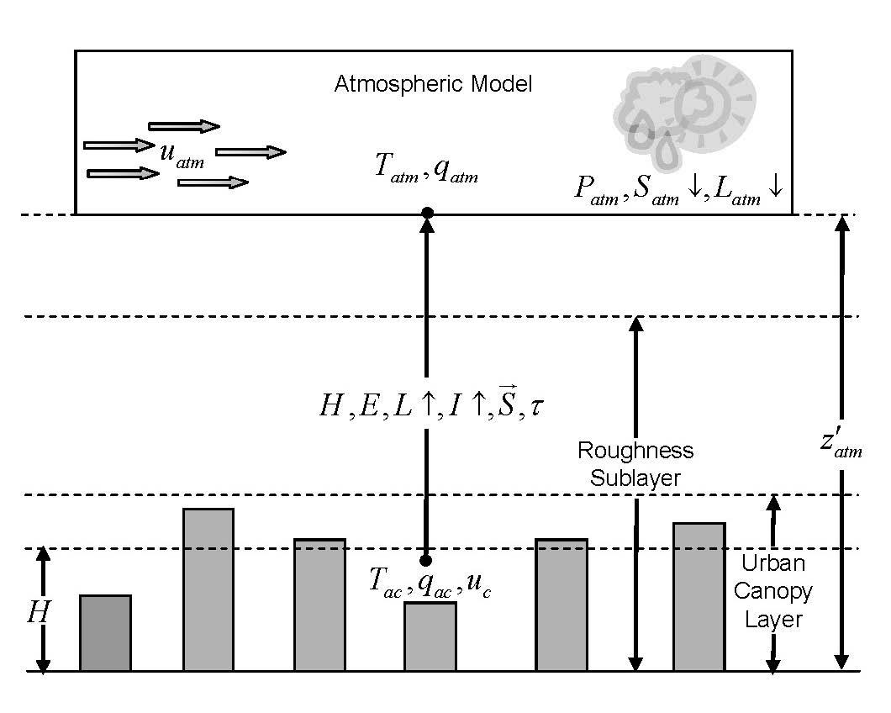
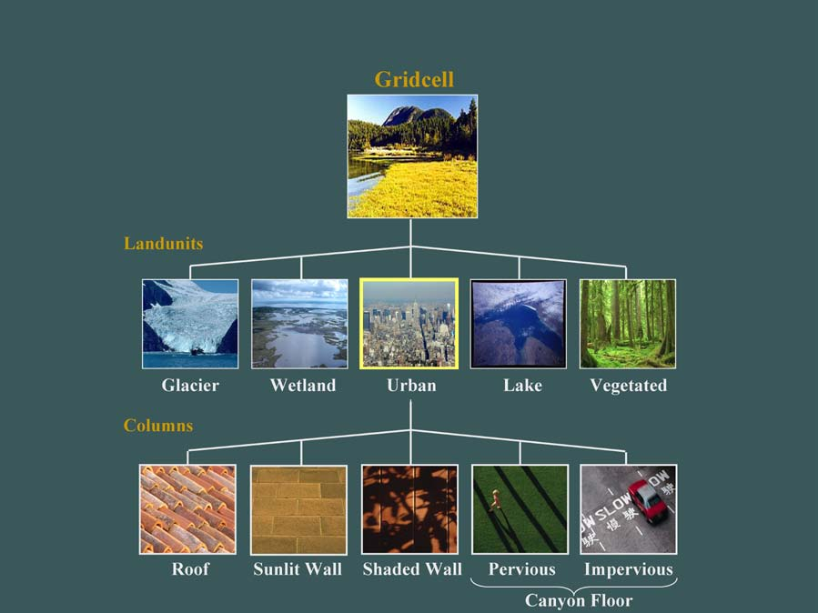
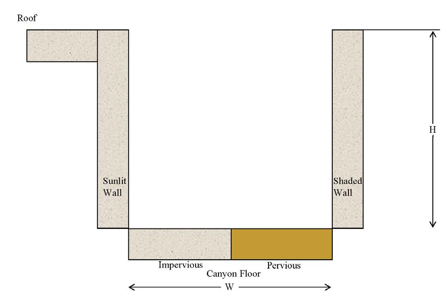
| Variable name | Symbol | Unit |
|---|---|---|
| \(^1\)Reference height | \(z'_{atm}\) | m |
| Zonal wind at \(z_{atm}\) | \(u_{atm}\) | m s\(^{-1}\) |
| Meridional wind at \(z_{atm}\) | \(v_{atm}\) | m s\(^{-1}\) |
| Potential temperature | \(\overline{\theta_{atm}}\) | K |
| Specific humidity at \(z_{atm}\) | \(q_{atm}\) | kg kg\(^{-1}\) |
| Pressure at \(z_{atm}\) | \(P_{atm}\) | Pa |
| Temperature at \(z_{atm}\) | \(T_{atm}\) | K |
| Incident longwave radiation | \(L_{atm} \downarrow\) | W m\(^{-2}\) |
| \(^2\)Liquid precipitation | \(q_{rain}\) | mm s\(^{-1}\) |
| \(^2\)Solid precipitation | \(q_{sno}\) | mm s\(^{-1}\) |
| Incident direct beam visible solar radiation | \(S_{atm}\downarrow_{vis}^{\mu}\) | W m\(^{-2}\) |
| Incident direct beam near-infrared solar radiation | \(S_{atm}\downarrow_{nir}^{\mu}\) | W m\(^{-2}\) |
| Incident diffuse visible solar radiation | \(S_{atm}\downarrow_{vis}\) | W m\(^{-2}\) |
| Incident diffuse near-infrared solar radiation | \(S_{atm}\downarrow_{nir}\) | W m\(^{-2}\) |
| \(^3\)Carbon dioxide (CO\(_2\)) concentration | \(c_{a}\) | ppmv |
| \(^3\)Aerosol deposition rate | \(D_{sp}\) | kg m\(^{-2}\) s\(^{-1}\) |
| \(^3\)Nitrogen deposition rate | \(ND_{ndep_sminn}\) | g (N) m\(^{-2}\) yr\(^{-1}\) |
| Variable name | Symbol | Unit |
|---|---|---|
| \(^{1}\) Latent heat flux | \(\lambda E\) | W m\(^{-2}\) |
| Sensible heat flux | \(H\) | W m\(^{-2}\) |
| Water vapor flux | \(E\) | mm s\(^{-1}\) |
| Zonal momentum flux | \(\tau_{x}\) | kg m\(^{-1}\)s\(^{-2}\) |
| Meridional momentum flux | \(\tau_{y}\) | kg m\(^{-1}\)s\(^{-2}\) |
| Emitted longwave radiation | \(L {\uparrow}\) | W m\(^{-2}\) |
| Direct beam visible albedo | \(I {\uparrow}_{vis}^{\mu}\) | - |
| Direct beam near-infrared albedo | \(I {\uparrow}_{nir}^{\mu}\) | - |
| Diffuse visible albedo | \(I {\uparrow}_{vis}\) | - |
| Diffuse near-infrared albedo | \(I {\uparrow}_{nir}\) | - |
| Absorbed solar radiation | \(\overrightarrow{S}\) | W m\(^{-2}\) |
| Radiative temperature | \(T_{rad}\) | K |
| Temperature at 2 meter height | \(T_{2m}\) | K |
| Specific humidity at 2 meter height | \(q_{2m}\) | kg kg\(^{-1}\) |
| Snow water equivalent | \(W_{sno}\) | m |
| Aerodynamic resistance | \(r_{am}\) | s m\(^{-1}\) |
| Friction velocity | \(u_{*}\) | m s\(^{-1}\) |
| \(^{2}\)Dust flux | \(F_{j}\) | kg m\(^{-2}\) s\(^{-1}\) |
| \(^{2}\)Net ecosystem exchange | NEE | kg CO\(_{2}\) m\(^{-2}\) s\(^{-1}\) |
1.1.4 Biogeophysical Processes
Biogeophysical processes are simulated for each of the five urban columns and each column maintains its own prognostic variables (e.g., surface temperature). The processes simulated include:
Absorption and reflection of solar radiation (chapter 2)
Absorption, reflection, and emission of longwave radiation (chapter 2)
Momentum, sensible heat, and latent heat fluxes (chapter 3)
Anthropogenic heat fluxes to the canyon air due to waste heat from building heating/air conditioning (chapter 3). An example of parameterizing traffic heat fluxes is given in[2], however, traffic heat fluxes are not currently included in the global implementation of the model.
Heat transfer in roofs, building walls, and the road including phase change (chapter 4)
Hydrology [roofs — storage of liquid and solid precipitation (ponding and dew), surface runoff; walls — hydrologically inactive; impervious road – storage of liquid and solid precipitation (ponding and dew), surface runoff; pervious road - infiltration, surface runoff, sub-surface drainage, redistribution of water within the column] (chapter 5).
1.2 Model Requirements
1.2.1 Initialization
Initialization of the urban model (i.e., providing the model with initial temperature and moisture states) depends on the type of run (startup or restart) (see the CLM4 User’s Guide). An initial run starts the model from either initial conditions that are set internally in the Fortran code (referred to as arbitrary initial conditions) or from an initial conditions dataset that enables the model to start from a spun up state (i.e., where the urban landunit is in equilibrium with the simulated climate). In restart runs, the model is continued from a previous simulation and initialized from a restart file that ensures that the output is bit-for-bit the same as if the previous simulation had not stopped. The fields that are required from the restart or initial conditions files can be obtained by examining the code. Arbitrary initial conditions are specified as follows.
All urban columns consist of fifteen layers to be consistent with CLM4. Generally, temperature calculations are done over all layers, \(N_{levgrnd}=\)15, while hydrology calculations for the pervious road are done over the top ten layers, \(N_{levsoi}=\)10, the bottom five layers being specified as bedrock. Pervious and impervious road are initialized with temperatures (surface \(T_{g}\), and layers \(T_{i}\), for layers \(i=1,...,N_{levgrnd}\)) of 274 K. Roof, sunwall, and shadewall are initialized to 292 K. This relatively high temperature is to avoid initialization shock from large space heating/air conditioning and waste heat fluxes. All surfaces are initialized with no snow (\(W_{sno}=\)0). Roof and impervious road are initialized with no ponded water, while the pervious road soil layers \(i=1,...,N_{levsoi}\) are initialized with volumetric soil water content \(\theta_{i}=\)0.3 mm\(^{3}\) mm\(^{-3}\) and layers \(i=N_{levsoi}+1,...,N_{levgrnd}\) are initialized \(\theta_{i}=0.0\) mm\(^{3}\) mm\(^{-3}\). The soil liquid water and ice contents are initialized as \(w_{liq,i}=\Delta z_{i}\rho_{liq}\theta_{i}\) and \(w_{ice,i}=0\), where \(\rho_{liq}\) is the density liquid water (kg m\(^{-3}\)) (Table 4). The pervious road is initialized with water stored in the unconfined aquifer and unsaturated soil \(W_{a}=W_{t}=\) 4800 mm and water table depth \(z_{\nabla}=\)4.8 m.
1.2.2 Surface Data
Required input data for urban landunits are listed in Table 3. This data is provided by the surface dataset at the required spatial resolution (see the CLM4 User’s Guide). Present day global urban extent and urban properties were developed by[60]. Urban extent, defined for four classes [tall building district (TBD), and high, medium, and low density (HD, MD, LD)] was derived from LandScan 2004, a population density dataset derived from census data, nighttime lights satellite observations, road proximity, and slope[61]. The urban extent data is aggregated from the original 1 km resolution to a 0.5° by 0.5° global grid. For this particular implementation, only the sum of the TBD, HD, and MD classes are used to define urban extent as the LD class is highly rural and likely better modeled as a vegetated surface.
For each of 33 distinct regions across the globe, thermal (e.g., heat capacity and thermal conductivity), radiative (e.g., albedo and emissivity) and morphological (e.g., height to width ratio, roof fraction, average building height, and pervious fraction of the canyon floor) properties of roof/wall/road are provided by[60] for each of the four density classes. Building interior minimum and maximum temperatures are prescribed based on climate and socioeconomic considerations. Urban parameters are determined for the 0.5° by 0.5° global grid based on the dominant density class by area. This prevents potentially unrealistic parameter values that may result if the density classes are averaged. As a result, the current global representation of urban is almost exclusively medium density. Future implementations of the model could represent each of the density classes as a separate landunit. The surface dataset creation routines (see CLM4 User’s Guide) aggregate the data to the desired resolution. It is surmised that the MODIS-based vegetation dataset used in CLM4 classifies built areas as bare soil, thus the urban extent preferentially replaces bare soil when it exists within the grid cell. A very small minimum threshold of 0.1% of the grid cell by area is used to resolve urban areas. An elevation threshold of 2200 m is used to eliminate urban areas where the grid cell surface elevation is significantly higher than the elevation the cities are actually at because of the coarse spatial resolution of the model. This prevents overestimates of anthropogenic heating in winter due to unrealistically cold temperatures.
| Parameter name | Symbol | Unit |
|---|---|---|
| Percent urban | - | % |
| Canyon height to width ratio | \(H/W\) | - |
| Roof fraction | \(W_{roof}\) | - |
| \(^{1}\)Previous road fraction | \(f_{prvrd}\) | - |
| Emissivity of roof | \(\epsilon_{roof}\) | - |
| Emissivity of impervious road | \(\epsilon_{imprvrd}\) | - |
| Emissivity of pervious road | \(\epsilon_{prvrd}\) | - |
| Emissivity of sunlit and shaded walls | \(\epsilon_{wall}\) | - |
| Building height | \(H\) | m |
| Roof albedo — visible direct | \(\alpha_{roof,vis}^{\mu}\) | - |
| Roof albedo — visible diffuse | \(\alpha_{roof,vis}\) | - |
| Roof albedo — near-infrared direct | \(\alpha_{roof,nir}^{\mu}\) | - |
| Roof albedo — near-infrared diffuse | \(\alpha_{roof,nir}\) | - |
| Wall albedo — visible direct | \(\alpha_{wall,vis}^{\mu}\) | - |
| Wall albedo — visible diffuse | \(\alpha_{wall,vis}\) | - |
| Wall albedo — near-infrared direct | \(\alpha_{wall,nir}^{\mu}\) | - |
| Wall albedo — near-infrared diffuse | \(\alpha_{wall,nir}\) | - |
| Impervious road albedo — visible direct | \(\alpha_{imprvrd,vis}^{\mu}\) | - |
| Impervious road albedo — visible diffuse | \(\alpha_{imprvrd,vis}\) | - |
| Impervious road albedo — near-infrared direct | \(\alpha_{imprvrd,nir}^{\mu}\) | - |
| Impervious road albedo — near-infrared diffuse | \(\alpha_{imprvrd,nir}\) | - |
| Pervious road albedo — visible direct | \(\alpha_{prvrd,vis}^{\mu}\) | - |
| Pervious road albedo — visible diffuse | \(\alpha_{prvrd,vis}\) | - |
| Pervious road albedo — near-infrared direct | \(\alpha_{prvrd,nir}^{\mu}\) | - |
| Pervious road albedo — near-infrared diffuse | \(\alpha_{prvrd,nir}\) | - |
| Roof thermal conductivity | \(\lambda_{roof,i}\) | W m\(^{-1}\) K\(^{-1}\) |
| Wall thermal conductivity | \(\lambda_{wall,i}\) | W m\(^{-1}\) K\(^{-1}\) |
| \(^{2}\)Impervious road thermal conductivity | \(\lambda_{imprvrd,i}\) | W m\(^{-1}\) K\(^{-1}\) |
| \(^{3}\)Pervious road thermal conductivity | \(\lambda_{prvrd,i}\) | W m\(^{-1}\) K\(^{-1}\) |
| Roof volumetric heat capacity | \(c_{roof,i}\) | J m\(^{-3}\) K\(^{-1}\) |
| Wall volumetric heat capacity | \(c_{wall,i}\) | J m\(^{-3}\) K\(^{-1}\) |
| \(^{2}\)Impervious road volumetric heat capacity | \(c_{imprvrd,i}\) | J m\(^{-3}\) K\(^{-1}\) |
| \(^{3}\)Pervious road volumetric heat capacity | \(c_{prvrd,i}\) | J m\(^{-3}\) K\(^{-1}\) |
| Maximum interior building temperature | \(T_{iB,max}\) | K |
| Minimum interior building temperature | \(T_{iB,min}\) | K |
| Height of wind source in canyon | \(H_{w}\) | m |
| Number of impervious road layers | \(N_{imprvrd}\) | - |
| Wall thickness | \(\Delta z_{wall}\) | m |
| Roof thickness | \(\Delta z_{roof}\) | m |
| \(^{4}\)Percent sand, percent clay of pervious road (soil) | %\(sand\), %\(clay\) | % |
| Grid cell latitude and longitude | \(\Phi, \theta\) | degrees |
| \(^{1}\) This fraction is relative to the canyon floor. \(^{2}\) Required for layers \(i=1,...,N_{imprvrd}\), derived from grid cell soil texture for other layers (section 4.3). \(^{3}\) Derived from grid cell soil texture (\(\%sand\), \(\%clay\)) (section 4.3). \(^{4}\) Obtained from grid cell soil texture (\(\%sand\), \(\%clay\)). | ||
1.2.3 Physical Constants
Physical constants, shared by all of the components in the CCSM, are presented in Table 4. Not all constants are necessarily used by the urban model.
| Constant name | Symbol | Value | Unit |
|---|---|---|---|
| Pi | \(\pi\) | 3.14159265358979323846 | - |
| Acceleration of gravity | \(g\) | 9.80616 | m s\(^{-2}\) |
| Standard pressure | \(P_{std}\) | 101325 | Pa |
| Stefan-Boltzmann constant | \(\sigma\) | 5.67\(\times\)10\(^{-8}\) | W m\(^{-2}\) K\(^{-4}\) |
| Boltzmann constant | \(\kappa\) | 1.38065\(\times\)10\(^{-23}\) | J K\(^{-1}\) molecule\(^{-1}\) |
| Avogadro’s number | \(N_{A}\) | 6.02214 \(\times\)10\(^{26}\) | molecule kmol\(^{-1}\) |
| Universal gas constant | \(R_{gas}\) | \(N_{A} \kappa\) | J K\(^{-1}\) kmol\(^{-1}\) |
| Molecular weight of dry air | \(M W_{da}\) | 28.966 | kg kmol\(^{-1}\) |
| Dry air gas constant | \(R_{da}\) | \(R_{gas}/MW_{da}\) | J K\(^{-1}\)kg\(^{-1}\) |
| Molecular weight of water vapor | \(MW_{wv}\) | 18.016 | kg kmol\(^{-1}\) |
| Water vapor gas constant | \(R_{wv}\) | \(R_{gas}/MW_{wv}\) | J K\(^{-1}\)kg\(^{-1}\) |
| Von Karman constant | \(k\) | 0.4 | - |
| Freezing temperature of fresh water | \(T_{f}\) | 273.15 | K |
| Density of liquid water | \(\rho_{liq}\) | 1000 | kg m\(^{-3}\) |
| Density of ice | \(\rho_{ice}\) | 917 | kg m\(^{-3}\) |
| Specific heat capacity of dry air | \(C_{p}\) | 1.00464 \(\times\)10\(^{3}\) | J kg\(^{-1}\) K\(^{-1}\) |
| Specific heat capacity of water | \(C_{liq}\) | 4.188\(\times\)10\(^{3}\) | J kg\(^{-1}\)K\(^{-1}\) |
| Specific heat capacity of ice | \(C_{ice}\) | 2.11727\(\times\)10\(^{3}\) | J kg\(^{-1}\)K\(^{-1}\) |
| Latent heat of vaporization | \(\lambda_{vap}\) | 2.501\(\times\)10\(^{6}\) | J kg\(^{-1}\) |
| Latent heat of fusion | \(L_{f}\) | 3.337\(\times\)10\(^{5}\) | J kg\(^{-1}\) |
| Latent heat of sublimation | \(\lambda_{subl}\) | \(\lambda_{vap}+L_{f}\) | J kg\(^{-1}\) |
| \(^{1}\)Thermal conductivity of water | \(\lambda_{liq}\) | 0.6 | W m\(^{-1}\) K\(^{-1}\) |
| \(^{1}\)Thermal conductivity of ice | \(\lambda_{ice}\) | 2.29 | W m\(^{-1}\) K\(^{-1}\) |
| \(^{1}\)Thermal conductivity of air | \(\lambda_{air}\) | 0.023 | W m\(^{-1}\) K\(^{-1}\) |
| Radius of the earth | R\(_{e}\) | 6.37122\(\times\)10\(^{6}\) | m |
| \(^1\) Not shared by other components of the coupled modeling system. | |||
2 Albedos and Radiative Fluxes
The effects of geometry on the radiation balance of urban surfaces are a key driver of urban-rural energy balance differences[40]. Shadowing of urban surfaces affects the incident radiation and thus temperature. Similar to vegetated surfaces, multiple reflections of radiation between urban surfaces must be accounted for[62]. The net solar radiation and net longwave radiation, the net of which is the net radiation, are needed for each urban surface to drive turbulent and ground heat fluxes. The atmospheric model also requires radiative fluxes and albedo from the urban landunit, which are appropriately averaged with other landunits within the gridcell. The urban canyon unit is used to represent these radiative processes. Several simplifying assumptions are made. The effects of absorption, emission, and scattering of radiation by the canyon air are neglected and surfaces are assumed to be isotropic.
2.1 Albedo
The albedo of each urban surface is a weighted combination of snow-free “ground” albedo and snow albedo. Only roof and road surfaces are affected by snow. The direct beam \(\alpha_{u,\Lambda}^{\mu}\) and diffuse \(\alpha_{u,\Lambda}\) albedos (where \(\mu\) denotes roof, impervious or pervious road) are \[\begin{equation} \label{alebdo_direct_beam} \alpha_{u,\Lambda}^{\mu} = \alpha_{g,\Lambda}^{\mu}(1-f_{u,sno})+\alpha_{sno,\Lambda}^{\mu}f_{u,sno} \end{equation}\] \[\begin{equation} \label{alebdo_diffuse_beam} \alpha_{u,\Lambda} = \alpha_{g,\Lambda}(1-f_{u,sno})+\alpha_{sno,\Lambda}f_{u,sno} \end{equation}\] where \(f_{u,sno}\) is the fraction of the urban surface covered with snow which is calculated from[63] \[\begin{equation} \label{eq:urban_snow_fraction} f_{u,sno} = \frac{z_{u,sno}}{0.05}\leq1. \end{equation}\]
The direct and diffuse “ground” albedos, \(\alpha_{u,\Lambda}^{\mu}\) and \(\alpha_{u,\Lambda}\), where \(\Lambda\) denotes either the visible (VIS) or near-infrared (NIR) waveband, are provided by the surface dataset (Table 3), and \(z_{u,sno}\) is the depth of snow (m) (section 5.1). An estimate of snow albedo is made based on the parameterization of[64] in which albedo depends on solar zenith angle, grain size, and soot content (e.g., as adopted by the Land Surface Model (LSM)[63]). Here, however, several simplifying assumptions are made due to uncertainties in how to apply such a parameterization to urban surfaces. A snow grain radius of 100 \(\mu\)m (new powder snow, aged a few days) and a soot mass fraction of 10\(\times\)10\(^{-5}\) (arrived at by noting that the LSM global soot mass fraction is 5\(\times\)10\(^{-6}\) and Chylek et al. (1987) observed that soot concentrations in urban snowpacks averaged three times the concentration in rural snowpacks) are assumed. Direct and diffuse albedos are assumed to be equal. This yields \(\alpha_{sno,VIS}^{\mu}=\alpha_{sno,VIS}=0.66\) and \(\alpha_{sno,NIR}^{\mu}=\alpha_{sno,NIR}=0.56\) which fall about in the middle of the range given by[38].
2.2 Incident Direct Solar Radiation
Unlike the horizontal roof surface, the direct beam solar radiation received by the walls and the road must be adjusted for orientation and shadowing. The analytical solution given below follows[41]. First, let \(\theta\) be the angle between the sun direction and the along-canyon axis and consider the case where the along-canyon axis is perpendicular to the sun direction (\(\theta=\pi/2\)). In this case, as shown in Figure 4, if the solar zenith angle \(\mu\) is greater than the critical solar zenith angle \(\mu_{0}\) (\(\mu_{0}=\tan^{-1}(W/H)\)), the road is in full shade, and the sunlit wall is in partial sun. Conversely, if \(\mu\) is less than \(\mu_{0}\), the road is in partial sun and the sunlit wall is in full sun. Note that, radiatively, the pervious and impervious road are treated the same, although their albedos are specified separately and may differ (Table 3).
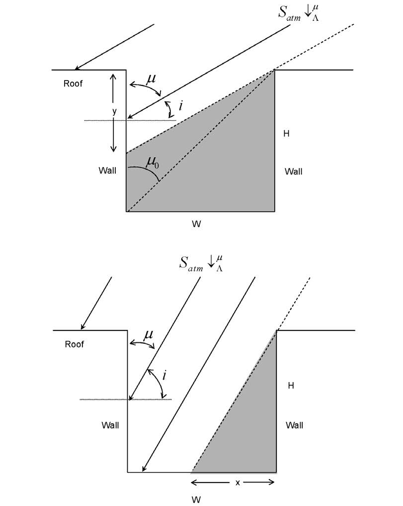
If the direct beam solar radiation received by a horizontal surface (i.e., as received by the roof) is \(S_{atm}\downarrow_{\Lambda}^{\mu}\), the solar radiation on the wall in full illumination (\(\mu\leq\mu_{0}\)) is (\(S_{atm}\downarrow_{\Lambda}^{\mu} \cos i)/\cos \mu\) where \(i\) is the incidence angle (Figure 4). Since \(\cos i=\cos(90-\mu)=\sin \mu\), the solar radiation on the sunlit wall is \[\begin{equation} \label{side_view_sunwall} S_{sunwall}\downarrow_\Lambda^{\mu}(\theta=\pi/2)=\tan(\mu)S_{atm}\downarrow_\Lambda^{\mu} \quad \mu < \mu_0. \end{equation}\] Note that this is twice the radiation received by the wall in[41] because here we force the other (shaded) wall to receive no solar radiation (\(S_{shdwall}\downarrow_\Lambda^{\mu}=0\)). In the case of \(\mu>\mu_{0}\), the illuminated fraction is \((H-y)/H\) and \(S_{sunwall}\downarrow_\Lambda^{\mu}=[(H-y)/H]\tan\mu S_{atm}\downarrow_\Lambda^{\mu}\). Since \(\tan \mu=W/(H-y)\) this simplifies to \[\begin{equation} \label{side_view_sunwall_simple} S_{sunwall}\downarrow_\Lambda^{\mu}(\theta=\pi/2)=\frac{W}{H}S_{atm}\downarrow_\Lambda^{\mu} \quad \mu>\mu_{0}. \end{equation}\]
Since the road is a horizontal surface, \(S_{road}\downarrow_\Lambda^{\mu}=[(W-x)/W]S_{atm}\downarrow_\Lambda^\mu\) for \(\mu \leq \mu_{0}\). Since \(x=H\tan\mu\), the direct solar radiation incident on the road (pervious and impervious) is \[\begin{equation} \label{side_view_road} S_{road}\downarrow_\Lambda^{\mu}(\theta=\pi/2)=\left \{ \begin{array}{ll} 0 & \mu>\mu_{0} \\ \left(1-\frac{H}{W}\tan\mu\right)S_{atm}\downarrow_\Lambda^{\mu} & \mu \leq\mu_{0}. \end{array} \right. \end{equation}\]
Equations ([side_view_sunwall]) and ([side_view_sunwall_simple]) for the walls and equation ([side_view_road]) for the road can now be expanded to account for any canyon orientation (\(0\leq\theta\leq\pi/2\)). If \(\theta\) is the angle between the sun direction and the along-canyon axis (Figure 5), then the expression for the incidence angle is now \(\cos i=\sin\mu\sin\theta\) and equation ([side_view_sunwall]) becomes \[\begin{equation} \label{side_view_sunwall2} S_{sunwall}\downarrow_\Lambda^{\mu}(\theta)=\sin\theta\tan\mu S_{atm}\downarrow_{\Lambda}^{\mu} \quad \mu\leq\mu_{0}. \end{equation}\]
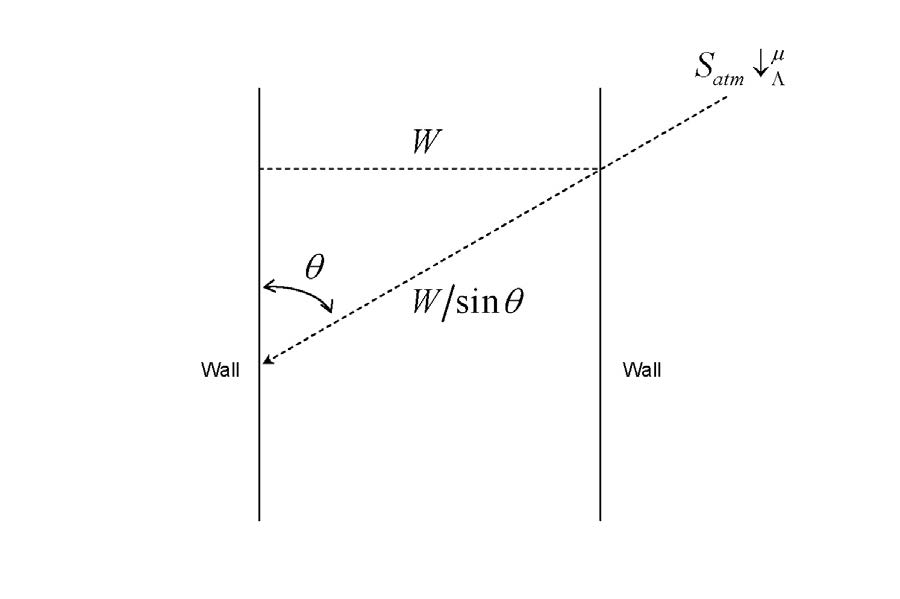
For the case of \(\mu>\mu_{0}\), \(S_{sunwall}\downarrow_\Lambda^{\mu}(\theta)=[(H-y)/H]\sum\theta\tan\mu S_{atm}\downarrow_{\Lambda}^{\mu}\). However, now \(\tan \mu=(W/\sin\theta)/(H-y)\) and thus \[\begin{equation} \label{side_view_sunwall3} S_{sunwall}\downarrow_\Lambda^{\mu}(\theta)=\frac{W}{H}S_\textrm{atm}\downarrow_{\Lambda}^{\mu} \quad \mu>\mu_{0}. \end{equation}\] Similarly, for the road (\(\mu\leq\mu_{0}\)), \(S_{road}\downarrow_\Lambda^{\mu}(\theta)=[(W/\sin\theta-x)/(W/\sin\theta)]S_{atm}\downarrow_\Lambda^\mu\) with \(x=H\tan\mu\) simplifies to \[\begin{equation} \label{side_view_road_simple} S_{road}\downarrow_\Lambda^{\mu}(\theta)=\left \{ \begin{array}{ll} 0 & \mu>\mu_{0} \\ \left(1-\frac{H}{W}\sin\theta\tan\mu\right)S_{atm}\downarrow_\Lambda^{\mu} & \mu \leq\mu_{0} \end{array} \right. \end{equation}\]
Note that the critical solar zenith angle is now \[\begin{equation} \label{solar_zenith_angle} \mu_{0}=\tan^{-1}\left(\frac{W/\sin\theta}{H}\right). \end{equation}\]
Equation ([side_view_sunwall2]), ([side_view_sunwall3]) and ([side_view_road_simple]) are integrated over all canyon orientations (\(0\leq\theta\leq\pi/2\)). The integration is done in two parts, first from \(\theta=0\) to \(\theta=\theta_{0}\), and second from \(\theta=\theta_{0}\) to \(\theta=\pi/2\), where \(\theta_{0}\) is the critical canyon orientation for which the road is no longer illuminated. This can be derived from Equation ([solar_zenith_angle]) and is \[\begin{equation} \theta_{0}=\sin^{-1}\left[\min\left(\frac{W}{H\tan\mu},1\right)\right]. \end{equation}\]
The integrations thus are \[\begin{equation} S_{sunwall}\downarrow_{\Lambda}^{\mu}=\frac{4}{2\pi}\int_{0}^{\theta_{0}}\sin\theta\tan\mu \end{equation}\] and \[\begin{equation} S_{road}\downarrow_\Lambda^{\mu}=\frac{4}{2\pi}\int_{0}^{\theta_{0}}\left(1-\frac{H}{W}\sin\theta\tan\mu\right)S_{atm}\downarrow_{\Lambda}^{\mu}d\theta. \end{equation}\] The direct beam solar radiation incident on the roof, walls and road is therefore \[\begin{equation} S_{roof}\downarrow_{\Lambda}^{\mu}=S_{atm}\downarrow_{\Lambda}^{\mu}, \end{equation}\] \[\begin{equation} S_{shdwall}\downarrow_{\Lambda}^{\mu}=0, \end{equation}\] \[\begin{equation} S_{sunwall}\downarrow_{\Lambda}^{\mu}=2S_{atm}\downarrow_{\Lambda}^{\mu}\left[\frac{W}{H}\left(\frac{1}{2}-\frac{\theta_{0}}{\pi}\right)+\frac{1}{\pi}\tan\mu(1-\cos\theta_{0})\right], \end{equation}\] \[\begin{equation} \label{eq:downward_direct_incident_solar_radiation} S_{road}\downarrow_{\Lambda}^{\mu}=S_{imprvrd}\downarrow_{\Lambda}^{\mu}=S_{prvrd}\downarrow_{\Lambda}^{\mu}=S_{atm}\downarrow_{\Lambda}^{\mu}\left[\frac{2\theta_{0}}{\pi}-\frac{2}{\pi}\frac{H}{W}\tan\mu(1-\cos\theta_{0})\right]. \end{equation}\] The direct incident solar radiation conserves energy as \[\begin{equation} \begin{aligned} S_{atm}\downarrow_{\Lambda}^{\mu} &=f_{roof}S_{roof}\downarrow_{\Lambda}^{\mu} +\\ & (1-f_{roof})\left[S_{imprvd}\downarrow_{\Lambda}^{\mu}(1-f_{prvrd})+S_{prvrd}\downarrow_{\Lambda}^{\mu}f_{prvrd}+\frac{H}{W}\left(S_{sunwall}\downarrow_{\Lambda}^{\mu}+S_{shdwall}\downarrow_{\Lambda}^{\mu}\right)\right]. %\notag % too avoid citation number for the second line \end{aligned} \end{equation}\] Note that the factor \(H/W\) for the sunlit wall and shaded wall converts the flux from watts per meter squared of wall area to watts per meter squared of ground area.
2.3 View Factors
The interaction of diffuse radiation (i.e., longwave and scattered solar radiation) between urban surfaces depends on angle (view) factors, i.e., the fraction of diffusely distributed energy leaving one “surface” (e.g., sky) that arrives at another surface (e.g., wall)[65]. If \(E_{ij}\) is is the diffuse radiative flux density on surface \(j\) that originated from surface \(i\) and \(E_{i}\) is the radiative flux from surface \(i\), then \[\begin{equation} \label{eq:diffuse_radiative_density} E_{ij} = F_{ij}E_{i} \end{equation}\] where \(F_{ij}\) is the view factor. The view factors depend only on the geometrical configurations of the involved surfaces. A table of view factors for various configurations is provided in Appendix A of[65]. For instance, the view factor for the radiation from the wall to the sky can be derived from configuration nine of Appendix A. If \(dA_{1}\) is an infinitesimal element on surface 1 (i.e., wall) and \(A_{2}\) is a finite surface (i.e., sky) (Figure 6), then the angle factor \(F_{dA_{1}-A{2}}\) for diffuse radiation leaving element \(dA_{1}\) and arriving at \(dA_{2}\) is \[\begin{equation} F_{dA_{1}-A{2}} = \frac{1}{2\pi}\left(\tan^{-1}\frac{1}{Y}-AY\tan^{-1}A\right) \end{equation}\] where \(A=1/\sqrt{X^2+Y^2}\), \(X=a/b\), and \(Y=c/b\). Following Sakakibara (1996) and Kusaka et al. (2001), for an infinitely long canyon, \(b=\infty\), \(a=W\), and so the wall-sky view factor at distance \(c\) from a point on the wall to the canyon top is \[\begin{equation} \Psi_{wall-sky|c}=\frac{1}{2}\left(1-\frac{c}{\sqrt{c^{2}+W^{2}}}\right). \end{equation}\] The total wall-sky view factor can be found by integrating the above equation over the height of the wall as \[\begin{equation} \Psi_{wall-sky}=\frac{1}{H}\int_{c=0}^{c=H}\frac{1}{2}\left(1-\frac{c}{\sqrt{c^2+W^2}}\right)dc=\frac{\frac{1}{2}\left(\frac{H}{W}+1-\sqrt{1+\left(\frac{H}{W}\right)^2}\right)}{\frac{H}{W}}. \end{equation}\] By the reciprocity rule (\(A_{1}F_{A_{1}-A_{2}}=A_{2}F_{A_{2}-A_{1}}\)) (Sparrow and Cess 1978), the sky-wall view factor is \[\begin{equation} \label{eq:sky_wall_view_factor} \Psi_{sky-wall} = \frac{H}{W}\Psi_{wall-sky}. \end{equation}\] When applied to equation ([eq:diffuse_radiative_density]), \(\Psi_{sky-wall}\) will yield a flux density to the wall in terms of per unit sky area. In the radiation computations detailed below, the diffuse fluxes for the walls are solved in terms of per unit wall area. Dividing equation ([eq:sky_wall_view_factor]) by the height to width ratio converts the view factor to per unit wall area. Thus, \[\begin{equation} \Psi_{sky-wall} = \frac{\frac{1}{2}\left(\frac{H}{W}+1-\sqrt{1+\left(\frac{H}{W}\right)}\right)}{\frac{H}{W}} \end{equation}\]
Similarly, the view factor for radiation from the sky to the road and from road to sky can be solved and is \[\begin{equation} \label{eq:sky_road_view_factor} \Psi_{sky-road}=\frac{W}{H}\Psi_{road-sky}=\Psi_{road-sky}=\sqrt{1+(\frac{H}{W})^2}-\frac{H}{W}. \end{equation}\] By symmetry, \[\begin{equation} \Psi_{wall-road}=\Psi_{wall-sky} \end{equation}\] and the other view factors can be deduced from conservation of energy as \[\begin{equation} \Psi_{road-wall} = \frac{1}{2}(1-\Psi_{road-sky}), \end{equation}\] \[\begin{equation} \Psi_{wall-wall}=1-\Psi_{wall-sky}-\Psi_{wall-road}. \end{equation}\]
The view factors are presented graphically in Figure 7. Note that the view factors for radiation from the walls to the other surfaces sum to one (\(\Psi_{wall-wall}+\Psi_{wall-road}+\Psi_{wall-sky}=1\)). Similarly, the view factors for radiation from the road to the other surfaces also sum to one (\(\Psi_{road-wall}+\Psi_{road-wall}+\Psi_{road-sky}=1\). As Harman et al. (2004) notes, at low height to width ratios, the road-sky view factor is close to one, the wall-wall view factor is close to zero, and the wall sky view factor is close to one half. However, at these low height to width ratios, the wall area is small compared to the road or sky area, indicating that most of the radiative exchange occurs between the road and sky, as it would for a flat surface. At height to width ratios greater than one, most of the radiative interactions take place between the two walls and the wall and the road. These view factors are consistent with those given by both[41] and[62].
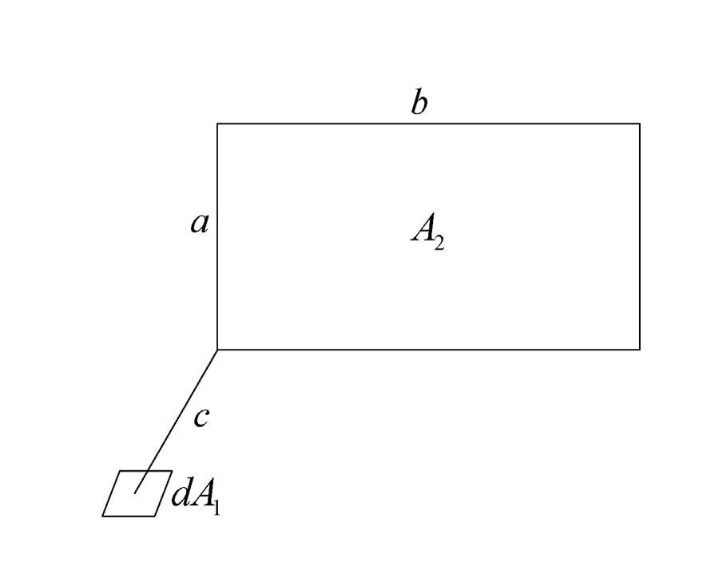
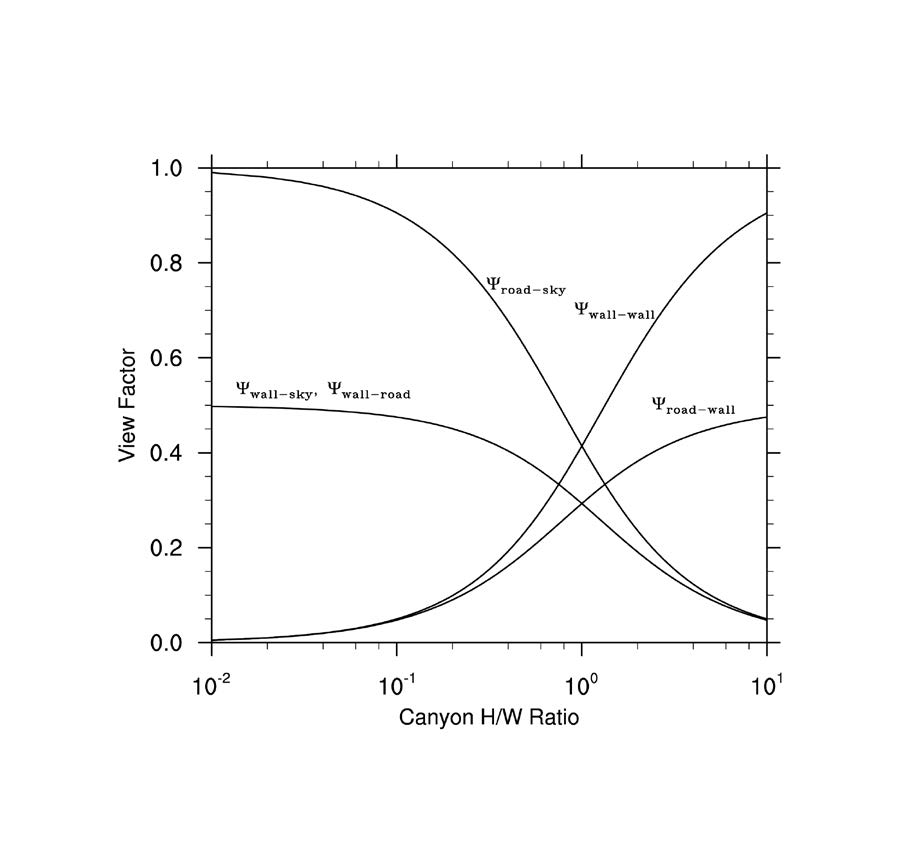
2.4 Incident Diffuse Solar Radiation
The two view factors needed to compute the incident diffuse solar radiation are \(\Psi_{sky-road}\) (equation ([eq:sky_road_view_factor])) and \(\Psi_{sky-wall}\) (equation ([eq:sky_wall_view_factor])). The diffuse solar radiation incident on roof, walls and road is then \[\begin{equation} S_{roof}\downarrow_{\Lambda} = S_{atm}\downarrow_{\Lambda}, \end{equation}\] \[\begin{equation} S_{imprvrd}\downarrow_{\Lambda} = S_{prvrd}\downarrow_{\Lambda}=S_{atm}\downarrow_{\Lambda}\Psi_{sky-road}, \end{equation}\] \[\begin{equation} S_{shdwall}\downarrow_{\Lambda}=S_{atm}\downarrow_{\Lambda}\Psi_{sky-wall}, \end{equation}\] \[\begin{equation} S_{sunwall} \downarrow_{\Lambda}=S_{atm}\downarrow_\Lambda \Psi_{sky-wall}. \end{equation}\] The diffuse incident solar radiation conserves energy as \[\begin{equation} \begin{aligned} S_{atm}\downarrow_{\Lambda} &=f_{roof}S_{roof}\downarrow_{\Lambda} +\\ & (1-f_{roof})\left[S_{imprvd}\downarrow_{\Lambda}(1-f_{prvrd})+S_{prvrd}\downarrow_{\Lambda}f_{prvrd}+\frac{H}{W}\left(S_{sunwall}\downarrow_{\Lambda}+S_{shdwall}\downarrow_{\Lambda}\right)\right]. \end{aligned} \end{equation}\]
2.5 Absorbed and Reflected Solar Radiation
The direct and diffuse net (absorbed) and reflected solar radiation for the roof is \[\begin{equation} \vec{S}_{roof,\Lambda}^\mu = S_{roof}\downarrow_{\Lambda}^{\mu}(1-\alpha_{roof,\Lambda}^\mu), \end{equation}\] \[\begin{equation} \vec{S}_{roof,\Lambda} = S_{roof}\downarrow_{\Lambda}(1-\alpha_{roof,\Lambda}), \end{equation}\] \[\begin{equation} S_{roof}\uparrow_{\Lambda}^\mu = S_{roof}\downarrow_{\Lambda}^{\mu}(\alpha_{roof,\Lambda}^\mu), \end{equation}\] \[\begin{equation} S_{roof}\uparrow_{\Lambda} = S_{roof}\downarrow_{\Lambda}(\alpha_{roof,\Lambda}). \end{equation}\]
The net (absorbed) and reflected solar radiation for walls and road and the reflected solar radiation to the sky are determined numerically by allowing for multiple reflections until a convergence criteria is met to ensure radiation is conserved. The reflected radiation from each urban surface is absorbed and re-reflected by the other urban surfaces. For example, the radiation scattered from the sunlit wall to the road, the shaded wall, and the sky depends on the view factors \(\Psi_{wall-road}\), \(\Psi_{wall-wall}\), and \(\Psi_{wall-sky}\), respectively (Figure 7). The multiple reflections are accounted for in five steps:
Determine the initial absorption and reflection by each urban surface and distribute this radiation to the sky, road, and walls according to view factors.
Determine the amount of radiation absorbed and reflected by each urban surface after the initial reflection. The solar radiation reflected from the walls to the road is projected to road area by multiplying by the height to width ratio and the solar radiation reflected from the road to the walls is projected to wall area by dividing by the height to width ratio.
The absorbed radiation for the \(i^{th}\) reflection is distributed to the sky, road, and walls according to view factors.
The reflected solar radiation for the \(i^{th}\) reflection is distributed to the sky, road, and walls according to view factors.
The reflected solar radiation to the sky for the \(i^{th}\) reflection is added to the total reflected solar radiation.
Steps 2–5 are repeated until a convergence criterion (absorbed radiation per unit incoming solar radiation for a given reflection is less than 1 \(\times\) 10\(^{-5}\) is met to ensure radiation is conserved. Direct beam and diffuse radiation are solved independently but follow the same solution steps. The solution below is for the direct beam component.
The initial direct beam absorption (\(i = 0\)) (step 1) by each urban surface is \[\begin{equation} \overrightarrow{S}_{imprvrd,\Lambda,i=0}^{\mu}=S_{imprvrd}\downarrow_{\Lambda}^{\mu}(1-\alpha_{imprvrd,\Lambda}^{\mu}), \end{equation}\] \[\begin{equation} \overrightarrow{S}_{prvrd,\Lambda,i=0}^{\mu}=S_{prvrd}\downarrow_{\Lambda}^{\mu}(1-\alpha_{prvrd,\Lambda}^{\mu}), \end{equation}\] \[\begin{equation} \overrightarrow{S}_{sunwall,\Lambda,i=0}^{\mu}=S_{sunwall}\downarrow_{\Lambda}^{\mu}(1-\alpha_{sunwall,\Lambda}^{\mu}), \end{equation}\] \[\begin{equation} \overrightarrow{S}_{shdwall,\Lambda,i=0}^{\mu}=S_{shdwall}\downarrow_{\Lambda}^{\mu}(1-\alpha_{shdwall,\Lambda}^{\mu}), \end{equation}\] \[\begin{equation} \overrightarrow{S}_{road,\Lambda,i=0}^{\mu}=\overrightarrow{S}_{imprvrd,\Lambda,i=0}^{\mu}(1-f_{prvrd})+\overrightarrow{S}_{prvrd,\Lambda,i=0}^{\mu}f_{prvrd}, \end{equation}\] where, for example, \(S_{imprvrd}\downarrow_{\Lambda}^{\mu}\) is the incident direct solar radiation for the impervious road (equation ([eq:downward_direct_incident_solar_radiation])) and \(\alpha_{imprvrd,\Lambda}^{\mu}\) is the direct albedo for the impervious road after adjustment for snow (section 2.1). Similarly, the initial reflections from each urban surface are \[\begin{equation} S_{imprvrd}\uparrow_{\Lambda,i=0}^{\mu}=S_{imprvrd}\downarrow_{\Lambda}^{\mu}(\alpha_{imprvrd,\Lambda}^{\mu}), \end{equation}\] \[\begin{equation} S_{prvrd}\uparrow_{\Lambda,i=0}^{\mu}=S_{prvrd}\downarrow_{\Lambda}^{\mu}(\alpha_{prvrd,\Lambda}^{\mu}), \end{equation}\] \[\begin{equation} S_{road}\uparrow_{\Lambda,i=0}^{\mu}=S_{imprvrd}\downarrow_{\Lambda}^{\mu}(1-f_{prvrd})+S_{prvrd}\downarrow_{\Lambda}^{\mu}f_{prvrd}, \end{equation}\] \[\begin{equation} S_{sunwall}\uparrow_{\Lambda,i=0}^{\mu}=S_{sunwall}\downarrow_{\Lambda}^{\mu}(\alpha_{sunwall,\Lambda}^{\mu}), \end{equation}\] \[\begin{equation} S_{shdwall}\uparrow_{\Lambda,i=0}^{\mu}=S_{shdwall}\downarrow_{\Lambda}^{\mu}(\alpha_{shdwall,\Lambda}^{\mu}), \end{equation}\] The initial reflected solar radiation is distributed to sky, walls, and road according to view factors as \[\begin{equation} S_{imprvrd-sky}\uparrow_{\Lambda,i=0}^{\mu}=S_{imprvrd}\uparrow_{\Lambda,i=0}^{\mu}\Psi_{road-sky} \end{equation}\] \[\begin{equation} S_{imprvrd-sunwall}\uparrow_{\Lambda,i=0}^{\mu}=S_{imprvrd}\uparrow_{\Lambda,i=0}^{\mu}\Psi_{road-wall} \end{equation}\] \[\begin{equation} S_{imprvrd-shdwall}\uparrow_{\Lambda,i=0}^{\mu}=S_{imprvrd}\uparrow_{\Lambda,i=0}^{\mu}\Psi_{road-wall} \end{equation}\] \[\begin{equation} S_{prvrd-sky}\uparrow_{\Lambda,i=0}^{\mu}=S_{prvrd}\uparrow_{\Lambda,i=0}^{\mu}\Psi_{road-sky} \end{equation}\] \[\begin{equation} S_{prvrd-sunwall}\uparrow_{\Lambda,i=0}^{\mu}=S_{prvrd}\uparrow_{\Lambda,i=0}^{\mu}\Psi_{road-wall} \end{equation}\] \[\begin{equation} S_{prvrd-shdwall}\uparrow_{\Lambda,i=0}^{\mu}=S_{prvrd}\uparrow_{\Lambda,i=0}^{\mu}\Psi_{road-wall} \end{equation}\] \[\begin{equation} S_{road-sky}\uparrow_{\Lambda,i=0}^{\mu}=S_{road}\uparrow_{\Lambda,i=0}^{\mu}\Psi_{road-sky} \end{equation}\] \[\begin{equation} S_{road-sunwall}\uparrow_{\Lambda,i=0}^{\mu}=S_{road}\uparrow_{\Lambda,i=0}^{\mu}\Psi_{road-wall} \end{equation}\] \[\begin{equation} S_{road-shdwall}\uparrow_{\Lambda,i=0}^{\mu}=S_{prvrd}\uparrow_{\Lambda,i=0}^{\mu}\Psi_{road-wall} \end{equation}\] \[\begin{equation} S_{sunwall-sky}\uparrow_{\Lambda,i=0}^{\mu}=S_{sunwall}\uparrow_{\Lambda,i=0}^{\mu}\Psi_{wall-sky} \end{equation}\] \[\begin{equation} S_{sunwall-road}\uparrow_{\Lambda,i=0}^{\mu}=S_{sunwall}\uparrow_{\Lambda,i=0}^{\mu}\Psi_{wall-road} \end{equation}\] \[\begin{equation} S_{sunwall-shdwall}\uparrow_{\Lambda,i=0}^{\mu}=S_{sunwall}\uparrow_{\Lambda,i=0}^{\mu}\Psi_{wall-wall} \end{equation}\] \[\begin{equation} S_{shdwall-sky}\uparrow_{\Lambda,i=0}^{\mu}=S_{shdwall}\uparrow_{\Lambda,i=0}^{\mu}\Psi_{wall-sky} \end{equation}\] \[\begin{equation} S_{shdwall-road}\uparrow_{\Lambda,i=0}^{\mu}=S_{shdwall}\uparrow_{\Lambda,i=0}^{\mu}\Psi_{wall-road} \end{equation}\] \[\begin{equation} S_{shdwall-sunwall}\uparrow_{\Lambda,i=0}^{\mu}=S_{shdwall}\uparrow_{\Lambda,i=0}^{\mu}\Psi_{wall-wall} \end{equation}\] The direct beam solar radiation absorbed by each urban surface after the \(i^{th}\) reflection (steps 2 and 3) is \[\begin{equation} \label{eq:direct_beam_solar_radiation} \overrightarrow{S}_{imprvrd,\Lambda,i}^{\mu} = \overrightarrow{S}_{imprvrd,\Lambda,i-1}^{\mu} + (1-\alpha_{imprvrd,\Lambda}^{\mu})(S_{sunwall-road}\uparrow_{\Lambda,i-1}^{\mu}+S_{shdwall-road}\uparrow_{\Lambda,i-1}^{\mu})\frac{H}{W} \end{equation}\] \[\begin{equation} \overrightarrow{S}_{prvrd,\Lambda,i}^{\mu} = \overrightarrow{S}_{prvrd,\Lambda,i-1}^{\mu} + (1-\alpha_{prvrd,\Lambda}^{\mu})(S_{sunwall-road}\uparrow_{\Lambda,i-1}^{\mu}+S_{shdwall-road}\uparrow_{\Lambda,i-1}^{\mu})\frac{H}{W} \end{equation}\] \[\begin{equation} \label{eq:absorbed_solar_radiation_direct_sunwall} \overrightarrow{S}_{sunwall,\Lambda,i}^{\mu} = \overrightarrow{S}_{sunwall,\Lambda,i-1}^{\mu} + (1-\alpha_{sunwall,\Lambda}^{\mu})\left(\frac{S_{road-sunwall}\uparrow_{\Lambda,i-1}^{\mu}}{H/W}+S_{shdwall-sunwall}\uparrow_{\Lambda,i-1}^{\mu}\right) \end{equation}\] \[\begin{equation} \label{eq:absorbed_solar_radiation_direct_shdwall} \overrightarrow{S}_{shdwall,\Lambda,i}^{\mu} = \overrightarrow{S}_{shdwall,\Lambda,i-1}^{\mu} + (1-\alpha_{shdwall,\Lambda}^{\mu})\left(\frac{S_{road-shdwall}\uparrow_{\Lambda,i-1}^{\mu}}{H/W}+S_{shdwall-sunwall}\uparrow_{\Lambda,i-1}^{\mu}\right) \end{equation}\] The radiation from the walls to the road (\(S_{sunwall-road}\uparrow_{\Lambda,i-1}^{\mu}\), \(S_{shdwall-road}\uparrow_{\Lambda,i-1}^{\mu}\)) is in W m\(^{-2}\) of wall area and must be converted to W m\(^{-2}\) of road area by multiplying by the height to width ratio. Similarly, the radiation from the road to the walls must be converted from W m\(^{-2}\) of road area to W m\(^{-2}\) of wall area by dividing by the height to width ratio. The direct beam solar radiation reflected by each urban surface after the \(i^{th}\) reflection is distributed to sky, road, and walls (step 4) according to \[\begin{equation} S_{imprvrd-sky}\uparrow_{\Lambda,i}^{\mu}=\alpha_{imprvrd,\Lambda}^{\mu}(S_{sunwall-road}\uparrow_{\Lambda,i-1}^{\mu}+S_{shdwall-road}\uparrow_{\Lambda,i-1}^{\mu})\frac{H}{W}\psi_{road-sky} \end{equation}\] \[\begin{equation} S_{imprvrd-sunwall}\uparrow_{\Lambda,i}^{\mu}=\alpha_{imprvrd,\Lambda}^{\mu}(S_{sunwall-road}\uparrow_{\Lambda,i-1}^{\mu}+S_{shdwall-road}\uparrow_{\Lambda,i-1}^{\mu})\frac{H}{W}\psi_{road-wall} \end{equation}\] \[\begin{equation} S_{imprvrd-shdwall}\uparrow_{\Lambda,i}^{\mu}=\alpha_{imprvrd,\Lambda}^{\mu}(S_{sunwall-road}\uparrow_{\Lambda,i-1}^{\mu}+S_{shdwall-road}\uparrow_{\Lambda,i-1}^{\mu})\frac{H}{W}\psi_{road-wall} \end{equation}\] \[\begin{equation} S_{prvrd-sky}\uparrow_{\Lambda,i}^{\mu}=\alpha_{prvrd,\Lambda}^{\mu}(S_{sunwall-road}\uparrow_{\Lambda,i-1}^{\mu}+S_{shdwall-road}\uparrow_{\Lambda,i-1}^{\mu})\frac{H}{W}\psi_{road-sky} \end{equation}\] \[\begin{equation} S_{prvrd-sunwall}\uparrow_{\Lambda,i}^{\mu}=\alpha_{prvrd,\Lambda}^{\mu}(S_{sunwall-road}\uparrow_{\Lambda,i-1}^{\mu}+S_{shdwall-road}\uparrow_{\Lambda,i-1}^{\mu})\frac{H}{W}\psi_{road-wall} \end{equation}\] \[\begin{equation} S_{prvrd-shdwall}\uparrow_{\Lambda,i}^{\mu}=\alpha_{prvrd,\Lambda}^{\mu}(S_{sunwall-road}\uparrow_{\Lambda,i-1}^{\mu}+S_{shdwall-road}\uparrow_{\Lambda,i-1}^{\mu})\frac{H}{W}\psi_{road-wall} \end{equation}\] \[\begin{equation} \begin{aligned} S_{\mathrm{road\text{-}sky}}\uparrow_{\Lambda,i}^{,\mu} &=\Bigl[\alpha_{\mathrm{imprvrd},\Lambda}^{\mu}\left( S_{\mathrm{sunwall\text{-}road}}\uparrow_{\Lambda,i-1}^{\mu}+S_{\mathrm{shdwall\text{-}road}}\uparrow_{\Lambda,i-1}^{\mu}\right)(1-f_{\mathrm{prvrd}})\\ &\qquad+\alpha_{\mathrm{prvrd},\Lambda}^{\mu}\left(S_{\mathrm{sunwall\text{-}road}}\uparrow_{\Lambda,i-1}^{\mu}+S_{\mathrm{shdwall\text{-}road}}\uparrow_{\Lambda,i-1}^{\mu}\right)f_{\mathrm{prvrd}}\Bigr]\frac{H}{W}\psi_{\mathrm{road\text{-}sky}} . \end{aligned} \end{equation}\] \[\begin{equation} \begin{aligned} S_{\mathrm{road\text{-}sunwall}}\uparrow_{\Lambda,i}^{,\mu} &=\Bigl[\alpha_{\mathrm{imprvrd},\Lambda}^{\mu}\left( S_{\mathrm{sunwall\text{-}road}}\uparrow_{\Lambda,i-1}^{\mu}+S_{\mathrm{shdwall\text{-}road}}\uparrow_{\Lambda,i-1}^{\mu}\right)(1-f_{\mathrm{prvrd}})\\ &\qquad+\alpha_{\mathrm{prvrd},\Lambda}^{\mu}\left(S_{\mathrm{sunwall\text{-}road}}\uparrow_{\Lambda,i-1}^{\mu}+S_{\mathrm{shdwall\text{-}road}}\uparrow_{\Lambda,i-1}^{\mu}\right)f_{\mathrm{prvrd}}\Bigr]\frac{H}{W}\psi_{\mathrm{road\text{-}wall}} . \end{aligned} \end{equation}\] \[\begin{equation} \begin{aligned} S_{\mathrm{road\text{-}shdwall}}\uparrow_{\Lambda,i}^{,\mu} &=\Bigl[\alpha_{\mathrm{imprvrd},\Lambda}^{\mu}\left( S_{\mathrm{sunwall\text{-}road}}\uparrow_{\Lambda,i-1}^{\mu}+S_{\mathrm{shdwall\text{-}road}}\uparrow_{\Lambda,i-1}^{\mu}\right)(1-f_{\mathrm{prvrd}})\\ &\qquad+\alpha_{\mathrm{prvrd},\Lambda}^{\mu}\left(S_{\mathrm{sunwall\text{-}road}}\uparrow_{\Lambda,i-1}^{\mu}+S_{\mathrm{shdwall\text{-}road}}\uparrow_{\Lambda,i-1}^{\mu}\right)f_{\mathrm{prvrd}}\Bigr]\frac{H}{W}\psi_{\mathrm{road\text{-}wall}} . \end{aligned} \end{equation}\] \[\begin{equation} S_{sunwall-sky}\uparrow_{\Lambda,i}^{\mu}=\alpha_{sunwall,\Lambda}^{\mu}\left(\frac{S_{road-sunwall}\uparrow_{\Lambda,i-1}^{\mu}}{H/W}+S_{shdwall-sunwall}\uparrow_{\Lambda,i-1}^{\mu}\right)\psi_{wall-sky} \end{equation}\] \[\begin{equation} S_{sunwall-road}\uparrow_{\Lambda,i}^{\mu}=\alpha_{sunwall,\Lambda}^{\mu}\left(\frac{S_{road-sunwall}\uparrow_{\Lambda,i-1}^{\mu}}{H/W}+S_{shdwall-sunwall}\uparrow_{\Lambda,i-1}^{\mu}\right)\psi_{wall-road} \end{equation}\] \[\begin{equation} S_{sunwall-shdwall}\uparrow_{\Lambda,i}^{\mu}=\alpha_{sunwall,\Lambda}^{\mu}\left(\frac{S_{road-sunwall}\uparrow_{\Lambda,i-1}^{\mu}}{H/W}+S_{shdwall-sunwall}\uparrow_{\Lambda,i-1}^{\mu}\right)\psi_{wall-wall} \end{equation}\] \[\begin{equation} S_{shdwall-sky}\uparrow_{\Lambda,i}^{\mu}=\alpha_{shdwall,\Lambda}^{\mu}\left(\frac{S_{road-shdwall}\uparrow_{\Lambda,i-1}^{\mu}}{H/W}+S_{sunwall-shdwall}\uparrow_{\Lambda,i-1}^{\mu}\right)\psi_{wall-sky} \end{equation}\] \[\begin{equation} S_{shdwall-road}\uparrow_{\Lambda,i}^{\mu}=\alpha_{shdwall,\Lambda}^{\mu}\left(\frac{S_{road-shdwall}\uparrow_{\Lambda,i-1}^{\mu}}{H/W}+S_{sunwall-shdwall}\uparrow_{\Lambda,i-1}^{\mu}\right)\psi_{wall-road} \end{equation}\] \[\begin{equation} S_{shdwall-sunwall}\uparrow_{\Lambda,i}^{\mu}=\alpha_{shdwall,\Lambda}^{\mu}\left(\frac{S_{road-shdwall}\uparrow_{\Lambda,i-1}^{\mu}}{H/W}+S_{sunwall-shdwall}\uparrow_{\Lambda,i-1}^{\mu}\right)\psi_{wall-wall} \end{equation}\]
The reflected solar radiation to the sky is added to the total reflected solar radiation (step 5) for each urban surface as \[\begin{equation} S_{imprvrd}\uparrow_{\Lambda,i+1}^{\mu} = S_{imprvrd}\uparrow_{\Lambda,i-1}^{\mu} + S_{imprvrd-sky}\uparrow_{\Lambda,i}^{\mu} \end{equation}\] \[\begin{equation} S_{prvrd}\uparrow_{\Lambda,i+1}^{\mu} = S_{prvrd}\uparrow_{\Lambda,i-1}^{\mu} + S_{prvrd-sky}\uparrow_{\Lambda,i}^{\mu} \end{equation}\] \[\begin{equation} S_{sunwall}\uparrow_{\Lambda,i+1}^{\mu} = S_{sunwall}\uparrow_{\Lambda,i-1}^{\mu} + S_{sunwall-sky}\uparrow_{\Lambda,i}^{\mu} \end{equation}\] \[\begin{equation} \label{eq:upward_solar_radiation_shdwall} S_{shdwall}\uparrow_{\Lambda,i+1}^{\mu} = S_{shdwall}\uparrow_{\Lambda,i-1}^{\mu} + S_{shdwall-sky}\uparrow_{\Lambda,i}^{\mu} \end{equation}\]
The system of equations (Equations ([eq:direct_beam_solar_radiation])–([eq:upward_solar_radiation_shdwall])) is iterated for \(i =\) 50 reflections or until the absorption for the \(i^{th}\) reflection is less than a nominal amount \[\begin{equation} \max\left(\frac{\overrightarrow{S}_{road,\Lambda,i}^{\mu}}{S_{atm}\downarrow_{\Lambda}^{\mu}}, \frac{\overrightarrow{S}_{sunwall,\Lambda,i}^{\mu}}{S_{atm}\downarrow_{\Lambda}^{\mu}}, \frac{\overrightarrow{S}_{shdwall,\Lambda,i}^{\mu}}{S_{atm}\downarrow_{\Lambda}^{\mu}}\right)<1\times10^{-5} \end{equation}\] where \(\overrightarrow{S}_{sunwall,\Lambda,i}^{\mu}\) (equation ([eq:absorbed_solar_radiation_direct_sunwall])) and \(\overrightarrow{S}_{shdwall,\Lambda,i}^{\mu}\) (equation ([eq:absorbed_solar_radiation_direct_shdwall])) are the direct beam solar radiation absorbed by the sunlit wall and shaded wall on the \(i^{th}\) reflection, and \[\begin{equation} \overrightarrow{S}_{road,\Lambda,i}^{\mu} \begin{aligned} &= (1-\alpha_{imprvrd,\Lambda}^{\mu})(S_{sunwall-road}\uparrow_{\Lambda,i-1}^{\mu}+S_{shdwall-road}\uparrow_{\Lambda,i-1}^{\mu})\frac{H}{W}(1-f_{prvrd})\\ &+(1-\alpha_{prvrd,\Lambda}^{\mu})(S_{sunwall-road}\uparrow_{\Lambda,i-1}^{\mu}+S_{shdwall-road}\uparrow_{\Lambda,i-1}^{\mu})\frac{H}{W}f_{prvrd} \end{aligned} \end{equation}\] is the direct beam solar radiation absorbed by the road on the \(i^{th}\) reflection.
The total direct beam and diffuse solar radiation reflected by the urban canyon (walls and road) is \[\begin{equation} S_{uc}\uparrow_{\Lambda}^{\mu}=S_{imprvrd}\uparrow_{\Lambda,i=n+1}^{\mu}(1-f_{prvrd})+S_{prvrd}\uparrow_{\Lambda,i=n+1}^{\mu}f_{prvrd}+(S_{sunwall}\uparrow_{\Lambda,i=n+1}^{\mu}+S_{shdwall}\uparrow_{\Lambda,i=n+1}^{\mu})\frac{H}{W}. \end{equation}\] \[\begin{equation} S_{uc}\uparrow_{\Lambda}=S_{imprvrd}\uparrow_{\Lambda,i=n+1}(1-f_{prvrd})+S_{prvrd}\uparrow_{\Lambda,i=n+1}f_{prvrd}+(S_{sunwall}\uparrow_{\Lambda,i=n+1}+S_{shdwall}\uparrow_{\Lambda,i=n+1})\frac{H}{W}. \end{equation}\] while the total absorbed is \[\begin{equation} \overrightarrow{S}_{uc,\Lambda}^{\mu}=\overrightarrow{S}_{imprvrd,\Lambda,i=n}^{\mu}(1-f_{prvrd})+\overrightarrow{S}_{prvrd,\Lambda,i=n}^{\mu}f_{prvrd}+(\overrightarrow{S}_{sunwall,\Lambda,i=n}^{\mu}+\overrightarrow{S}_{shdwall,\Lambda,i=n}^{\mu})\frac{H}{W}. \end{equation}\] \[\begin{equation} \overrightarrow{S}_{uc,\Lambda}=\overrightarrow{S}_{imprvrd,\Lambda,i=n}(1-f_{prvrd})+\overrightarrow{S}_{prvrd,\Lambda,i=n}f_{prvrd}+(\overrightarrow{S}_{sunwall,\Lambda,i=n}+\overrightarrow{S}_{shdwall,\Lambda,i=n})\frac{H}{W}. \end{equation}\] Solar radiation in the urban canyon is conserved as \[\begin{equation} \begin{aligned} &S_{road}\downarrow_{\Lambda}^{\mu}+(S_{sunwall}\downarrow_{\Lambda}^{\mu}+S_{shdwall}\downarrow_{\Lambda}^{\mu})\frac{H}{W} + S_{road}\downarrow_{\Lambda}+(S_{sunwall}\downarrow_{\Lambda}+S_{shdwall}\downarrow_{\Lambda})\frac{H}{W} \\ &-(\overrightarrow{S}_{uc,\Lambda}^{\mu}+\overrightarrow{S}_{uc,\Lambda}+\overrightarrow{S}_{uc}\uparrow_{\Lambda}^{\mu}+\overrightarrow{S}_{uc}\uparrow_{\Lambda}) = 0 \end{aligned} \end{equation}\] The direct beam and diffuse urban canyon albedos are \[\begin{equation} \alpha_{uc,\Lambda}^{\mu} = \frac{S_{uc}\uparrow_{\Lambda}^{\mu}}{S_{road}\downarrow_{\Lambda}^{\mu}+(S_{sunwall}\downarrow_{\Lambda}^{\mu}+S_{shdwall}\downarrow_{\Lambda}^{\mu})\frac{H}{W}} \end{equation}\] \[\begin{equation} \alpha_{uc,\Lambda} = \frac{S_{uc}\uparrow_{\Lambda}^{\mu}}{S_{road}\downarrow_{\Lambda}+(S_{sunwall}\downarrow_{\Lambda}+S_{shdwall}\downarrow_{\Lambda})\frac{H}{W}} \end{equation}\] The total absorbed solar radiation for the urban canopy (road, walls, and roof) is \[\begin{equation} S=\sum_{\Lambda}[W_{roof}(\overrightarrow{S}_{roof,\Lambda}^{\mu}+\overrightarrow{S}_{roof,\Lambda})+(1-W_{roof})(\overrightarrow{S}_{uc,\Lambda}^{\mu}+\overrightarrow{S}_{uc,\Lambda})] \end{equation}\]
Figure 8 shows the solar radiation absorbed by urban surfaces for a range of height to width ratios and two solar zenith angles. The absorbed solar radiation for the roof is independent of height to width ratio and solar zenith angle. At both solar zenith angles, the absorbed solar radiation for the road decreases rapidly with increasing height to width ratio as the buildings shade more of the road. The shaded wall absorbs less solar radiation than the sunlit wall because it receives only diffuse radiation from the sun and reflected radiation from the walls and road. The sunlit wall absorbs more solar radiation at larger solar zenith angles for height to width ratios less than about three because the incidence angle of the radiation is closer to zero (Figure 4). The sum of the absorbed solar radiation for road, sunlit wall, and shaded wall, after converting the wall fluxes to per unit ground area, is the canyon absorbed solar radiation. The absorbed solar radiation for the canyon increases slowly with increasing height to width ratio.
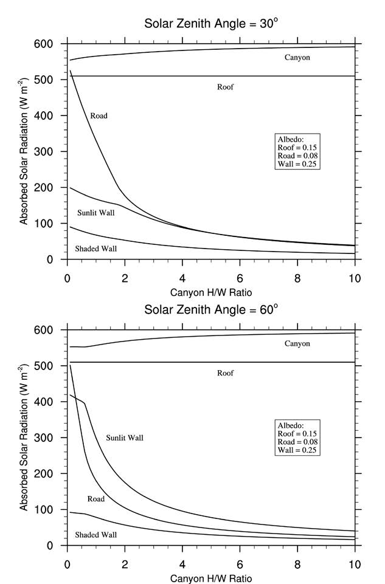
The canyon albedo (excluding the roof albedo) shown in Figure 9 has the same functional relationships with solar zenith angle and height to width ratio as TEB[41]. In general, the direct and diffuse canyon albedo decreases with height to width ratio as more solar radiation is trapped and absorbed within the canyon. The trapping of solar radiation is less effective at larger solar zenith angles. At these large solar zenith angles and small height to width ratio, the albedo increases because the higher albedo walls dominate the radiative exchange.
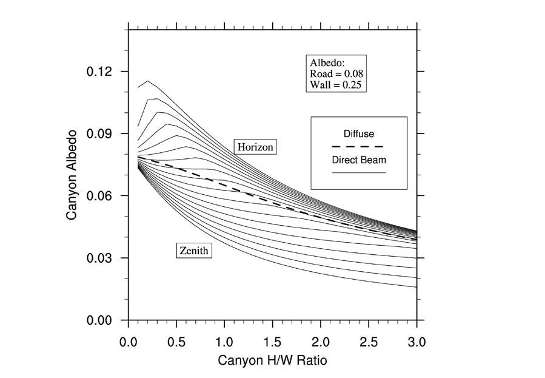
2.6 Incident longwave radiation
Similar to incident diffuse solar radiation, the longwave radiation incident on walls and roads depends on view factors. The longwave radiation incident on roof, walls and road is \[\begin{equation} L_{roof}\downarrow=L_{atm}\downarrow, \end{equation}\] \[\begin{equation} L_{imprvrd}\downarrow = L_{prvrd}\downarrow = L_{atm}\downarrow\psi_{sky-road}, \end{equation}\] \[\begin{equation} L_{shdwall}\downarrow = L_{atm}\downarrow\psi_{sky-wall}, \end{equation}\] \[\begin{equation} L_{sunwall}\downarrow = L_{atm}\downarrow\psi_{sky-wall}, \end{equation}\] where \(L_{atm}\downarrow\) is the longwave radiation from the atmosphere. The incident longwave radiation conserves energy as \[\begin{equation} L_{atm}\downarrow = f_{roof}L_{roof}\downarrow+(1-f_{roof})\left[L_{imprvrd}\downarrow(1-f_{prvrd})+L_{prvrd}\downarrow f_{prvrd}+\frac{H}{W}(L_{sunwall}\downarrow+L_{shdwall}\downarrow)\right] \end{equation}\]
2.7 Absorbed, Reflected, and Emitted Longwave Radiation
Emitted longwave radiation, a function of surface temperature and emissivity, must also be considered in addition to reflection and absorption when determining the longwave interactions within the canyon. The net longwave radiation (W m\(^{-2}\)) (positive toward the atmosphere) for the roof is simply \[\begin{equation} \overrightarrow{L}_{roof}=L_{roof}\uparrow -L_{atm}\downarrow \end{equation}\] where \[\begin{equation} L_{roof}\uparrow = \epsilon_{roof} \sigma(T_{roof})^4+(1-\epsilon_{roof})L_{atm}\downarrow \end{equation}\] is the emitted plus reflected longwave radiation from the roof, \(\epsilon_{roof}\) is the emissivity of the roof, \(\sigma\) is the Stefan-Boltzmann constant (W m\(^{-2}\) K\(^{-4}\)) (Table 4), and \(T_{roof}\) is the temperature of the roof (chapter 4).
Similar to albedo, the emissivity of each urban surface is a weighted combination of snow-free surface and snow emissivity. Only roof and road surfaces are affected by snow as \[\begin{equation} \epsilon_{u} = \epsilon_{u}(1-f_{u,sno}) +\epsilon_{sno}f_{u,sno} \end{equation}\] where \(\epsilon_{u}\) is the emissivity of \(u=\) roof, pervious and impervious road (Table 3), \(\epsilon_{sno}=\)0.97 is the emissivity of snow[66], and \(f_{u,sno}\) is the fraction of the urban surface covered with snow (equation ([eq:urban_snow_fraction])).
As with solar radiation, the longwave interactions within the urban canyon are determined numerically by allowing for multiple reflections until a convergence criteria is met (the absorbed longwave radiation for a given reflection is less than 1\(\times\)10\(^{-3}\)). The following equations assume that absorptivity equals emissivity.
The initial reflected (\(r\)) longwave radiation from each urban surface is \[\begin{equation} L_{imprvrd,i=0}\overset{r}{\uparrow} = (1-\epsilon_{imprvrd})L_{imprvrd}\downarrow, \end{equation}\] \[\begin{equation} L_{prvrd,i=0}\overset{r}{\uparrow} = (1-\epsilon_{prvrd})L_{prvrd}\downarrow, \end{equation}\] \[\begin{equation} L_{road,i=0}\overset{r}{\uparrow}=L_{imprvrd,i=0}\overset{r}{\uparrow}(1-f_{prvrd})+L_{prvrd,i=0}\overset{r}{\uparrow}f_{prvrd} \end{equation}\] \[\begin{equation} L_{sunwall,i=0}\overset{r}{\uparrow}=(1-\epsilon_{wall})L_{sunwall}\downarrow, \end{equation}\] \[\begin{equation} L_{shdwall,i=0}\overset{r}{\uparrow}=(1-\epsilon_{wall})L_{shdwall}\downarrow. \end{equation}\]
The emitted (\(e\)) longwave radiation from each surface is \[\begin{equation} L_{imprvrd}\overset{e}{\uparrow} = \epsilon_{imprvrd}\sigma (T_{imprvrd})^4, \end{equation}\] \[\begin{equation} L_{prvrd}\overset{e}{\uparrow} = \epsilon_{prvrd} \sigma (T_{prvrd})^4, \end{equation}\] \[\begin{equation} L_{road}\overset{e}{\uparrow}=\epsilon_{imprvrd}\sigma (T_{imprvrd})^4(1-f_{prvrd})+\epsilon_{prvrd}\sigma(T_{prvrd})^4f_{prvrd} \end{equation}\] \[\begin{equation} L_{sunwall}\overset{e}{\uparrow}=\epsilon_{wall}\sigma (T_{sunwall})^4, \end{equation}\] \[\begin{equation} L_{shdwall}\overset{e}{\uparrow}=\epsilon_{wall}\sigma (T_{shdwall})^4. \end{equation}\] The initial reflected longwave radiation is distributed to sky, walls, and road according to view factors as \[\begin{equation} L_{imprvrd-sky,i=0}\overset{r}{\uparrow} = L_{imprvrd,i=0}\overset{r}{\uparrow}\psi_{road-sky}, \end{equation}\] \[\begin{equation} L_{prvrd-sky,i=0}\overset{r}{\uparrow} = L_{prvrd,i=0}\overset{r}{\uparrow}\psi_{road-sky}, \end{equation}\] \[\begin{equation} L_{road-sunwall,i=0}\overset{r}{\uparrow} = L_{road,i=0}\overset{r}{\uparrow}\psi_{road-wall}, \end{equation}\] \[\begin{equation} L_{road-shdwall,i=0}\overset{r}{\uparrow} = L_{road,i=0}\overset{r}{\uparrow}\psi_{road-wall}, \end{equation}\] \[\begin{equation} L_{sunwall-sky,i=0}\overset{r}{\uparrow} = L_{sunwall,i=0}\overset{r}{\uparrow}\psi_{wall-sky}, \end{equation}\] \[\begin{equation} L_{sunwall-road,i=0}\overset{r}{\uparrow} = L_{sunwall,i=0}\overset{r}{\uparrow}\psi_{wall-road}, \end{equation}\] \[\begin{equation} L_{sunwall-shdwall,i=0}\overset{r}{\uparrow} = L_{sunwall,i=0}\overset{r}{\uparrow}\psi_{wall-wall}, \end{equation}\] \[\begin{equation} L_{shdwall-sky,i=0}\overset{r}{\uparrow} = L_{shdwall,i=0}\overset{r}{\uparrow}\psi_{wall-sky}, \end{equation}\] \[\begin{equation} L_{shdwall-road,i=0}\overset{r}{\uparrow} = L_{shdwall,i=0}\overset{r}{\uparrow}\psi_{wall-road}, \end{equation}\] \[\begin{equation} L_{shdwall-sunwall,i=0}\overset{r}{\uparrow} = L_{shdwall,i=0}\overset{r}{\uparrow}\psi_{wall-wall}. \end{equation}\]
The emitted longwave radiation is distributed to sky, walls, and road according to view factors as \[\begin{equation} L_{imprvrd-sky}\overset{e}{\uparrow} = L_{imprvrd}\overset{e}{\uparrow}\psi_{road-sky}, \end{equation}\] \[\begin{equation} L_{prvrd-sky}\overset{e}{\uparrow} = L_{prvrd}\overset{e}{\uparrow}\psi_{road-sky}, \end{equation}\] \[\begin{equation} L_{road-sunwall}\overset{e}{\uparrow} = L_{road}\overset{e}{\uparrow}\psi_{road-wall}, \end{equation}\] \[\begin{equation} L_{road-shdwall}\overset{e}{\uparrow} = L_{road}\overset{e}{\uparrow}\psi_{road-wall}, \end{equation}\] \[\begin{equation} L_{sunwall-sky}\overset{e}{\uparrow} = L_{sunwall}\overset{e}{\uparrow}\psi_{wall-sky}, \end{equation}\] \[\begin{equation} L_{sunwall-road}\overset{e}{\uparrow} = L_{sunwall}\overset{e}{\uparrow}\psi_{wall-road}, \end{equation}\] \[\begin{equation} L_{sunwall-shdwall}\overset{e}{\uparrow} = L_{sunwall}\overset{e}{\uparrow}\psi_{wall-wall}, \end{equation}\] \[\begin{equation} L_{shdwall-sky}\overset{e}{\uparrow} = L_{shdwall}\overset{e}{\uparrow}\psi_{wall-sky}, \end{equation}\] \[\begin{equation} L_{shdwall-road}\overset{e}{\uparrow} = L_{shdwall}\overset{e}{\uparrow}\psi_{wall-road}, \end{equation}\] \[\begin{equation} L_{shdwall-sunwall}\overset{e}{\uparrow} = L_{shdwall}\overset{e}{\uparrow}\psi_{wall-wall}. \end{equation}\]
The initial absorption (net longwave) (\(i =\) 0) by each urban surface is \[\begin{equation} \overrightarrow{L}_{imprvrd,i=0}=L_{imprvrd}\overset{e}{\uparrow}-\epsilon_{imprvrd}L_{imprvrd}\downarrow, \end{equation}\] \[\begin{equation} \overrightarrow{L}_{prvrd,i=0}=L_{prvrd}\overset{e}{\uparrow}-\epsilon_{prvrd}L_{prvrd}\downarrow, \end{equation}\] \[\begin{equation} \overrightarrow{L}_{sunwall,i=0}=L_{sunwall}\overset{e}{\uparrow}-\epsilon_{wall}L_{sunwall}\downarrow, \end{equation}\] \[\begin{equation} \overrightarrow{L}_{shdwall,i=0}=L_{sunwall}\overset{e}{\uparrow}-\epsilon_{wall}L_{shdwall}\downarrow, \end{equation}\]
The initial emitted plus reflected longwave radiation to the sky is \[\begin{equation} L_{imprvrd-sky,i=0}\uparrow = L_{imprvrd-sky}\overset{e}{\uparrow}+L_{imprvrd-sky,i=0}\overset{r}{\uparrow}, \end{equation}\] \[\begin{equation} L_{prvrd-sky,i=0}\uparrow = L_{prvrd-sky}\overset{e}{\uparrow}+L_{prvrd-sky,i=0}\overset{r}{\uparrow}, \end{equation}\] \[\begin{equation} L_{sunwall-sky,i=0}\uparrow = L_{sunwall-sky}\overset{e}{\uparrow}+L_{sunwall-sky,i=0}\overset{r}{\uparrow}, \end{equation}\] \[\begin{equation} L_{shdwall-sky,i=0}\uparrow = L_{shdwall-sky}\overset{e}{\uparrow}+L_{shdwall-sky,i=0}\overset{r}{\uparrow}, \end{equation}\]
The net longwave radiation absorbed by each urban surface after the \(i^{th}\) reflection is \[\begin{equation} \label{eq:net_longwave_radiation_absorbed_imprvrd} \begin{aligned} \overrightarrow{L}_{\mathrm{imprvrd},i} = \epsilon_{\mathrm{imprvrd}} \Bigl( &L_{\mathrm{sunwall-road},i-1}\overset{r}{\uparrow} + L_{\mathrm{sunwall-road},i-1}\overset{e}{\uparrow} \\ &+ L_{\mathrm{shdwall-road},i-1}\overset{r}{\uparrow} + L_{\mathrm{shdwall-road},i-1}\overset{e}{\uparrow} \Bigr) \end{aligned}\frac{H}{W}, \end{equation}\] \[\begin{equation} \begin{aligned} \overrightarrow{L}_{\mathrm{prvrd},i} = \epsilon_{\mathrm{prvrd}} \Bigl( &L_{\mathrm{sunwall-road},i-1}\overset{r}{\uparrow} + L_{\mathrm{sunwall-road},i-1}\overset{e}{\uparrow} \\ &+ L_{\mathrm{shdwall-road},i-1}\overset{r}{\uparrow} + L_{\mathrm{shdwall-road},i-1}\overset{e}{\uparrow} \Bigr) \end{aligned}\frac{H}{W}, \end{equation}\] \[\begin{equation} \overrightarrow{L}_{road,i}=\overrightarrow{L}_{imprvrd,i}(1-f_{prvrd})+\overrightarrow{L}_{prvrd,i}f_{prvrd}, \end{equation}\] \[\begin{equation} \begin{aligned} \overrightarrow{L}_{\mathrm{sunwall},i} = \epsilon_{\mathrm{wall}} \Bigl( &\frac{L_{\mathrm{road-sunwall},i-1}\overset{r}{\uparrow} + L_{\mathrm{road-sunwall},i-1}\overset{e}{\uparrow}}{H/W} \\ &+ L_{\mathrm{shdwall-sunwall},i-1}\overset{r}{\uparrow} + L_{\mathrm{shdwall-sunwall},i-1}\overset{e}{\uparrow} \Bigr) \end{aligned}, \end{equation}\] \[\begin{equation} \begin{aligned} \overrightarrow{L}_{\mathrm{shdwall},i} = \epsilon_{\mathrm{wall}} \Bigl( &\frac{L_{\mathrm{road-shdwall},i-1}\overset{r}{\uparrow} + L_{\mathrm{road-shdwall},i-1}\overset{e}{\uparrow}}{H/W} \\ &+ L_{\mathrm{sunwall-shdwall},i-1}\overset{r}{\uparrow} + L_{\mathrm{sunwall-shdwall},i-1}\overset{e}{\uparrow} \Bigr) \end{aligned}, \end{equation}\]
The longwave radiation from each urban surface after the ith reflection is distributed to sky, road, and walls according to \[\begin{equation} \begin{aligned} L_{imprvrd-sky,i}\uparrow=(1-\epsilon_{imprvrd}) \Bigl( &L_{sunwall-road,i-1}\overset{r}{\uparrow}+L_{sunwall-road}\overset{e}{\uparrow} \\ &L_{shdwall-road,i-1}\overset{r}{\uparrow}+L_{shdwall-road}\overset{e}{\uparrow} \Bigr) \frac{H}{W} \psi_{road-sky}, \end{aligned} \end{equation}\] \[\begin{equation} \begin{aligned} L_{imprvrd-sunwall,i}\uparrow=(1-\epsilon_{imprvrd}) \Bigl( &L_{sunwall-road,i-1}\overset{r}{\uparrow}+L_{sunwall-road}\overset{e}{\uparrow} \\ &L_{shdwall-road,i-1}\overset{r}{\uparrow}+L_{shdwall-road}\overset{e}{\uparrow} \Bigr) \frac{H}{W} \psi_{road-wall}, \end{aligned} \end{equation}\] \[\begin{equation} \begin{aligned} L_{imprvrd-shdwall,i}\uparrow=(1-\epsilon_{imprvrd}) \Bigl( &L_{sunwall-road,i-1}\overset{r}{\uparrow}+L_{sunwall-road}\overset{e}{\uparrow} \\ &L_{shdwall-road,i-1}\overset{r}{\uparrow}+L_{shdwall-road}\overset{e}{\uparrow} \Bigr) \frac{H}{W} \psi_{road-wall}, \end{aligned} \end{equation}\] \[\begin{equation} \begin{aligned} L_{prvrd-sky,i}\uparrow=(1-\epsilon_{prvrd}) \Bigl( &L_{sunwall-road,i-1}\overset{r}{\uparrow}+L_{sunwall-road}\overset{e}{\uparrow} \\ &L_{shdwall-road,i-1}\overset{r}{\uparrow}+L_{shdwall-road}\overset{e}{\uparrow} \Bigr) \frac{H}{W} \psi_{road-sky}, \end{aligned} \end{equation}\] \[\begin{equation} \begin{aligned} L_{prvrd-sunwall,i}\uparrow=(1-\epsilon_{prvrd}) \Bigl( &L_{sunwall-road,i-1}\overset{r}{\uparrow}+L_{sunwall-road}\overset{e}{\uparrow} \\ &L_{shdwall-road,i-1}\overset{r}{\uparrow}+L_{shdwall-road}\overset{e}{\uparrow} \Bigr) \frac{H}{W} \psi_{road-wall}, \end{aligned} \end{equation}\] \[\begin{equation} \begin{aligned} L_{prvrd-shdwall,i}\uparrow=(1-\epsilon_{prvrd}) \Bigl( &L_{sunwall-road,i-1}\overset{r}{\uparrow}+L_{sunwall-road}\overset{e}{\uparrow} \\ &L_{shdwall-road,i-1}\overset{r}{\uparrow}+L_{shdwall-road}\overset{e}{\uparrow} \Bigr) \frac{H}{W} \psi_{road-wall}, \end{aligned} \end{equation}\]
\[\begin{equation} \begin{aligned} L_{road-sky,i}\uparrow ={}& \Biggl[(1-\epsilon_{imprvrd}) \left(\begin{aligned} &L_{sunwall-road,i-1}\overset{r}{\uparrow} +L_{sunwall-road,i-1}\overset{e}{\uparrow} \\ &+L_{shdwall-road,i-1}\overset{r}{\uparrow} +L_{shdwall-road,i-1}\overset{e}{\uparrow} \end{aligned}\right)\frac{H}{W}(1-f_{prvrd})\\ &\quad+(1-\epsilon_{prvrd}) \left(\begin{aligned}[t] &L_{sunwall-road,i-1}\overset{r}{\uparrow} +L_{sunwall-road,i-1}\overset{e}{\uparrow} \\ &+L_{shdwall-road,i-1}\overset{r}{\uparrow} +L_{shdwall-road,i-1}\overset{e}{\uparrow} \end{aligned}\right)\frac{H}{W}f_{prvrd}\Biggr]\psi_{road-sky}, \end{aligned} \end{equation}\]
\[\begin{equation} \begin{aligned} L_{road-sunwall,i}\uparrow ={}& \Biggl[(1-\epsilon_{imprvrd}) \left(\begin{aligned} &L_{sunwall-road,i-1}\overset{r}{\uparrow} +L_{sunwall-road,i-1}\overset{e}{\uparrow} \\ &+L_{shdwall-road,i-1}\overset{r}{\uparrow} +L_{shdwall-road,i-1}\overset{e}{\uparrow} \end{aligned}\right)\frac{H}{W}(1-f_{prvrd})\\ &\quad+(1-\epsilon_{prvrd}) \left(\begin{aligned}[t] &L_{sunwall-road,i-1}\overset{r}{\uparrow} +L_{sunwall-road,i-1}\overset{e}{\uparrow} \\ &+L_{shdwall-road,i-1}\overset{r}{\uparrow} +L_{shdwall-road,i-1}\overset{e}{\uparrow} \end{aligned}\right)\frac{H}{W}f_{prvrd}\Biggr]\psi_{road-wall}, \end{aligned} \end{equation}\]
\[\begin{equation} \begin{aligned} L_{road-shdwall,i}\uparrow ={}& \Biggl[(1-\epsilon_{imprvrd}) \left(\begin{aligned} &L_{sunwall-road,i-1}\overset{r}{\uparrow} +L_{sunwall-road,i-1}\overset{e}{\uparrow} \\ &+L_{shdwall-road,i-1}\overset{r}{\uparrow} +L_{shdwall-road,i-1}\overset{e}{\uparrow} \end{aligned}\right)\frac{H}{W}(1-f_{prvrd})\\ &\quad+(1-\epsilon_{prvrd}) \left(\begin{aligned}[t] &L_{sunwall-road,i-1}\overset{r}{\uparrow} +L_{sunwall-road,i-1}\overset{e}{\uparrow} \\ &+L_{shdwall-road,i-1}\overset{r}{\uparrow} +L_{shdwall-road,i-1}\overset{e}{\uparrow} \end{aligned}\right)\frac{H}{W}f_{prvrd}\Biggr]\psi_{road-wall}, \end{aligned} \end{equation}\] \[\begin{equation} \begin{aligned} L_{sunwall-sky,i}\uparrow=(1-\epsilon_{wall}) \Bigl( &\frac{L_{road-sunwall,i-1}\overset{r}{\uparrow}+L_{road-sunwall}\overset{e}{\uparrow}}{H/W} \\ &L_{shdwall-sunwall,i-1}\overset{r}{\uparrow}+L_{shdwall-sunwall}\overset{e}{\uparrow} \Bigr) \psi_{wall-sky}, \end{aligned} \end{equation}\] \[\begin{equation} \begin{aligned} L_{sunwall-road,i}\uparrow=(1-\epsilon_{wall}) \Bigl( &\frac{L_{road-sunwall,i-1}\overset{r}{\uparrow}+L_{road-sunwall}\overset{e}{\uparrow}}{H/W} \\ &L_{shdwall-sunwall,i-1}\overset{r}{\uparrow}+L_{shdwall-sunwall}\overset{e}{\uparrow} \Bigr) \psi_{wall-road}, \end{aligned} \end{equation}\] \[\begin{equation} \begin{aligned} L_{sunwall-shdwall,i}\uparrow=(1-\epsilon_{wall}) \Bigl( &\frac{L_{road-sunwall,i-1}\overset{r}{\uparrow}+L_{road-sunwall}\overset{e}{\uparrow}}{H/W} \\ &L_{shdwall-sunwall,i-1}\overset{r}{\uparrow}+L_{shdwall-sunwall}\overset{e}{\uparrow} \Bigr) \psi_{wall-wall}, \end{aligned} \end{equation}\] \[\begin{equation} \begin{aligned} L_{shdwall-sky,i}\uparrow=(1-\epsilon_{wall}) \Bigl( &\frac{L_{road-shdwall,i-1}\overset{r}{\uparrow}+L_{road-shdwall}\overset{e}{\uparrow}}{H/W} \\ &L_{sunwall-shdwall,i-1}\overset{r}{\uparrow}+L_{sunwall-shdwall}\overset{e}{\uparrow} \Bigr) \psi_{wall-sky}, \end{aligned} \end{equation}\] \[\begin{equation} \begin{aligned} L_{shdwall-road,i}\uparrow=(1-\epsilon_{wall}) \Bigl( &\frac{L_{road-shdwall,i-1}\overset{r}{\uparrow}+L_{road-shdwall}\overset{e}{\uparrow}}{H/W} \\ &L_{sunwall-shdwall,i-1}\overset{r}{\uparrow}+L_{sunwall-shdwall}\overset{e}{\uparrow} \Bigr) \psi_{wall-road}, \end{aligned} \end{equation}\] \[\begin{equation} \label{eq:upward_longwave_radiation_shdwall-sunwall} \begin{aligned} L_{shdwall-sunwall,i}\uparrow=(1-\epsilon_{wall}) \Bigl( &\frac{L_{road-shdwall,i-1}\overset{r}{\uparrow}+L_{road-shdwall}\overset{e}{\uparrow}}{H/W} \\ &L_{sunwall-shdwall,i-1}\overset{r}{\uparrow}+L_{sunwall-shdwall}\overset{e}{\uparrow} \Bigr) \psi_{wall-wall}. \end{aligned} \end{equation}\]
Note that the emitted longwave term in equations ([eq:net_longwave_radiation_absorbed_imprvrd])-([eq:upward_longwave_radiation_shdwall-sunwall]) only applies to the first iteration. Subsequent iterations do not include this term, i.e., \[\begin{equation} L_{road-sunwall}\overset{e}{\uparrow} = L_{road-shdwall}\overset{e}{\uparrow}=L_{sunwall-road}\overset{e}{\uparrow} = L_{shdwall-road}\overset{e}{\uparrow}=L_{shdwall-sunwall}\overset{e}{\uparrow}=L_{sunwall-shdwall}\overset{e}{\uparrow} \end{equation}\]
The reflected longwave radiation to the sky is added to the total upward longwave radiation for each urban surface as \[\begin{equation} \overrightarrow{L}_{imprvrd,i+1}\uparrow=\overrightarrow{L}_{imprvrd,i-1}\uparrow+\overrightarrow{L}_{imprvrd-sky,i}\uparrow, \end{equation}\] \[\begin{equation} \overrightarrow{L}_{prvrd,i+1}\uparrow=\overrightarrow{L}_{prvrd,i-1}\uparrow+\overrightarrow{L}_{prvrd-sky,i}\uparrow, \end{equation}\] \[\begin{equation} \overrightarrow{L}_{sunwall,i+1}\uparrow=\overrightarrow{L}_{sunwall,i-1}\uparrow+\overrightarrow{L}_{sunwall-sky,i}\uparrow, \end{equation}\] \[\begin{equation} \overrightarrow{L}_{shdwall,i+1}\uparrow=\overrightarrow{L}_{shdwall,i-1}\uparrow+\overrightarrow{L}_{shdwall-sky,i}\uparrow, \end{equation}\]
The net longwave at each iteration is added to the total net longwave for each urban surface as \[\begin{equation} \overrightarrow{L}_{imprvrd,i+1}=\overrightarrow{L}_{imprvrd,i-1}+\overrightarrow{L}_{imprvrd,i}, \end{equation}\] \[\begin{equation} \overrightarrow{L}_{prvrd,i+1}=\overrightarrow{L}_{prvrd,i-1}+\overrightarrow{L}_{prvrd,i}, \end{equation}\] \[\begin{equation} \overrightarrow{L}_{sunwall,i+1}=\overrightarrow{L}_{sunwall,i-1}+\overrightarrow{L}_{sunwall,i}, \end{equation}\] \[\begin{equation} \overrightarrow{L}_{shdwall,i+1}=\overrightarrow{L}_{shdwall,i-1}+\overrightarrow{L}_{shdwall,i}, \end{equation}\] The system of equations (equations (2.142)-(2.170)) is iterated for \(i =\) 50 reflections or until the absorption for the \(i^{th}\) reflection is less than a nominal amount
\[\begin{equation} \max(\overrightarrow{L}_{road,i},\overrightarrow{L}_{sunwall,i},\overrightarrow{L}_{shdwall,i}) < 1\times10^{-3}. \end{equation}\]
The net longwave radiation for the urban canyon (walls and road) is \[\begin{equation} \overrightarrow{L}_{uc}=\overrightarrow{L}_{imprvrd,n+1}(1-f_{prvrd})+\overrightarrow{L}_{prvrd,n+1}f_{prvrd}+(\overrightarrow{L}_{sunwall,n+1}+\overrightarrow{L}_{shdwall,n+1})\frac{H}{W}. \end{equation}\]
while the total reflected plus emitted longwave radiation is \[\begin{equation} L_{ac}\uparrow=L_{imprvrd,n+1}\uparrow(1-f_{prvrd})+L_{prvrd,n+1}\uparrow f_{prvrd}+(L_{sunwall,n+1}\uparrow+L_{shdwall,n+1}\uparrow)\frac{H}{W}. \end{equation}\]
Longwave radiation in the urban canyon is conserved as \[\begin{equation} \overrightarrow{L}_{uc}-(L_{uc}\uparrow-L_{atm}\downarrow)=0. \end{equation}\]
The total net longwave radiation for the urban canopy (road, walls, and roof) is \[\begin{equation} \overrightarrow{L}=W_{roof}\overrightarrow{L}_{roof}+(1-W_{roof})\overrightarrow{L}_{uc}. \end{equation}\]
Figure 10 shows the net longwave radiation for urban surfaces for two different emissivity configurations. A positive net longwave means that the outgoing longwave exceeds the incoming longwave from the atmosphere. The net longwave radiation for the roof is independent of height to width ratio and increases with higher emissivity. The net longwave radiation for the road and walls decreases rapidly with increasing height to width ratio as more longwave radiation is trapped within the canyon. The walls have lower net longwave radiation than the road because their sky view factors are smaller. The two walls behave identically with respect to net longwave radiation as long as temperatures are the same. The sum of the net longwave radiation for road, sunlit wall, and shaded wall, after converting the wall fluxes to per unit ground area, is the canyon net longwave radiation. The net longwave radiation for the canyon increases slowly with increasing height to width ratio because of the larger surface area of the walls.
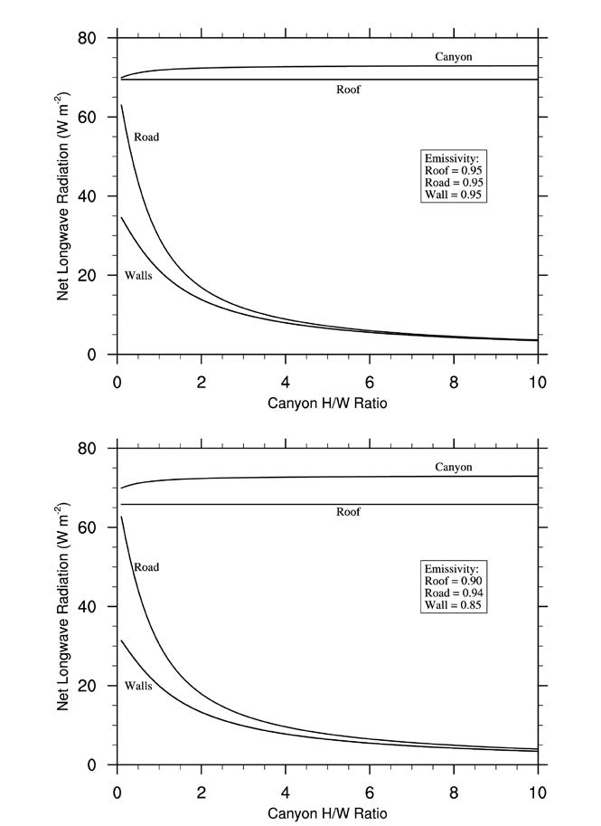
2.8 Solar Zenith Angle
The formulation for solar zenith angle is thoroughly documented in[4] (see section 3.3) and does not differ for urban surfaces.
3 Heat and Momentum Fluxes
The net radiation for the urban canopy (\(\vec{S}-\vec{L}\), where \(\vec{S}\) is the net solar radiation absorbed by the urban canopy (section 2.5) and \(\vec{L}\) is the net longwave radiation (section 2.7)) must be balanced by the sum of the turbulent and ground (storage) heat fluxes as \[\begin{equation} \vec{S}-\vec{L}=H+\lambda E+G \end{equation}\] where \(H\) is the sensible heat flux (W m\(^{-2}\)), \(E\) is the water vapor flux (kg m\(^{-2}\)s\(^{-1}\)), \(G\) is the ground heat flux, and \(\lambda\) is the latent heat of vaporization (or sublimation). The urban surfaces have unique radiative, thermal and hydrologic properties and environments. Thus, their sensible and latent heat fluxes are likely to be very different from each other. For example, the pervious road may have significant latent heat flux compared to the walls, which are assumed to be hydrologically inactive. Thus, the fluxes from individual urban surfaces must be modeled separately. However, CLM directly interacts with the atmospheric model at only the lowest atmospheric layer, which is well above the roof level of the urban model at the horizontal scales to be modeled. As a consequence, fluxes from individual urban surfaces must be combined to obtain the total sensible and latent heat flux to be provided to the atmospheric model. Allowing the urban surface fluxes to interact with each other through a bulk urban air mass is an acceptable approach analogous to the simulation of vegetated canopy fluxes (Figure 11). This also allows for the solution of UCL air temperature and humidity, which are of interest in many applications. The approach shown in Figure 11 is slightly different from that of[41] in that here, fluxes from the roof interact directly with the UCL air whereas in M[41] the roof and urban canyon are modeled as two independent sources of heat and moisture fluxes to the atmosphere. Here, we assume that the actual roofs are at various heights in the UCL and hence interact directly with the well-mixed UCL air.
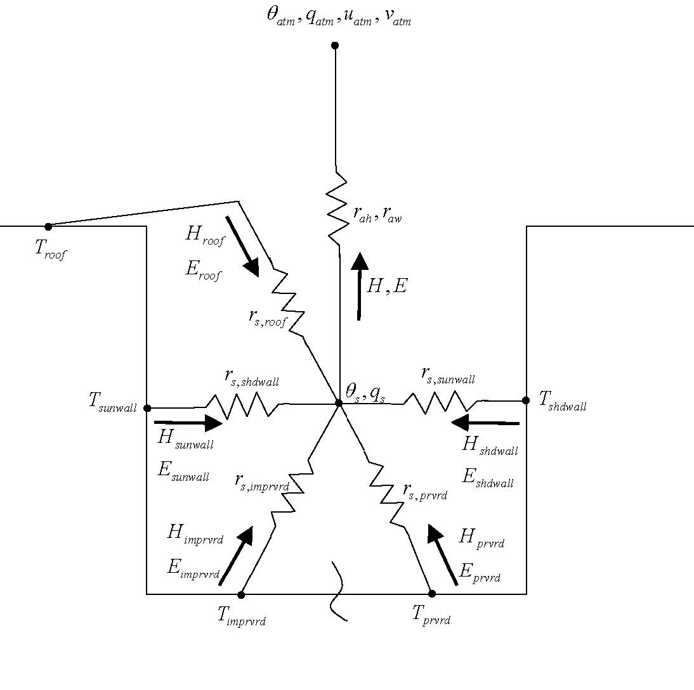
In general, the zonal \(\tau_{x}\) and meridional \(\tau_{y}\) momentum fluxes (kg m\(^{-1}\)s\(^{-2}\)), sensible heat flux \(H\), and water vapor flux \(E\) between the atmosphere at reference height \(z_{atm,x}\) (m) [where \(x\) height for wind (momentum) (\(m\)), temperature (sensible heat) (\(h\)), and humidity (water vapor) (\(w\)); with zonal and meridional winds \(u_{atm}\) and \(v_{atm}\) (m s\(^{-1}\)), potential temperature \(\theta_{atm}\) (K), and specific humidity \(q_{atm}\) (kg kg\(^{-1}\))] and a surface [with \(u_{s}\), \(v_{s}\), \(\theta_{s}\) and \(q_{s}\)] are \[\begin{equation} \tau_{x}=-\rho_{atm}\frac{(u_{atm}-u_{s})}{r_{atm}}, \end{equation}\]
\[\begin{equation} \tau_{y}=-\rho_{atm}\frac{(v_{atm}-v_{s})}{r_{atm}}, \end{equation}\]
\[\begin{equation} H=-\rho_{atm}C_{p}\frac{(\theta_{atm}-\theta{s})}{r_{ah}}, \end{equation}\]
\[\begin{equation} E=-\rho_{atm}\frac{(q_{atm}-q_{s})}{r_{aw}}. \end{equation}\]
These fluxes are derived from Monin-Obukhov similarity theory developed for the inertial sub-layer (i.e., the nearly constant flux layer above the roughness sub-layer). In this derivation, \(u_{s}\) and \(v_{s}\) are defined to equal zero at height \(z_{0m}+d\) (the apparent sink for momentum) so that \(r_{atm}\) is the the aerodynamic resistance (s m\(^{-1}\)) for momentum between the atmosphere at height \(z_{atm,m}\) and the surface at height \(z_{0m}+d\). Thus, the momentum fluxes become \[\begin{equation} \label{eq:momentum_flux_x} \tau_{x}=-\rho_{atm}\frac{u_{atm}}{r_{am}} \end{equation}\]
\[\begin{equation} \label{eq:momentum_flux_y} \tau_{y}=-\rho_{atm}\frac{v_{atm}}{r_{am}}. \end{equation}\] Likewise, \(\theta_{s}\) and \(q_{s}\) are defined at heights \(z_{0h}+d\) and \(z_{0w}+d\) (the apparent sinks for heat and water vapor, respectively). Consequently, \(r_{ah}\) and \(r_{aw}\) are the aerodynamic resistances (s m\(^{-1}\)) to sensible heat and water vapor transfer between the atmosphere at heights \(z_{atm,h}\) and \(z_{atm,w}\) and the surface at heights \(z_{0h}+d\) and \(z_{0w}+d\), respectively. The specific heat capacity of air \(C_{p}\) (J kg\(^{-1}\) K\(^{-1}\)) is a constant (Table 4). The atmospheric potential temperature used here is \[\begin{equation} \label{eq:atmospheric_potential_temperature} \theta_{atm}=T_{atm}+\Gamma_{d}Z_{atm,h} \end{equation}\] where \(T_{atm}\) is the air temperature (K) at height \(z_{atm,h}\) and \(\Gamma_{d}=\)0.0098 K m\(^{-1}\) is the negative of the dry adiabatic lapse rate [this expression is first-order equivalent to \(\theta_{atm}=T_{atm}(P_{srf}/P_{atm})^{R_{da}/C_{p}}\)[67], where \(P_{srf}\) is the surface pressure (Pa), \(P_{atm}\) is the atmospheric pressure (Pa), and \(R_{da}\) is the gas constant for dry air (J kg\(^{-1}\) K\(^{-1}\)) (Table 4)]. By definition, \(\theta_{s}=T_{s}\). The density of moist air (kg m\(^{-3}\)) is \[\begin{equation} \rho_{atm}=\frac{P_{atm}-0.378e_{atm}}{R_{da}T_{at,}} \end{equation}\] where the atmospheric vapor pressure \(e_{atm}\) (Pa) is derived from the atmospheric specific humidity \(q_{atm}\) \[\begin{equation} e_{atm}=\frac{q_{atm}P_{atm}}{0.622+0.378q_{atm}}. \end{equation}\]
3.1 Monin-Obukhov Similarity Theory
The surface vertical kinematic fluxes of momentum \(\overline{u'w'}\) and \(\overline{v'w'}\) (m\(^{-2}\) s\(^{-2}\)), sensible heat \(\overline{\theta'w'}\) (K m s\(^{-1}\)), and latent heat \(\overline{q'w'}\) (kg kg\(^{-1}\) m s\(^{-1}\)), where \(u'\), \(v'\), \(w'\), \(\theta'\), and \(q'\) are zonal horizontal wind, meridional horizontal wind, vertical velocity, potential temperature, and specific humidity turbulent fluctuations about the mean, are defined from Monin-Obukhov similarity applied to the surface layer. This theory states that when scaled appropriately, the dimensionless mean horizontal wind speed, mean potential temperature, and mean specific humidity profile gradients depend on unique functions of \(\zeta=\frac{z-d}{L}\)[68] as \[\begin{equation} \frac{k(z-d)}{u_*}\frac{\partial|u|}{\partial z}=\phi_{m}(\zeta) \end{equation}\]
\[\begin{equation} \frac{k(z-d)}{\theta_*}\frac{\partial \theta}{\partial z} = \phi_{h}(\zeta) \end{equation}\]
\[\begin{equation} \frac{k(z-d)}{q_*}\frac{\partial q}{\partial z}=\phi_{w}(\zeta) \end{equation}\] where \(z\) is height in the surface layer (m), \(d\) is the displacement height (m), \(L\) is the Monin-Obukhov length scale (m) that accounts for buoyancy effects resulting from vertical density gradients (i.e., the atmospheric stability), \(k\) is the von Karman constant (Table 4), and \(|u|\) is the atmospheric wind speed (m s\(^{-1}\)). \(\phi_{m}\), \(\phi_{h}\), and \(\phi_{w}\) are universal (over any surface) similarity functions of \(\zeta\) that relate the constant fluxes of momentum, sensible heat, and latent heat to the mean profile gradients of \(|u|\), \(\theta\), and \(q\) in the surface layer. In neutral conditions, \(\phi_{m}\) = \(\phi_{h}\) = \(\phi_{w}\) = 1. The velocity (i.e., friction velocity) \(u_*\) (m s\(^{-1}\)), temperature \(\theta_*\) (K), and moisture \(q_*\) (kg kg\(^{-1}\)) scales are \[\begin{equation} u_*^2=\sqrt{(\overline{v'w'})^2+(\overline{v'w'})^2}=\frac{|\tau|}{\rho_{atm}} \end{equation}\]
\[\begin{equation} \theta_*u_*=-\overline{\theta'w'}=-\frac{H}{\rho_{atm}C_{p}} \end{equation}\]
\[\begin{equation} q_*u_*=-\overline{q'w'}=-\frac{E}{\rho_{atm}} \end{equation}\] where \(|\tau|\) is the shearing stress (kg m\(^{-1}\) s\(^{-2}\)), with zonal and meridional components \(\overline{u'w'}=-\frac{\tau_{x}}{\rho_{atm}}\) and \(\overline{v'w'}=-\frac{\tau_{y}}{\rho_{atm}}\), respectively, \(H\) is the sensible heat flux (W m\(^{-2}\)) and \(E\) is the water vapor flux (kg m\(^{-2}\) s\(^{-1}\)). The dimensionless length scale \(L\) is the Monin-Obukhov length defined as \[\begin{equation} L=-\frac{u_*^3}{k\left(\frac{g}{\overline{\theta_{v,atm}}}\right)\theta_{v}'w'}=\frac{u_*^2\overline{\theta_{v,atm}}}{kg\theta_{v*}} \end{equation}\] where \(g\) is the acceleration of gravity (m s\(^{-2}\)) (Table 4), and \(\overline{\theta_{v,atm}}=\overline{\theta_{atm}}(1+0.61q_{atm})\) is the reference virtual potential temperature. \(L>0\) indicates stable conditions. \(L<\)0 indicates unstable conditions. \(L=\infty\) for neutral conditions. The temperature scale \(\theta_{v*}\) is defined as \[\begin{equation} \label{eq:temperature_scale} \theta_{v*}u_{*}=\left[\theta_*(1+0.61q_{atm})+0.61\overline{\theta_{atm}}q_*\right]u_* \end{equation}\] where \(\overline{\theta_{atm}}\) is the atmospheric potential temperature.
Following[69], the differential equations for \(\phi_{m}(\zeta)\), \(\phi_{h}(\zeta)\), and \(\phi_{w}(\zeta)\) can be integrated formally without commitment to their exact forms. Integration between two arbitrary heights in the surface layer \(z_{2}\) and \(z_{1}\) (\(z_{2}\)>\(z_{1}\)) with horizontal winds \(|u|_{1}\) and \(|u|_{2}\), potential temperatures \(\theta_{1}\) and \(\theta_{2}\), and specific humidities \(q_{1}\) and \(q_{2}\) results in \[\begin{equation} |u|_{2}-|u|_{1} = \frac{u_*}{k}\left[\ln\left(\frac{z_{2}-d}{z_{1}-d}\right)-\Psi_{m}\left(\frac{z_2-d}{L}\right)+\Psi_{m}\left(\frac{z_1-d}{L}\right)\right] \end{equation}\] \[\begin{equation} \theta_{2}-\theta_{1} = \frac{\theta_*}{k}\left[\ln\left(\frac{z_{2}-d}{z_{1}-d}\right)-\Psi_{h}\left(\frac{z_2-d}{L}\right)+\Psi_{h}\left(\frac{z_1-d}{L}\right)\right] \end{equation}\] \[\begin{equation} q_{2}-q_{1} = \frac{q_*}{k}\left[\ln\left(\frac{z_{2}-d}{z_{1}-d}\right)-\Psi_{w}\left(\frac{z_2-d}{L}\right)+\Psi_{w}\left(\frac{z_1-d}{L}\right)\right]. \end{equation}\] The functions \(\Psi_{m}(\zeta)\), \(\Psi_{h}(\zeta)\), and \(\Psi_{w}(\zeta)\) are defined as \[\begin{equation} \Psi_{m}(\zeta)=\int_{z_{0m}/L}^{\zeta}\frac{[1-\phi_{m}(x)]}{x}dx \end{equation}\]
\[\begin{equation} \Psi_{h}(\zeta)=\int_{z_{0h}/L}^{\zeta}\frac{[1-\phi_{h}(x)]}{x}dx \end{equation}\]
\[\begin{equation} \Psi_{w}(\zeta)=\int_{z_{0w}/L}^{\zeta}\frac{[1-\phi_{w}(x)]}{x}dx \end{equation}\] where \(z_{0m}\), \(z_{0h}\), and \(z_{0w}\) are the roughness lengths (m) for momentum, sensible heat, and water vapor, respectively.
Defining the surface values \(|u|_1=0\) at \(z_{1}=z_{0m}+d\), \(\theta_1=\theta_s\) at \(z_1=z_{0h}+d\), and \(q_{1}=q_{s}\) at \(z_{1}=z_{0w}+d\), and the atmospheric values at \(z_2=z_{atm,x}\) \[\begin{equation} \label{eq:atmospheric_wind_speed} |u|_{2}=V_{a}=\sqrt{u_{atm}^2+v_{atm}^2+U_{c}^2}\geq1, \end{equation}\] \(\theta_2=\theta_{atm}\), and \(q_2=q_{atm}\), the integral forms of the flux-gradient relations are \[\begin{equation} V_{a}=\frac{u_*}{k}\left[\ln\left(\frac{z_{atm,m}-d}{z_{0,m}}\right)-\Psi_{m}\left(\frac{z_{atm,m}-d}{L}\right)+\Psi_{m}\left(\frac{z_{0m}}{L}\right)\right] \end{equation}\]
\[\begin{equation} \theta_{atm}-\theta_{s}=\frac{\theta_*}{k}\left[\ln\left(\frac{z_{atm,h}-d}{z_{0h}}\right)-\Psi_{h}\left(\frac{z_{atm,h}-d}{L}\right)+\Psi_{h}\left(\frac{z_{0h}}{L}\right)\right] \end{equation}\]
\[\begin{equation} q_{atm}-q_{s}=\frac{q_*}{k}\left[\ln\left(\frac{z_{atm,w}-d}{z_{0w}}\right)-\Psi_{h}\left(\frac{z_{atm,w}-d}{L}\right)+\Psi_{h}\left(\frac{z_{0w}}{L}\right)\right]. \end{equation}\] The constraint \(V_{a}\geq\)1 is required simply for numerical reasons to prevent \(H\) and \(E\) from becoming small with small wind speeds. The convective velocity \(U_{c}\) accounts for the contribution of large eddies in the convective boundary layer to surface fluxes as follows \[\begin{equation} \label{eq:convective_velocity} \begin{array}{ll} U_{c}=0 \quad \zeta \geq0 & (\textrm{stable}) \\ U_{c}=\beta w_* & (\textrm{unstable}) \end{array} \end{equation}\] where \(w_*\) is the convective velocity scale \[\begin{equation} \label{eq:convective_velocity_scale} w_*=\left(\frac{-gu_*\theta_{v*}z_{i}}{\theta_{v,atm}}\right)^{1/3}, \end{equation}\] \(z_{i}=1000\) is the convective boundary layer height (m), and \(\beta=\)1. The momentum flux gradient relations are[68] \[\begin{equation} \begin{array}{ll} \phi{m}(\zeta)=0.7k^{2/3}(-\zeta)^{1/3} & \textrm{for}\;\zeta < -1.574 (\textrm{very unstable}) \\ \phi_{m}(\zeta)=(1-16\zeta)^{-1/4} & \textrm{for}\;-1.574 \leq \zeta <0 (\textrm{unstable}) \\ \phi_{m}(\zeta)=1+5\zeta & \textrm{for}\;0 \leq \zeta <1 (\textrm{stable}) \\ \phi_{m}(\zeta)=5+\zeta & \textrm{for}\;\zeta>1 (\textrm{very stable}). \end{array} \end{equation}\] The sensible and latent heat flux gradient relations are[68] \[\begin{equation} \begin{array}{ll} \phi_{h}(\zeta)=\phi_{w}(\zeta)=0.9k^{4/3}(-\zeta)^{-1/3} & \textrm{for}\;\zeta <-0.465 (\textrm{very unstable}) \\ \phi_{h}(\zeta)=\phi_{w}(\zeta)=(1-16\zeta)^{-1/2} & \textrm{for}\;-0.465\leq \zeta <0 (\textrm{unstable}) \\ \phi_{h}(\zeta)=\phi_{w}(\zeta)=1+5\zeta & \textrm{for}\;0 \leq \zeta \leq 1 (\textrm{stable}) \\ \phi_{h}(\zeta)=\phi_{w}(\zeta)=5+\zeta & \textrm{for}\;\zeta > 1 (\textrm{very stable}) \\ \end{array} \end{equation}\]
To ensure continuous functions of \(\phi_m({\zeta})\), \(\phi_{h}(\zeta)\), and \(\phi_{w}(\zeta)\), the simplest approach
(i.e., without considering any transition regimes) is to match the
relations for very unstable and unstable conditions at \(\zeta_{m}=-\)1.574 for \(\phi_{m}(\zeta)\) and \(\zeta_{h}=\zeta_{w}=-\)0.465 for \(\phi_{h}(\zeta)=\phi_{w}(\zeta)\)[68]. The flux gradient relations
can be integrated to yield wind profiles for the following
conditions:
Very unstable (\(\zeta<-\)1.574)
\[\begin{equation}
\label{eq:wind_profile_very_unstable}
V_a=\frac{u_*}{k}
\left\{
\left[
\ln\left(\frac{\zeta_m L}{z_{0m}}\right)-\Psi_m(\zeta_m)
\right] + 1.14\left[(-\zeta)^{1/3}-(-\zeta_m)^{1/3}
\right] + \Psi_{m}\left(\frac{z_{0m}}{L}\right)
\right\}
\end{equation}\] Unstable (\(-\)1.574 \(\leq
\zeta\)<0) \[\begin{equation}
V_{a}=\frac{u_*}{k}\left\{\left[\ln
\frac{Z_{atm,m}-d}{z_{0m}}-\Psi_{m}(\zeta)\right]+\Psi_{m}\left(\frac{z_{0m}}{L}\right)\right\}
\end{equation}\] Stable (0 \(\leq \zeta
\leq\)1) \[\begin{equation}
V_{a}=\frac{u_*}{k}\left\{\left[\ln
\frac{Z_{atm,m}-d}{z_{0m}}+5\zeta\right]-5\frac{z_{0m}}{L}\right\}
\end{equation}\] Very stable (\(\zeta>\)1) \[\begin{equation}
\label{eq:wind_profile_very_stable}
V_{a}= \frac{u_*}{k}\left\{\left[\ln
\frac{L}{z_{0m}}+5\right]+\left[5\ln\zeta+\zeta-1\right]-5\frac{z_{0m}}{L}\right\}
\end{equation}\] where \[\begin{equation}
\Psi_{m}(\zeta)=2\ln\left(\frac{1+x}{2}\right)+\ln\left(\frac{1+x^2}{2}\right)-2\tan^{-1}x+\frac{\pi}{2}
\end{equation}\] and \(x=(1-16\zeta)^{1/4}\).
The potential temperature profiles are:
Very unstable (\(\zeta<-\)0.465)
\[\begin{equation}
\label{eq:potential_temperature_very_unstable}
\theta_{atm}-\theta_s=\frac{\theta_*}{k}
\left\{
\left[
\ln\left(\frac{\zeta_h L}{z_{0h}}\right)-\Psi_h(\zeta_h)
\right] + 0.8\left[(-\zeta_{h})^{1/3}-(-\zeta)^{1/3}
\right] + \Psi_{h}\left(\frac{z_{0h}}{L}\right)
\right\}
\end{equation}\] Unstable (\(-\)0.465 \(\leq
\zeta\)<0) \[\begin{equation}
\theta_{atm}-\theta_{s}=\frac{u_*}{k}\left\{\left[\ln
\frac{z_{atm,h}-d}{z_{0h}}-\Psi_{h}(\zeta)\right]+\Psi_{h}\left(\frac{z_{0h}}{L}\right)\right\}
\end{equation}\] Stable (0 \(\leq \zeta
\leq\)1) \[\begin{equation}
\theta_{atm}-\theta_{s}= \frac{u_*}{k}\left\{\left[\ln
\frac{z_{atm,h}-d}{z_{0h}}-\Psi_h(\zeta)\right]+\Psi_{h}\left(\frac{z_{0h}}{L}\right)\right\}
\end{equation}\] Very stable (\(\zeta>\)1) \[\begin{equation}
\theta_{atm}-\theta_{s}= \frac{u_*}{k}\left\{\left[\ln
\frac{L}{z_{0h}}+5\right]+\left[5\ln\zeta+\zeta-1\right]-5\frac{z_{0h}}{L}\right\}.
\end{equation}\]
The specific humidity profiles are:
Very unstable (\(\zeta<-\)0.465)
\[\begin{equation}
q_{atm}-q_s=\frac{q_*}{k}
\left\{
\left[
\ln\left(\frac{\zeta_w L}{z_{0w}}\right)-\Psi_w(\zeta_w)
\right] + 0.8\left[(-\zeta_{w})^{1/3}-(-\zeta)^{1/3}
\right] + \Psi_{w}\left(\frac{z_{0w}}{L}\right)
\right\}
\end{equation}\] Unstable (\(-\)0.465 \(\leq
\zeta\)<0) \[\begin{equation}
q_{atm}-q_{s}=\frac{q_*}{k}\left\{\left[\ln
\frac{z_{atm,w}-d}{z_{0w}}-\Psi_{w}(\zeta)\right]+\Psi_{w}\left(\frac{z_{0w}}{L}\right)\right\}
\end{equation}\] Stable (0 \(\leq \zeta
\leq\)1) \[\begin{equation}
q_{atm}-q_{s}= \frac{q_*}{k}\left\{\left[\ln
\frac{z_{atm,w}-d}{z_{0w}}-\Psi_w(\zeta)\right]+\Psi_{w}\left(\frac{z_{0w}}{L}\right)\right\}
\end{equation}\] Very stable (\(\zeta>\)1) \[\begin{equation}
\label{eq:specific_humidity_very_stable}
q_{atm}-q_{s}= \frac{q_*}{k}\left\{\left[\ln
\frac{L}{z_{0w}}+5\right]+\left[5\ln\zeta+\zeta-1\right]-5\frac{z_{0w}}{L}\right\}
\end{equation}\] where \[\begin{equation}
\label{eq:integrated_correction_momentum_heat}
\Psi_{h}(\zeta)=\Psi_{w}(\zeta)=2\ln\left(\frac{1+x^2}{2}\right).
\end{equation}\] Using the definitions of \(u_*\), \(\theta_*\), and \(q_*\), an iterative solution of these
equations can be used to calculate the surface momentum, sensible heat,
and water vapor flux using atmospheric and surface values for |\(u\)|, \(\theta\), and \(q\) except that \(L\) depends on \(u_*\), \(\theta_*\), and \(q_*\). However, the bulk Richardson number
\[\begin{equation}
\label{eq:bulk_richardson_number}
R_{iB} =
\frac{\theta_{v,atm}-\theta_{v,s}}{\theta_{v,atm}}\frac{g(z_{atm,m}-d)}{V_{a}^2}
\end{equation}\] is related to \(\zeta\) (Arya 2001) as \[\begin{equation}
R_{iB} = \zeta
\left[\ln\left(\frac{z_{atm,h}-d}{z_{0h}}\right)-\Psi_{h}(\zeta)\right]\left[\ln\left(\frac{z_{atm,m}-d}{z_{0m}}\right)-\Psi_{m}(\zeta)\right]^{-2}.
\end{equation}\]
Using \(\phi_{h}=\phi_{m}^2=(1-16\zeta)^{-1/2}\)
for unstable conditions and \(\phi_{h}=\phi_{m}=1+5\zeta\) for stable
conditions to determine \(\Psi_{m}(\zeta)\) and \(\Psi_{h}(\zeta)\), the inverse relationship
\(\zeta=f(R_{iB})\) can be solved to
obtain a first guess for \(\zeta\) and
thus \(L\) from
\[\begin{equation}
\label{eq:first_guess}
\begin{array}{ll}
\zeta =
\dfrac{R_{iB}\ln\!\left(\dfrac{z_{\mathrm{atm},m}-d}{z_{0,m}}\right)}
{1-5\min(R_{iB},0.19)} & 0.01 \leq \zeta \leq 2 \quad
\text{for } R_{iB} \geq 0 \; (\text{neutral or stable}) \\[10pt]
\zeta =
R_{iB}\ln\!\left(\dfrac{z_{\mathrm{atm},m}-d}{z_{0,m}}\right)& -100
\leq \zeta \leq -0.01 \quad \text{for } R_{iB} < 0 \;
(\text{unstable})
\end{array}.
\end{equation}\] Upon iteration, the following is used to
determine \(\zeta\) and thus \(L\) \[\begin{equation}
\label{eq:MO_length}
\zeta=\frac{(z_{atm,m}-d)kg\theta_{v*}}{u_*^2\overline{\theta_{v,atm}}}
\end{equation}\] where
ll 0.01 ()
-100 <0(
.
The momentum, sensible heat, and water vapor fluxes between the surface and the atmosphere can also be written in the form \[\begin{equation} \tau_{x}=-\rho_{atm}\frac{(u_{atm}-u_{s})}{r_{am}} \end{equation}\]
\[\begin{equation} \tau_{y}=-\rho_{atm}\frac{(v_{atm}-v_{s})}{r_{am}} \end{equation}\]
\[\begin{equation} H = -\rho_{atm}C_{p}\frac{(\theta_{atm}-\theta_{s})}{r_{ah}} \end{equation}\]
\[\begin{equation} E=-\rho_{atm}\frac{(q_{atm}-q_{s})}{r_{aw}} \end{equation}\] where \(r_{am}\), \(r_{ah}\), and \(r_{aw}\) are the aerodynamic resistances for momentum, sensible heat and latent heat, respectively (s m\(^{-1}\)).
3.2 Sensible and Latent Heat and Momentum Fluxes
The solution for the heat and momentum fluxes is presented in roughly the order in which the equations are solved in the Fortran code.
3.2.1 Roughness Length and Displacement Height
The roughness length and displacement height for the urban canopy are needed.[70] review approaches to calculate these parameters from morphometric methods. Here, we use the[71] approach, which appears to be a reasonable compromise between minimizing input requirements and yielding acceptable results. The subscript “canopy” is used to distinguish between an aerodynamic parameter for the urban canopy versus a parameter for an individual urban surface (e.g., roof).
The canopy displacement height \(d_{canopy}\) (m) is \[\begin{equation} d_{canopy} = H\left[1+\alpha^{-\lambda p}(\lambda_p-1)\right] \end{equation}\] where \(H\) is the canyon (roof) height (m) (Table 3), \(\alpha=\) 4.43 is an empirical coefficient, and \(\lambda_{p}\) is the plan area index. The plan area index \(\lambda_{p}\) is \[\begin{equation} \lambda_{P}=\frac{H/W}{H/W+1} \end{equation}\] where H/W is the height-to-width ratio of the urban canyon (Table 3).
The canopy roughness length \(z_{0m,canopy}\) (m) for momentum is \[\begin{equation} z_{0m,canopy}=H\left(1-\frac{d_{canopy}}{H}\right) \exp \left\{-\left[0.5B\frac{C_{D}}{k^2}\left(1-\frac{d_{canopy}}{H}\right)\lambda_{F}\right]^{-0.5}\right\} \end{equation}\] where \(B=\)1 is a correction to the drag coefficient to account for variable obstacle shapes and flow conditions, \(C_{D}=\)1.2 is the depth-integrated mean drag coefficient for surface-mounted cubes in a shear flow, \(k\) is the von Karman constant, and \(\lambda_{F}\) is the frontal area index. The frontal area index \(\lambda_{F}\) is \[\begin{equation} \lambda_{F}=(1-\lambda_{P})(H/W)\sqrt{\frac{B_{L}\lambda_{P}}{B_{S}}} \end{equation}\] where \(B_{S}/B_{L}\) is the building shortside to longside ratio (here set equal to \(\lambda_{P}\)).
Several checks are made to ensure that the derived aerodynamic parameters are consistent with the canyon structure and atmospheric forcing. First, the canyon height \(H\) minus the canopy displacement height \(d_{canopy}\) must be greater than the canopy roughness length \(z_{0m,canopy}\). Second, the atmospheric wind forcing height \(z_{atm,m}\) (Table 1) minus the canopy displacement height \(d_{canopy}\) must be greater than the canopy roughness length \(z_{0m,canopy}\). Note that \(z_{0m,canopy}=z_{0h,canopy}=z_{0w,canopy}\) and \(z_{atm}=z'_{atm}+z_{0,canopy}+z_{d,canopy}\) (Table 1) where \(z'_{atm}\) is the reference height from the atmospheric model.
3.2.2 Wind Speed in the Urban Canyon
Following[41] and[48], the wind speed in the canyon is the combination of the mean horizontal canyon wind \(U_{can}\) (m s\(^{-1}\)) and the turbulent (vertical) wind \(W_{can}\) (m s\(^{-1}\)) \[\begin{equation} \label{eq:wind_3D} U_{ac} = \sqrt{U_{can}^2+W_{can}^2}. \end{equation}\]
To calculate the horizontal wind speed in the canyon \(U_{can}\) (m s\(^{-1}\)), a horizontal wind speed at the top of the canyon is derived by assuming a logarithmic wind profile from the atmospheric reference height to the canyon top. The wind is then extrapolated to a height inside the canyon using an exponential profile. For skimming flow (H/W\(\geq\)1)[38], a zero \(U_{can}\) is assumed when the mean flow is perpendicular to the canyon orientation. After integration over 360\(^\circ\) (to account for all street orientations), \[\begin{equation} U_{can} = V_{r}\frac{2}{\pi}\frac{\ln\left(\frac{H-d_{canopy}}{z_{0m,canopy}}\right)}{\ln\left(\frac{z_{atm,m}-d_{canopy}}{z_{0m,canopy}}\right)}\exp \left[-0.5(H/W)\left(1-\frac{H_{w}}{H}\right)\right] \end{equation}\] where \(H_{w}\) is the height at which the wind speed is estimated (Table 3). For isolated roughness flow (H/W < 0.5), the wind speed in the canyon is assumed to be independent of the orientation of the mean atmospheric flow above the canyon level, \[\begin{equation} U_{can} = V_{r}\frac{\ln\left(\frac{H-d_{canopy}}{z_{0m,canopy}}\right)}{\ln\left(\frac{z_{atm,m}-d_{canopy}}{z_{0m,canopy}}\right)}\exp \left[-0.5(H/W)\left(1-\frac{H_{w}}{H}\right)\right]. \end{equation}\] For wake interference flow (0.5\(\leq\)H/W<1.0), \[\begin{equation} U_{can} = V_{r}\left[1+2\left(\frac{2}{\pi}-1\right)\left(\frac{H}{W}-\frac{1}{2}\right)\right]\frac{\ln\left(\frac{H-d_{canopy}}{z_{0m,canopy}}\right)}{\ln\left(\frac{z_{atm,m}-d_{canopy}}{z_{0m,canopy}}\right)}\exp \left[-0.5(H/W)\left(1-\frac{H_{w}}{H}\right)\right]. \end{equation}\] The magnitude of the reference level atmospheric wind is \[\begin{equation} V_{r} = \sqrt{u_{atm}^2+v_{atm}^2} \geq1 \end{equation}\] where zonal and meridional winds \(u_{atm}\) and \(v_{atm}\) (m s\(^-1\)) are at height \(z_{atm,m}\). The turbulent (vertical) wind \(W_{can}\) (m s\(^{-1}\)) is assumed to be equal to the friction velocity[41], which is determined from the solution for turbulent fluxes (section 3.2.3).
3.2.3 Iterative Solution for Urban Canopy Air Temperature and Humidity
Because of the interdependence between fluxes, aerodynamic resistances, and canyon air temperature and humidity, an iterative solution for the UCL air is devised.
An initial guess for the wind speed \(V_{a}\) (equation [eq:atmospheric_wind_speed]) is obtained assuming an initial convective velocity \(U_{c}=0\) m s\(^{-1}\) for stable conditions and \(U_{c}=\)0.5 for unstable conditions. Stable conditions (\(\theta_{v,atm}-\theta_{v,s}\geq\)0) and unstable conditions (\(\theta_{v,atm}-\theta_{v,s}<\)0) are evaluated from the difference in virtual potential air temperature between the reference height and the surface where \[\begin{equation} \theta_{v,atm}-\theta_{v,s}=(\theta_{atm}-\theta_{s})(1+0.61q_{atm})+0.61\overline{\theta_{atm}}(q_{atm}-q_{s}). \end{equation}\]
Here, \(\theta_{s}=T_{ac}\) and \(q_{s}=q_{ac}\) where \(T_{ac}\) is the air temperature in the UCL (K) and \(q_{ac}\) is the specific humidity in the UCL (kg kg\(^{-1}\)) (Figure 11). The air temperature and specific humidity from the previous time step are used. The temperature \(\theta_{atm}\) is defined by equation ([eq:atmospheric_potential_temperature]), \(\theta_{atm}\) is the atmospheric potential temperature (Table 1), and \(q_{atm}\) is the atmospheric specific humidity (kg kg\(^{-1}\)) (Table 1). An initial guess for the Monin-Obukhov length \(L\) is obtained from the bulk Richardson number using equations ([eq:bulk_richardson_number]) and ([eq:first_guess]).
The iterative solution begins with the friction velocity \(u_{*}\), potential temperature scale \(\theta_{*}\), and humidity scale \(q_{*}\) being calculated from equations ([eq:wind_profile_very_unstable])–([eq:integrated_correction_momentum_heat]). Now that the friction velocity has been determined, the wind in the urban canopy, \(U_{ac}\) is calculated from equation ([eq:wind_3D]). The aerodynamic resistances (s m\(^{-1}\)) to momentum, sensible heat, and latent heat transfer between the UCL air and the atmosphere are \[\begin{equation} \begin{aligned} r_{am} &= \frac{V_{a}}{u_{*}^2} \\ &= \frac{1}{k^2V_{a}}\left[\ln\left(\frac{z_{atm,m}-d_{canopy}}{z_{0m,canopy}}\right)-\Psi_{m}\left(\frac{z_{atm,m}-d_{canopy}}{L}\right)+\Psi_{m}\left(\frac{z_{0m,canopy}}{L}\right)\right]^2, \end{aligned} \end{equation}\] \[\begin{equation} \begin{aligned} r_{ah} &= \frac{\theta_{atm}-\theta_{s}}{\theta_*u_*} \\ &= \frac{1}{k^2V_{a}}\left[\ln\left(\frac{z_{atm,m}-d_{canopy}}{z_{0m,canopy}}\right)-\Psi_{m}\left(\frac{z_{atm,m}-d_{canopy}}{L}\right)+\Psi_{m}\left(\frac{z_{0m,canopy}}{L}\right)\right]\\ &\times\left[\ln\left(\frac{z_{atm,h}-d_{canopy}}{z_{0h,canopy}}\right)-\Psi_{h}\left(\frac{z_{atm,h}-d_{canopy}}{L}\right)+\Psi_{h}\left(\frac{z_{0h,canopy}}{L}\right)\right], \end{aligned} \end{equation}\] \[\begin{equation} \begin{aligned} r_{aw} &= \frac{q_{atm}-q_{s}}{q_*u_*} \\ &= \frac{1}{k^2V_{a}}\left[\ln\left(\frac{z_{atm,m}-d_{canopy}}{z_{0m,canopy}}\right)-\Psi_{m}\left(\frac{z_{atm,m}-d_{canopy}}{L}\right)+\Psi_{m}\left(\frac{z_{0m,canopy}}{L}\right)\right]\\ &\times\left[\ln\left(\frac{z_{atm,w}-d_{canopy}}{z_{0w,canopy}}\right)-\Psi_{h}\left(\frac{z_{atm,w}-d_{canopy}}{L}\right)+\Psi_{w}\left(\frac{z_{0w,canopy}}{L}\right)\right]. \end{aligned} \end{equation}\] The resistances to sensible heat and latent heat transfer between canyon surfaces (roof, sunlit and shaded wall, pervious and impervious road) and the UCL depend only on canyon wind speed following[41]. Thus, the surface resistances, \(r_{s,roof}\), \(r_{s,sunwall}\), \(r_{s,prvrd}\), \(r_{s,imprvd}\) (s m\(^{-1}\)) are identical and are determined from[72] \[\begin{equation} r_{s,u}=\frac{\rho_{atm}C_{p}}{11.8+4.2U_{ac}}. \end{equation}\] The UCL air temperature and specific humidity are determined by solving the following systems of equations. For \[\begin{equation} \label{eq:sensible_heat_roof} H_{roof}=-\rho_{atm}C_{p}\frac{T_{ac}-T_{g,roof}}{r_{s,roof}}, \end{equation}\] \[\begin{equation} H_{prvrd}=-\rho_{atm}C_{p}\frac{T_{ac}-T_{g,prvrd}}{r_{s,prvrd}}, \end{equation}\] \[\begin{equation} H_{imprvrd}=-\rho_{atm}C_{p}\frac{T_{ac}-T_{g,imprvrd}}{r_{s,imprvrd}}, \end{equation}\] \[\begin{equation} H_{sunwall}=-\rho_{atm}C_{p}\frac{T_{ac}-T_{g,sunwall}}{r_{s,sunwall}}, \end{equation}\] \[\begin{equation} \label{eq:sensible_heat_shdwall} H_{shdwall}=-\rho_{atm}C_{p}\frac{T_{ac}-T_{g,shadwall}}{r_{s,shadwall}}, \end{equation}\] \[\begin{equation} \label{eq:sensible_heat} \begin{aligned} H&=-\rho_{atm}C_{p}\frac{\theta_{atm}-T_{ac}}{r_{ah}}\\ &=W_{roof}H_{roof}+(1-W_{roof})\left[f_{prvrd}H_{prvrd}+(1-f_{prvrd})H_{imprvrd}+\frac{H}{W}H_{sunwall}+\frac{H}{W}H_{shdwall}\right] \end{aligned} \end{equation}\] where \(H\) is sensible heat flux (W m\(^{-2}\)) and \(T_{g}\) is the surface temperature of each urban surface. The term \(W_{roof}\) is the relative contribution of roof fluxes to the total urban landunit flux (Table 3). The term \(1-W_{roof}\) is then the relative contribution of the canyon to the total urban landunit flux. The term \(f_{prvrd}\) is the fraction of road that is pervious (Table 3) and the term \(1-f_{prvrd}\) is the fraction of the road that is impervious. Note that the factor \(H/W\) for the sunwall and shadewall converts the flux from watts per meter squared of surface area to watts per meter squared of ground area.
In[1], an additional heat flux \(H_{wasteheat}\), the sensible heat flux from waste heat generated by space heating and air conditioning, was included in equation ([eq:sensible_heat]). However, if this flux is large enough, the numerical solution may become unstable because of the canopy air has no heat capacity and the heat capacities of the roofs and walls are relatively small. Instead, this heat flux is added to the net heat flux for the canyon floor (section 5.3.2).
Equations ([eq:sensible_heat_roof])–([eq:sensible_heat]) can be solved for the UCL air temperature as \[\begin{equation} T_{ac}=\frac{\left(c_{a}^{h}\theta_{atm}+c_{roof}T_{g,roof}+c_{prvrd}T_{g,prvrd}+c_{imprvrd}T_{g,imprvrd}+c_{sunwall}T_{g,sunwall}+c_{shdwall}T_{g,shdwall}\right)}{c_{a}^{h}+c_{roof}+c_{prvrd}+c_{imprvrd}+c_{sunwall}+c_{shdwall}} \end{equation}\] where \(c_{a}^{h}\) is the sensible heat conductance from the UCL to the atmosphere (1/\(r_{ah}\)), and \(c_{roof}\), \(c_{prvrd}\), \(c_{imprvrd}\), \(c_{sunwall}\), and \(c_{shdwall}\) are the weighted heat conductances from urban surfaces to UCL air [\(W_{roof}/r_{s,roof}\), \(W_{prvrd}/r_{s,prvrd}\), \(W_{imprvrd}/r_{s,imprvrd}\), \(W_{sunwall}/r_{s,sunwall}\), \(W_{shdwall}/r_{s,shdwall}\), respectively, where \(W_{prvrd}=(1-W_{roof})f_{prvrd}\), \(W_{imprvrd}=(1-W_{roof})(1-f_{prvrd})\), \(W_{sunwall}=(1-W_{roof})(H/W)\), and \(W_{shdwal}=(1-W_{roof})(H/W)\)].
Similarly, the system of equations for the UCL air specific humidity, \(q_{ac}\), is \[\begin{equation} \label{water_vapor_flux_roof} E_{roof}=-\rho_{atm}\frac{f_{wet,roof}(q_{ac}-q_{g,roof})}{r_{s,roof}}, \end{equation}\] \[\begin{equation} E_{prvrd}=-\rho_{atm}\frac{q_{ac}-q_{g,prvrd}}{r_{s,prvrd}}, \end{equation}\] \[\begin{equation} \label{water_vapor_flux_imprvrd} E_{imprvrd}=-\rho_{atm}\frac{f_{wet,imprvrd}(q_{ac}-q_{g,prvrd})}{r_{s,imprvrd}}, \end{equation}\] \[\begin{equation} E_{sunwall} = 0, \end{equation}\] \[\begin{equation} \label{water_vapor_flux_shdwall} E_{shdwall} = 0, \end{equation}\] \[\begin{equation} \begin{aligned} E&=-\rho_{atm}\frac{q_{atm}-q_{ac}}{r_{aw}} \\ &=W_{roof}E_{roof}+(1-W_{roof})\left[f_{prvrd}E_{prvrd}+(1-f_{prvrd})E_{imprvrd}\right] \end{aligned} \end{equation}\] where \(E\) is water vapor flux (kg m\(^{-2}\) s\(^{-1}\) and \(q_{g}\) is the specific humidity at each urban surface (kg kg\(^{-1}\)). Note that the latent heat flux from the sunlit and shaded walls is zero. The term \(f_{wet}\) is the fraction of the roof or impervious road surface that is wet. If there is dew formation (\(q_{ac}-q_{g}>0\)), then \(f_{wet}=1\). If there is snow on the surface (\(z_{sno}>\)0), \(f_{wet}\) is determined from the snow depth \(z_{sno}\) as \[\begin{equation} f_{wet} = \frac{z_{sno}}{0.05}\leq1. \end{equation}\] In the absence of snow, \[\begin{equation} f_{wet} = \left(\frac{w_{liq,snl+1}+w_{ice,snl+1}}{w_{pond,max}}\right)^{2/3}\leq1 \end{equation}\] where \(w_{liq,snl+1}\) and \(w_{ice,snl+1}\) are the mass of ice and liquid water (kg m\(^{-2}\)) stored on top of the urban surface and \(w_{pond,max}\) is the maximum amount of water that the surface can hold (Chapter 5). This latter formulation is analogous to the treatment of the wetted fraction of the vegetated canopy in CLM[66].
In equations ([water_vapor_flux_roof]) and ([water_vapor_flux_imprvrd]), the specific humidity of the roof and the impervious road surfaces, \(q_{g,roof}\) and \(q_{g,imprvrd}\), is set to the saturated specific humidity evaluated at their respective surface temperatures, \(q_{sat}^{T_{g,roof}}\) and \(q_{sat}^{T_{g,imprvrd}}\) (section 3.3).
As noted in section 1.1.3, a simplified bulk parameterization approach is used to represent evaporation from the pervious surface. The pervious road specific humidity, \(q_{g,prvrd}\), is evaluated as a function of the wetness of the soil column. This allows all of the soil moisture to potentially be available for evaporation. The specific humidity is \[\begin{equation} q_{g,prvrd}=\alpha q_{sat}^{T_{g}}, \end{equation}\] where \(q_{sat}^{T_{g}}\) is the saturated specific humidity at the surface temperature \(T_{g}\) (section 5.3.2). The factor \(\alpha\) is a weighted combination of values for the soil column and snow \[\begin{equation} \alpha=\alpha_{soi}(1-f_{sno})+\alpha_{sno}f_{sno} \end{equation}\] where \(f_{sno}\) is the fraction of ground covered by snow (equation ([eq:urban_snow_fraction])), and \(\alpha_{sno}=1.0\). The term \(\alpha_{soi}\) is a function ranging from one when the soil column is wet to zero when the soil is dry \[\begin{equation} \label{eq:soil_wetness_range} \alpha_{soi}=\sum_{i=1}^{N_{levsoi}}w_{i}r_{i} \end{equation}\] where \(w_{i}\) is a soil wetness factor for layer \(i\), and \(r_{i}\) is the relative contribution of each layer. The wetness factor \(w_{i}\) is \[\begin{equation} \label{eq:wetness_factor} w_{i}=\left \{ \begin{array}{ll} \frac{\theta_{liq,i}-\theta_{dry,i}}{\theta_{opt,i}-\theta_{dry,i}} & \textrm{for} \; T_{i} \geq T_{f}\\ 0 & \textrm{for} \; T_{i} < T_{f} \end{array} \right \}. \end{equation}\] where \(\theta_{liq,i}-\theta_{dry,i}\geq0\) and \[\begin{equation} \label{eq:relative_contribution_each_layer} r_{i}=0.1 \quad \textrm{for}\; i=1,...,N_{levsoi}. \end{equation}\] The term \(\theta_{dry}\) is the volumetric water content at which evapotranspiration ceases and \(\theta_{opt}\) is the optimal water content \[\begin{equation} \theta_{dry,i}=\theta_{sat,i}\left(\frac{-316230}{\Psi_{sat,i}}\right)^{-\frac{1}{B_{i}}} \end{equation}\] \[\begin{equation} \theta_{opt,i}=\theta_{sat,i}\left(\frac{-158490}{\Psi_{sat,i}}\right)^{-\frac{1}{B_{i}}} \end{equation}\] where \(\theta_{sat,i}\) is the water content at saturation (i.e., porosity), \(\Psi_{sat,i}\) is the saturated soil matric potential (mm), and \(B_{i}\) is the Clapp-Hornberger exponent (section 5.3.1). The soil volumetric liquid water content \(\theta_{liq,i}\) is \[\begin{equation} \theta_{liq,i} = \frac{w_{liq,i}}{\Delta z_{i}\rho_{ice}} \leq \theta_{sat,i}-\theta_{ice,i} \end{equation}\] where \(w_{liq,i}\) is the mass of liquid water (kg m\(^{-2}\)), \(\Delta z_{i}\) is the layer thickness, \(\rho_{liq}\) is the density of liqid water (kg m\(^{-3}\)) (Table 4), and \(\theta_{ice,i}\) is the volumetric ice content \[\begin{equation} \theta_{ice,i}=\frac{w_{ice,i}}{\Delta z_{i}\rho_{ice}}\leq\theta_{sat,i} \end{equation}\] where \(w_{ice,i}\) is the mass of ice (kg m\(^{-2}\)) and \(\rho_{ice}\) is the density of ice (kg \(m^{-3}\)) (Table 4). If \(q_{sat}^{T_{g}}>q_{atm}\) and \(q_{atm}>q_{g,prvrd}\), then \(q_{g,prvrd}=q_{atm}\) and \(\frac{d q_{g,prvrd}}{d T_{g}}=0\). The UCL specific humidity is then \[\begin{equation} q_{ac}=\frac{\left(c_{a}^{w}q_{atm}+c_{roof}f_{wet,roof}q_{g,roof}+c_{prvrd}q_{g,prvrd}+c_{imprvrd}f_{wet,imprvrd}q_{g,imprvrd}\right)}{c_{a}^{w}+f_{wet,roof}c_{roof}+c_{prvrd}+f_{wet,imprvrd}c_{imprvrd}} \end{equation}\] where \(c_{a}^w\) is the latent heat conductance from the UCL air to the atmosphere (1/\(r_{aw}\)), \(c_{roof}\), \(c_{prvrd}\), and \(c_{imprvrd}\) are the weighted heat conductances from urban surfaces to UCL air [\(W_{roof}/r_{s,roof}\), \(W_{prvrd}/r_{s,prvrd}\), \(W_{imprvrd}/r_{s,imprvrd}\), respectively, where \(W_{prvrd}=(1-W_{roof})f_{prvrd}\), \(W_{imprvrd}=(1-W_{roof})(1-f_{prvrd})\)].
The stability is then updated using the new UCL air temperature and specific humidity as follows. The potential temperature, specific humidity, and virtual potential temperature scales, \(\theta_{*}\), \(q_{*}\), and \(\theta_{v*}\) are reevaluated using equations ([eq:potential_temperature_very_unstable])–([eq:specific_humidity_very_stable]) and ([eq:temperature_scale]). The wind speed including the convective velocity is reevaluated using equations ([eq:atmospheric_wind_speed]) and ([eq:convective_velocity])–([eq:convective_velocity_scale]). The Monin-Obukhov length is updated from equation ([eq:MO_length]). This sequence of calculations is repeated for a total of three times beginning with the calculation of the friction velocity \(u_*\) (equations ([eq:wind_profile_very_unstable])–([eq:wind_profile_very_stable])).
3.2.4 Final Fluxes and Adjustments
The sensible and latent heat fluxes and momentum flux from urban surfaces are then calculated from equations ([eq:sensible_heat_roof])–([eq:sensible_heat_shdwall]), ([water_vapor_flux_roof])–([water_vapor_flux_shdwall]), and ([eq:momentum_flux_x])–([eq:momentum_flux_y]) using the updated UCL air temperature and specific humidity. The water vapor flux from the pervious road, \(E_{prvrd}\), is assigned to ground evaporation, \(E_{g,prvrd}\), or an evapotranspiration term, \(E_{prvrd}^{et}\), as follows \[\begin{equation} \begin{aligned} E_{g,prvrd}&=E_{prvrd} \quad \textrm{for}\;q_{s}-q_{g,prvrd}>0\;\textrm{or}\;f_{sno}>0\;\textrm{or}\;\alpha_{soi}=0 \\ E_{prvrd}^{et}&=E_{prvrd} \quad \textrm{otherwise} \end{aligned} \end{equation}\]
This ensures that dew can form on snow or soil surfaces and that snow can sublimate. Otherwise, the evaporation is assigned to an evapotranspiration term in which the water for evaporation is removed from all soil layers which have sufficient liquid water (section 5.3).
The partial derivatives of the urban surface fluxes with respect to surface temperatures, which are needed for the soil temperature calculation and to update the urban surface fluxes, are
\[\begin{equation} \label{eq:partial_derivatives_sensible_flux_temperature_roof} \frac{\partial H_{roof}}{\partial T_{g,roof}} = \frac{\rho_{atm}C_{p}\left(\frac{C_{prvrd}}{W_{prvrd}}+\frac{C_{imprvrd}}{W_{imprvrd}}+\frac{C_{sunwall}}{W_{sunwall}}+\frac{C_{shdwall}}{W_{shdwall}}\right)\frac{C_{roof}}{W_{roof}}}{c_{a}^{h}+\frac{C_{roof}}{W_{roof}}+\frac{C_{prvrd}}{W_{prvrd}}+\frac{C_{imprvrd}}{W_{imprvrd}}+\frac{C_{sunwall}}{W_{sunwall}}+\frac{C_{shdwall}}{W_{shdwall}}} \end{equation}\]
\[\begin{equation} \label{eq:partial_derivatives_sensible_flux_temperature_prvrd} \frac{\partial H_{prvrd}}{\partial T_{g,prvrd}} = \frac{\rho_{atm}C_{p}\left(\frac{C_{roof}}{W_{roof}}+\frac{C_{imprvrd}}{W_{imprvrd}}+\frac{C_{sunwall}}{W_{sunwall}}+\frac{C_{shdwall}}{W_{shdwall}}\right)\frac{C_{prvrd}}{W_{prvrd}}}{c_{a}^{h}+\frac{C_{roof}}{W_{roof}}+\frac{C_{prvrd}}{W_{prvrd}}+\frac{C_{imprvrd}}{W_{imprvrd}}+\frac{C_{sunwall}}{W_{sunwall}}+\frac{C_{shdwall}}{W_{shdwall}}} \end{equation}\]
\[\begin{equation} \label{eq:partial_derivatives_sensible_flux_temperature_imprvrd} \frac{\partial H_{imprvrd}}{\partial T_{g,imprvrd}} = \frac{\rho_{atm}C_{p}\left(\frac{C_{roof}}{W_{roof}}+\frac{C_{prvrd}}{W_{prvrd}}+\frac{C_{sunwall}}{W_{sunwall}}+\frac{C_{shdwall}}{W_{shdwall}}\right)\frac{C_{imprvrd}}{W_{imprvrd}}}{c_{a}^{h}+\frac{C_{roof}}{W_{roof}}+\frac{C_{prvrd}}{W_{prvrd}}+\frac{C_{imprvrd}}{W_{imprvrd}}+\frac{C_{sunwall}}{W_{sunwall}}+\frac{C_{shdwall}}{W_{shdwall}}} \end{equation}\]
\[\begin{equation} \label{eq:partial_derivatives_sensible_flux_temperature_sunwall} \frac{\partial H_{sunwall}}{\partial T_{g,sunwall}} = \frac{\rho_{atm}C_{p}\left(\frac{C_{roof}}{W_{roof}}+\frac{C_{prvrd}}{W_{prvrd}}+\frac{C_{imprvrd}}{W_{imprvrd}}+\frac{C_{shdwall}}{W_{shdwall}}\right)\frac{C_{sunwall}}{W_{sunwall}}}{c_{a}^{h}+\frac{C_{roof}}{W_{roof}}+\frac{C_{prvrd}}{W_{prvrd}}+\frac{C_{imprvrd}}{W_{imprvrd}}+\frac{C_{sunwall}}{W_{sunwall}}+\frac{C_{shdwall}}{W_{shdwall}}} \end{equation}\]
\[\begin{equation} \label{eq:partial_derivatives_sensible_flux_temperature_shdwall} \frac{\partial H_{shdwall}}{\partial T_{g,shdwall}} = \frac{\rho_{atm}C_{p}\left(\frac{C_{roof}}{W_{roof}}+\frac{C_{prvrd}}{W_{prvrd}}+\frac{C_{imprvrd}}{W_{imprvrd}}+\frac{C_{sunwall}}{W_{sunwall}}\right)\frac{C_{shdwall}}{W_{shdwall}}}{c_{a}^{h}+\frac{C_{roof}}{W_{roof}}+\frac{C_{prvrd}}{W_{prvrd}}+\frac{C_{imprvrd}}{W_{imprvrd}}+\frac{C_{sunwall}}{W_{sunwall}}+\frac{C_{shdwall}}{W_{shdwall}}} \end{equation}\]
\[\begin{equation} \label{eq:partial_derivatives_latent_flux_temperature_roof} \frac{\partial E_{roof}}{\partial T_{g,roof}} = \frac{\rho_{atm}\left(c_{a}^{w}+\frac{c_{prvrd}}{W_{prvrd}}+\frac{f_{wet,imprvrd}c_{imprvrd}}{W_{imprvrd}}\right)\frac{f_{wet,roof}c_{roof}}{W_{roof}}}{c_{a}^{w}+\frac{f_{wet,roof}c_{roof}}{W_{roof}}+\frac{c_{prvrd}}{W_{prvrd}}+\frac{f_{wet,imprvrd}c_{imprvrd}}{W_{imprvrd}}}\frac{d q_{g,roof}}{d T_{g,roof}} \end{equation}\]
\[\begin{equation} \label{eq:partial_derivatives_latent_flux_temperature_prvrd} \frac{\partial E_{prvrd}}{\partial T_{g,prvrd}} = \frac{\rho_{atm}\left(c_{a}^{w}+\frac{f_{wet,roof}c_{roof}}{W_{roof}}+\frac{f_{wet,imprvrd}c_{imprvrd}}{W_{imprvrd}}\right)\frac{c_{prvrd}}{W_{prvrd}}}{c_{a}^{w}+\frac{f_{wet,roof}c_{roof}}{W_{roof}}+\frac{c_{prvrd}}{W_{prvrd}}+\frac{f_{wet,imprvrd}c_{imprvrd}}{W_{imprvrd}}}\frac{d q_{g,prvrd}}{d T_{g,prvrd}} \end{equation}\]
\[\begin{equation} \label{eq:partial_derivatives_latent_flux_temperature_imprvrd} \frac{\partial E_{imprvrd}}{\partial T_{g,imprvrd}} = \frac{\rho_{atm}\left(c_{a}^{w}+\frac{f_{wet,roof}c_{roof}}{W_{roof}}+\frac{f_{wet,prvrd}c_{prvrd}}{W_{prvrd}}\right)\frac{f_{wet,imprvrd}c_{imprvrd}}{W_{imprvrd}}}{c_{a}^{w}+\frac{f_{wet,roof}c_{roof}}{W_{roof}}+\frac{c_{prvrd}}{W_{prvrd}}+\frac{f_{wet,imprvrd}c_{imprvrd}}{W_{imprvrd}}}\frac{d q_{g,imprvrd}}{d T_{g,imprvrd}} \end{equation}\]
\[\begin{equation} \label{eq:partial_derivatives_latent_flux_temperature_sunwall} \frac{\partial E_{sunwall}}{\partial T_{g,sunwall}} = 0 \end{equation}\]
\[\begin{equation} \label{eq:partial_derivatives_latent_flux_temperature_shdwall} \frac{\partial E_{shdwall}}{\partial T_{g,shdwall}} = 0 \end{equation}\]
The 2-m air temperature diagnostic is set equal to the UCL air temperature \(T_{ac}\) and the 2m specific humidity diagnostic is set equal to the UCL specific humidity \(q_{ac}\). Relative humidity of the UCL air is \[\begin{equation} RH_{ac} = \min(100, \frac{q_{ac}}{q_{sat}^{T_{ac}}}\times 100) \end{equation}\] where \(q_{sat}^{T_{ac}}\) is the saturated specific humidity at UCL air temperature (section 3.3).
The sensible heat and water vapor fluxes are based on the urban surface temperature from the previous time step, \(T_{g}^{n}\), and are used as the surface forcing for the solution of the soil temperature equations (chapter 4). This solution yields a new surface temperature \(T_{g}^{n+1}\). The sensible heat and water vapor fluxes are updated to \(H_{g}'\) and \(E_{g}'\) for the new temperature as \[\begin{equation} H_{g}'=H_{g}+(T_{g}^{n+1}-T_{g}^{n})\frac{\partial H_{g}}{\partial T_{g}} \end{equation}\]
\[\begin{equation} E_{g}'=E_{g}+(T_{g}^{n+1}-T_{g}^{n})\frac{\partial E_{g}}{\partial T_{g}} \end{equation}\] where \(H_{g}\) and \(E_{g}\) are the sensible heat and water vapor fluxes derived above, and \(g\) denotes each of the five urban surfaces. One further adjustment is made to the fluxes for the roof, pervious and impervious road. If the surface moisture (i.e., the ponded water in the case of the roof and impervious road, and top layer moisture for the pervious road) is not sufficient to support the updated evaporation, i.e., if \(E_{g}'>\)0 and \(f_{evap}<\)1 where \[\begin{equation} f_{evap}=\frac{(w_{ice,snl+1}+w_{liq,snl+1})/\Delta t}{E_{g}'} \leq1, \end{equation}\] an adjustment is made to reduce the ground evaporation accordingly as \[\begin{equation} E_{g}''=f_{evap}E_{g}'. \end{equation}\] \(w_{ice,snl+1}\) and \(w_{liq,snl+1}\) are the ice and liquid water contents (kg m\(^{-2}\)) of the top layer. Any resulting energy deficit is assigned to sensible heat as \[\begin{equation} H_{g}''=H_{g}+\lambda(E_{g}'-E_{g}''). \end{equation}\] The water vapor flux \(E_{g}''\) is partitioned into evaporation of liquid water \(q_{seva}\), sublimation from ice \(q_{subl}\), liquid dew \(q_{sdew}\), or frost \(q_{frost}\) (all in kg m\(^{-2}\) s\(^{-1}\)) as \[\begin{equation} q_{seva}=\max\left(E_{g}''\frac{w_{liq,snl+1}}{w_{ice,snl+1}+w_{liq,snl+1}},0\right) \quad E_{g}'' \geq 0, w_{ice,snl+1}+w_{liq,snl+1}>0 \end{equation}\] \[\begin{equation} q_{subl}=E_{g}''-q_{seva} \quad E_{g}'' \geq 0 \end{equation}\] \[\begin{equation} q_{sdew}=|E_{g}''| \quad E_{g}''<0 \; \textrm{and}\; T_{g} \geq T_{f} \end{equation}\]
\[\begin{equation} q_{frost} = |E_{g}''| \quad E_{g}''<0 \;\textrm{and} \;T_{g} < T_{f}. \end{equation}\]
The loss or gain in snow mass due to \(q_{seva}\), \(q_{subl}\), \(q_{sdew}\), and \(q_{frost}\) on a snow surface are accounted for during the snow hydrology calculations (section 5.1). The loss of surface water from non-snow surfaces due to \(q_{seva}\) is accounted for in the calculation of infiltration (section 5.2), while losses or gains due to \(q_{subl}\), \(q_{sdew}\), and \(q_{frost}\) from nonsnow surfaces are accounted for following sub-surface drainage calculations (section 5.4).
The ground or storage heat flux G for each urban surface is calculated as \[\begin{equation} G = \overrightarrow{S}_{g}-\overrightarrow{L}_{g}-H_{g}-\lambda E_{g} +H_{wasteheat,g}+H_{aircond,g} \end{equation}\] where \(\overrightarrow{S}_{g}\) is the absorbed solar radiation (section 2.5), \(H_{g}\) and \(\lambda E_{g}\) are the sensible and latent heat fluxes after the adjustments described above, and \(H_{wasteheat,g}\) and \(H_{aircond,g}\) are the waste heat and heat removed by air conditioning (section 4.1). The net longwave radiation \(\overrightarrow{L}_{g}\) is updated for the change in surface temperature as \[\begin{equation} \overrightarrow{L}_{g}^{n+1} = \overrightarrow{L}_{g}^{n}+4\epsilon_{g}\sigma(T_{g}^{n})^3(T_{g}^{n+1}-T_{g}^{n}). \end{equation}\] When converting water vapor flux to an energy flux, the term \(\lambda\) is arbitrarily assumed to be \[\begin{equation} \lambda= \begin{cases} \lambda_{subl} & \textrm{if} \;w_{liq,snl+1}=0\; \textrm{and} \; w_{ice,snl+1}>0 \\ \lambda_{vap} & \textrm{otherwise} \end{cases} \end{equation}\]
where \(\lambda_{subl}\) and \(\lambda_{vap}\) are the latent heat of sublimation and vaporization, respectively (J kg\(^{-1}\)) (Table 4).
3.3 Saturation Specific Humidity
Saturation vapor pressure \(e_{sat}^{T}\) and its derivative \(\frac{d e_{sat}^{T}}{d T}\), as a function of temperature \(T\) (ºC), are calculated from the eighth-order polynomial fits of[73] \[\begin{equation} e_{sat}^{T} = 100\left[a_{0}+a_{1}T+\cdots+a_{n}T^{n}\right] \end{equation}\]
\[\begin{equation} \frac{e_{sat}^{T}}{dT} = 100\left[b_{0}+b_{1}T+\cdots+b_{n}T^{n}\right] \end{equation}\] where the coefficients for ice are valid for \(-\)75°C \(\leq T<0\)°C and the coefficients for water are valid for 0°C\(\leq T \leq100\)°C (Table 5 and 6). The saturated water vapor specific humidity \(q_{sat}^{T}\) and its derivative \(\frac{q_{sat}^{T}}{dt}\) are \[\begin{equation} q_{sat}^{T}=\frac{0.622e_{sat}^{T}}{P_{atm}-0.378e_{sat}^{T}}, \end{equation}\] \[\begin{equation} \frac{q_{sat}^{T}}{dt}=\frac{0.622 P_{atm}}{(P_{atm}-0.378e_{sat}^{T})^2}\frac{d e_{sat}^T}{d T}. \end{equation}\]
| Water | Ice | |
|---|---|---|
| \(a_{0}\) | 6.11213476 | 6.11123516 |
| \(a_{1}\) | 4.44007856 \(\times\)10\(^{-1}\) | 5.03109514 \(\times\)10\(^{-1}\) |
| \(a_{2}\) | 1.43064234 \(\times\)10\(^{-2}\) | 1.88369801 \(\times\)10\(^{-2}\) |
| \(a_{3}\) | 2.64461437 \(\times\)10\(^{-4}\) | 4.20547422 \(\times\)10\(^{-4}\) |
| \(a_{4}\) | 3.05903558 \(\times\)10\(^{-6}\) | 6.14396778 \(\times\)10\(^{-6}\) |
| \(a_{5}\) | 1.96237241 \(\times\)10\(^{-8}\) | 6.02780717 \(\times\)10\(^{-8}\) |
| \(a_{6}\) | 8.92344772 \(\times\)10\(^{-11}\) | 3.87940929 \(\times\)10\(^{-10}\) |
| \(a_{7}\) | \(-\)3.73208410 \(\times\)10\(^{-13}\) | 1.49436277 \(\times\)10\(^{-12}\) |
| \(a_{8}\) | 2.09339997 \(\times\)10\(^{-16}\) | 2.62655803 \(\times\)10\(^{-15}\) |
| Water | Ice | |
|---|---|---|
| \(b_{0}\) | 4.44017302 \(\times\)10\(^{-1}\) | 5.03277922 \(\times\)10\(^{-1}\) |
| \(b_{1}\) | 2.86064092 \(\times\)10\(^{-2}\) | 3.77289173 \(\times\)10\(^{-2}\) |
| \(b_{2}\) | 7.94683137 \(\times\)10\(^{-4}\) | 1.26801703 \(\times\)10\(^{-3}\) |
| \(b_{3}\) | 1.21211669 \(\times\)10\(^{-5}\) | 2.49468427 \(\times\)10\(^{-5}\) |
| \(b_{4}\) | 1.03354611 \(\times\)10\(^{-7}\) | 3.13703411 \(\times\)10\(^{-7}\) |
| \(b_{5}\) | 4.04125005 \(\times\)10\(^{-10}\) | 2.57180651 \(\times\)10\(^{-9}\) |
| \(b_{6}\) | \(-\)7.88037859 \(\times\)10\(^{-13}\) | 1.33268878 \(\times\)10\(^{-11}\) |
| \(b_{7}\) | \(-\)1.14596802 \(\times\)10\(^{-14}\) | 3.94116744 \(\times\)10\(^{-14}\) |
| \(b_{8}\) | 3.81294516 \(\times\)10\(^{-17}\) | 4.98070196 \(\times\)10\(^{-17}\) |
4 Roof, Wall, Road, and Snow Temperatures
The first law of heat conduction is \[\begin{equation} F=-\lambda \nabla T \end{equation}\] where \(F\) is the amount of heat conducted across a unit cross-sectional area in unit time (W m\(^2\)), \(\lambda\) is thermal conductivity (W m\(^{-1}\) K\(^{-1}\)), and \(\nabla T\) is the spatial gradient of temperature (K m\(^{-1}\)). In one-dimensional form \[\begin{equation} \label{eq:vertical_heat_amount} F_{z} = -\lambda\frac{\partial T}{\partial z} \end{equation}\] where \(z\) is in the vertical direction (m) and is positive downward and \(F_{z}\) is positive upward. To account for non-steady or transient conditions, the principle of energy conservation in the form of the continuity equation is invoked as \[\begin{equation} \label{eq:energy_conservation_continuity} c\frac{\partial T}{\partial t} = -\frac{\partial F_{z}}{\partial z} \end{equation}\] where \(c\) is the volumetric snow/soil heat capacity (J m\(^{-3}\) K\(^{-1}\)) and \(t\) is time (s). Combining equations ([eq:vertical_heat_amount]) and ([eq:energy_conservation_continuity]) yields the second law of heat conduction in one-dimensional form \[\begin{equation} c\frac{\partial T}{\partial t} = \frac{\partial}{\partial z}\left[\lambda \frac{\partial T}{\partial z}\right] \end{equation}\] The nature of the solution of this equation depends on the type of urban surface. The solution for pervious and impervious roads follows the solution for CLM soils where the equation is solved numerically for a fifteen-layer column with up to five overlying layers of snow with the boundary conditions of \(h\) as the heat flux into the surface layer from the overlying atmosphere and zero heat flux at the bottom of the soil column. In the case of pervious roads, the temperature profile is calculated first without phase change and then readjusted for phase change (section 4.2). For impervious roads, however, the moisture content of all layers is zero. Phase change then only takes place in the ponded surface water. The roof consists of a fifteen-layer column with potential ponded surface water including up to a five layer snow pack, however, the bottom boundary condition is a nonzero flux governed by prescribed controls on the internal building temperature. The walls are modeled similarly to roofs except for the absence of ponded water or snow.
4.1 Numerical Solution
Roofs and walls are discretized into fifteen layers where the depth of layer \(i\), or node depth, \(z_{i}\) (m), is \[\begin{equation} \label{eq:layers} z_{i}=(i-0.5)\left(\frac{\Delta z}{N_{levgrnd}}\right) \end{equation}\] where \(\Delta\)z is the total thickness of the roof or wall (Table 3) and \(N_{levgrnd}=15\) is the number of layers. The thickness of each layer \(\Delta z_{i}\) (m) is \[\begin{equation} \label{eq:surface_layer_thickness} \begin{aligned} \Delta z_i = \begin{cases} 0.5\,(z_1 + z_2) & i = 1 \\ 0.5\,(z_{i+1} - z_{i-1}) & i = 2, \ldots, N_{\text{levgrnd}} - 1 \\ z_{N_{\text{levgrnd}}} - z_{N_{\text{levgrnd}} - 1} & i = N_{\text{levgrnd}} \end{cases}. \end{aligned} \end{equation}\]
The depths at the layer interfaces \(z_{h,i} (m) are\) \[\begin{equation} \label{eq:surface_layer_depth} \begin{aligned} \Delta z_{h,i} = \begin{cases} 0 & i = 0 \\ 0.5\,(z_{i} + z_{i+1}), & i = 1, \ldots, N_{\text{levgrnd}} - 1 \\ z_{N_{\text{levgrnd}}} +0.5 z_{N_{\text{levgrnd}}}, & i = N_{\text{levgrnd}} \end{cases}. \end{aligned} \end{equation}\]
Pervious and impervious road are discretized into fifteen layers as well with node depth \[\begin{equation} z_{i}=f_{s}\{\exp{\left[0.5(i-0.5)\right]}\} \end{equation}\] where \(f_{s}=0.025\) is a scaling factor. Layer thicknesses and interface depths are calculated from equations ([eq:surface_layer_thickness]) and ([eq:surface_layer_depth]).
The overlying snow pack for the roof and road is modeled with up to five layers depending on the total snow depth. The layers from top to bottom are indexed in the Fortran code as \(i=-\)4, \(-\)3, \(-\)2, \(-\)1, 0, which permits the accumulation or ablation of snow at the top of the snow pack without renumbering the layers. Layer \(i=0\) is the snow layer next to the urban surface and layer \(i=snl+1\) is the top layer, where the variable \(snl\) is the negative of the number of snow layers. The number of snow layers and the thickness of each layer is a function of snow depth \(z_{sno}\) (m) as follows.
snl=-1 &
z_0 = z_sno & for z_sno ,
snl=-2 &
z_-1 = z_sno/2 & for < Z_sno ,
z_0 = z_-1,
snl=-2 &
z_-1 = 0.02 & for <
Z_sno ,
z_0 = z_sno - z_-1
snl=-3 &
z_-2 = 0.02 &
z_-1 = (z_sno-0.02)/2 & for < Z_sno ,
z_0 = z_-1,
snl = -3 &
z_-2 = 0.02 &
z_-1 = 0.05 & for <
Z_sno ,
z_0 = z_sno-z_-2 -
z_-1,
snl=-4 &
z_-3 = 0.02 &
z_-2 = 0.05 & for <
z_sno ,
z_-1 = (z_sno-z_-3 -
z_-2)/2 &
z_0 = z_-1
snl=-4 &
z_-3 = 0.02 &
z_-2 = 0.05 & for 0.29 <
z_sno ,
z_-1 = 0.11 &
z_0 = z_sno -z_-3 -
z_-2 - z_-1 &
snl = -5 &
z_-4 = 0.02 &
z_-3 = 0.05 & for 0.41 <
z_sno ,
z_-2 = 0.11 &
z_-1 = (z_sno -z_-4 -
z_-3 - z_-2)/2 &
z_0 = z_-1
snl = -5 &
z_-4 = 0.02 &
z_-3 = 0.05 & for 0.64 <
z_sno,
z_-2 = 0.11 &
z_-1 = 0.23 &
z_0 = z_sno -z_-4 -
z_-3 - z_-2 -z_-1 & .
The node depths, which are located at the midpoint of the snow layers,
and the layer interfaces are both referenced from the urban surface and
are defined as negative values
\[\begin{equation} z_{i} = z_{h,i} -0.5\Delta z_{i} \quad i=snl+1,...,0 \end{equation}\] \[\begin{equation} z_{h,i} = z_{h,i=1}-\Delta z_{i+1} \quad i=snl,...,-1. \end{equation}\] Note that \(z_{h,0}\), the interface between the bottom snow layer and the top urban layer, is zero. Thermal properties (i.e., temperature \(T_{i}\) [K]; thermal conductivity \(\lambda_{i}\) [W m\(^{-1}\) K\(^{-1}\)]; volumetric heat capacity \(c_{i}\) [J m\(^{-3}\) K\(^{-1}\)] are defined for layers at the node depths (Figure 12) and for snow layers at the layer midpoints.
In general, for a zero-flux bottom boundary condition, the heat flux \(F_{i}\) (W m\(^{-2}\)) from layer \(i\) to layer \(i+1\) is \[\begin{equation} \label{eq:heat_flux_layer_interface} F_{i} = -\lambda[z_{h,i}]\left(\frac{T_{i} - T_{i+1}}{z_{i+1}-z_{i}}\right) \end{equation}\] where the thermal conductivity at the interface \(\lambda[z_{h,i}]\) is \[\begin{equation} \label{eq:thermal_conductivity_at_interface} \lambda [z_{h,i}] = \begin{cases} \frac{\lambda_{i}\lambda_{i+1}(z_{i+1}-z_{i})}{\lambda_{i}(z_{i+1}-z_{h,i})+\lambda_{i+1}(z_{h,i}-z_{i})} & i = snl+1,...,N_{levgrnd}-1 \\ 0 & i=N_{levgrnd} \end{cases}. \end{equation}\] For a non-zero flux bottom boundary condition, \(\lambda [z_{h,i=N_{levgrnd}}]=\lambda_{i=N_{levgrnd}}\). These equations are derived, with reference to Figure 4.1, assuming that the heat flux from \(i\) (depth \(z_{i}\)) to the interface between \(i\) and \(i+1\) (depth \(z_{h,i}\)) equals the heat flux from the interface to \(i\)+1 (depth \(z_{i+1}\)), i.e., \[\begin{equation} \label{eq:heat_flux_layer_equivelance} -\lambda_{i}\frac{T_{i}-T_{m}}{z_{h,i}-z_{i}}=-\lambda_{i+1}\frac{T_{m}-T_{i+1}}{z_{i+1}-z_{h,i}} \end{equation}\] where \(T_{m}\) is the temperature at the interface of layers \(i\) and \(i+\)1. Solving equation ([eq:heat_flux_layer_equivelance]) for \(T_{m}\) and substituting \(T_{m}\) back into the left side of equation ([eq:heat_flux_layer_equivelance]) yields equations ([eq:heat_flux_layer_interface]) and ([eq:thermal_conductivity_at_interface]).
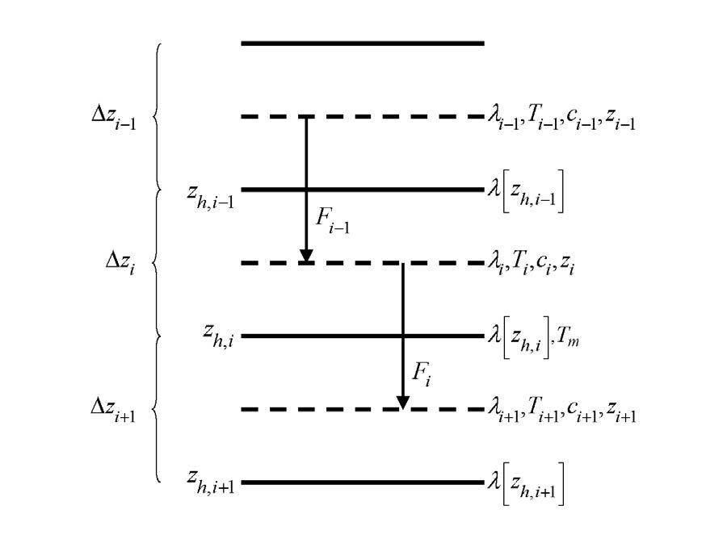
The energy balance for the \(i^{th}\) layer is \[\begin{equation} \frac{c_{i}\Delta z_{i}}{\Delta t}(T_{i}^{n+1} - T_{i}^{n}) = -F_{i-1}+F_{i} \end{equation}\] where the superscripts \(n\) and \(n+\)1 indicate values at the beginning and end of the time step, respectively, and \(\Delta\) t is the time step (s). This equation is solved using the Crank-Nicholson method, which combines the explicit method with fluxes evaluated at \(n\) (\(F_{i-1}^{n}\), \(F_{i}^{n}\)) and the implicit method with fluxes evaluated at \(n+\)1 (\(F_{i-1}^{n+1}\), \(F_{i}^{n+1}\)) \[\begin{equation} \frac{c_{i}\Delta z_{i}}{\Delta t}(F_{i}^{n+1} -F_{i}^{n})=\alpha(-F_{i-1}^{n}+F_{i}^{n})+(1-\alpha)(-F_{i-1}^{n+1}+F_{i}^{n+1}) \end{equation}\] where \(\alpha=\)0.5, resulting in a tridiagonal system of equations \[\begin{equation} r_{i}=a_{i}T_{i-1}^{n+1}+b_{i}T_{i}^{n+1}+c_{i}T_{i+1}^{n+1} \end{equation}\] where \(a_{i}\), \(b_{i}\), and \(c_{i}\) are the subdiagonal, diagonal, and superdiagonal elements in the tridiagonal matrix and \(r_{i}\) is a column vector of constants.
For the top layer \(i=snl+1\), the heat flux from the overlying atmosphere into the surface layer \(h\) (W m\(^{-2}\), defined as positive into the surface) is \[\begin{equation} h^{n+1}=-\alpha F_{i-1}^{n}-(1-\alpha)F_{i-1}^{n+1}. \end{equation}\] The energy balance for layer \(i=snl+1\) is then \[\begin{equation} \frac{c_{i}\Delta z_{i}}{\Delta t}(F_{i}^{n+1} -F_{i}^{n})=h^{n+1}+\alpha F_{i}^{n} +(1-\alpha)F_{i}^{n+1}. \end{equation}\] The heat flux \(h\) at \(n+1\) may be approximated as follows \[\begin{equation} h^{n+1}=h^{n}+\frac{\partial h}{\partial T_{i}}(T_{i}^{n+1}-T_{i}^{n}). \end{equation}\] The resulting equations are \[\begin{equation} \label{eq:heat_fluex_final} \begin{aligned} \frac{c_{i}\Delta z_{i}}{\Delta t}(F_{i}^{n+1} -F_{i}^{n})&=h^{n}+\frac{\partial h}{\partial T_{i}}(T_{i}^{n+1}-T_{i}) \\ &-\alpha\frac{\lambda[z_{h,i}](T_{i}^{n}-T_{i+1}^{n})}{z_{i+1}-z_{i}}-(1-\alpha)\frac{\lambda[z_{h,i}](T_{i}^{n+1}-T_{i+1}^{n+1})}{z_{i+1}-z_{i}} \end{aligned} \end{equation}\]
\[\begin{equation} a_{i}=0 \end{equation}\] \[\begin{equation} b_{i}=1+\frac{\Delta t}{c_{i}\Delta z_{i}}\left[(1-\alpha)\frac{\lambda[z_{h,i}]}{z_{i+1}-z_{i}}-\frac{\partial h}{\partial T_{i}}\right] \end{equation}\] \[\begin{equation} c_{i}=-(1-\alpha)\frac{\Delta t}{c_{i}\Delta z_{i}}\frac{\lambda[z_{h,i}]}{z_{i+1}-z_{i}} \end{equation}\] \[\begin{equation} \label{eq:tridiagonal_system_heat_flux} r_{i}=T_{i}^{n}+\frac{\Delta t}{c_{i}\Delta z_{i}}\left[h^{n}-\frac{\partial h}{\partial T_{i}}T_{i}^{n}+\alpha F_{i}\right] \end{equation}\] where \[\begin{equation} \label{eq:flux_i} F_{i}=-\lambda[z_{h,i}]\left(\frac{T_{i}^{n}-T_{i+1}^{n}}{z_{i+1}-z_{i}}\right). \end{equation}\]
The heat flux into each urban surface \(h\) is \[\begin{equation} h = \overrightarrow{S}_{g}-\overrightarrow{L}_{g} - H_{g}-\lambda E_{g}+H_{wasteheat,g}+H_{aircond,g} \end{equation}\] where \(\overrightarrow{S}_{g}\) is the absorbed solar radiation (section 2.5), \(\overrightarrow{L}_{g}\) is the net longwave radiation (section 2.7), and \(H_{g}\) and \(\lambda E_{g}\) are the waste heat from space heating/air conditioning and heat removed by air conditioning applied only to the pervious and impervious road \[\begin{equation} H_{wasteheat,prvrd}=H_{wasteheat,imprvrd}=\frac{H_{wasteheat}}{1-W_{roof}} \end{equation}\] \[\begin{equation} H_{wasteheat,sunwall}=H_{wasteheat,shdwall}=H_{wasteheat,roof} = 0 \end{equation}\] \[\begin{equation} H_{aircond,prvrd} = H_{aircond,imprvrd}=\frac{H_{aircond}}{1-W_{roof}} \end{equation}\] \[\begin{equation} H_{aircond,sunwall}=H_{aircond,shdwall}=H_{aircond,roof}=0 \end{equation}\] where \(H_{wasteheat}\) and \(H_{aircond}\) are the total waste heat and heat removed by air conditioning from equations ([eq:wasteheat_flux]) and ([eq:air_conditioning_flux]). Note that for the pervious road, the latent heat is always the total latent heat regardless of its partitioning into ground evaporation or transpiration (section 3.2.4). The partial derivative of the heat flux h with respect to surface temperature is \[\begin{equation} \frac{\partial h}{\partial T_{g}} = -\frac{\partial \overrightarrow{L}_{g}}{\partial T_{g}} - \frac{\partial H_{g}}{\partial T_{g}}- \frac{\partial \lambda E_{g}}{\partial T_{g}} \end{equation}\] where the partial derivative of the net longwave radiation is \[\begin{equation} -\frac{\partial \overrightarrow{L}_{g}}{\partial T_{g}} = 4\epsilon_{g}\sigma(T_{g}^n)^3 \end{equation}\] and the partial derivatives of the sensible and latent heat fluxes are given by equations ([eq:partial_derivatives_sensible_flux_temperature_roof])–([eq:partial_derivatives_latent_flux_temperature_shdwall]). \(\sigma\) is the Stefan-Boltzmann constant (W m\(^{-2}\) K\(^{-4}\)) (Table 4) and \(\epsilon_{g}\) is the surface emissivity (section 2.7).
The top layer for roofs and walls is thin enough such that the layer-averaged temperature calculated above is considered to be equivalent to the surface temperature \(T_{g}^{n+1}\). For pervious and impervious road, the top layer temperature has somewhat reduced diurnal amplitude compared with surface temperature. An accurate surface temperature is provided that compensates for this effect and numerical error by tuning the heat capacity of the top layer (through adjustment of the layer thickness) to give an exact match to the analytic solution for diurnal heating. The layer thickness for \(i=snl+1\) is given by \[\begin{equation} \Delta z_{i*}=0.5\left[z_{i}-z_{h,i-1}+c_{a}(z_{i+1}-z_{h,i-1})\right] \end{equation}\] where \(c_{a}\) is a tunable parameter, varying from 0 to 1, and is taken as 0.34 by comparing the numerical solution with the analytic solution. For pervious and impervious road, \(\Delta z_{i*}\) is used in place of \(\Delta z_{i}\) for \(i=snl+1\) in equation ([eq:heat_fluex_final])–([eq:tridiagonal_system_heat_flux]).
For the pervious and impervious road, the boundary condition at the bottom is zero heat flux, \(F_{i}=\)0, resulting in, for \(i=N_{levegrnd}\), \[\begin{equation} \label{eq:temperature_final} \begin{aligned} \frac{c_{i}\Delta z_{i}}{\Delta t}(T_{i}^{n+1} -T_{i}^{n})&=\alpha\frac{\lambda[z_{h,i}](T_{i}^{n}-T_{i+1}^{n})}{z_{i}-z_{i-1}}+(1-\alpha)\frac{\lambda[z_{h,i}](T_{i}^{n+1}-T_{i+1}^{n+1})}{z_{i}-z_{i-1}} \end{aligned} \end{equation}\] \[\begin{equation} a_{i} = -(1-\alpha)\frac{\Delta t}{c_{i}\Delta z_{i}}\frac{\lambda [z_{h,i-1}]}{z_{i}-z_{i-1}} \end{equation}\] \[\begin{equation} b_{i} = 1+(1-\alpha)\frac{\Delta t}{c_{i} \Delta z_{i}}\frac{\lambda [z_{h,i-1}]}{z_{i}-z_{i-1}} \end{equation}\] \[\begin{equation} c_{i}=0 \end{equation}\] \[\begin{equation} r_{i}=T_{i}^{n}-\alpha\frac{\Delta t}{c_{i}\Delta z_{i}}F_{i-1} \end{equation}\] where \[\begin{equation} \label{eq:flux_i-1} F_{i-1} = -\frac{\lambda[z_{h,i-1}]}{z_{i}-z_{i-1}}(T_{i-1}^n-T_{i}^n). \end{equation}\]
For the roof and walls, the boundary condition at the bottom is the internal building temperature \(T_{iB}\), considered as \(T_{iB,max}\geq T_{iB} \geq T_{iB,min}\), where \(T_{iB,max}\) and \(T_{iB,min}\) are prescribed maximum and minimum internal building temperatures (Table 3). The internal building temperature \(T_{iB}\) is determined from a weighted combination of the inner layer wall and roof temperatures as \[\begin{equation} T_{iB} = \frac{H(T_{i=N_{levgrnd,shadwall}}^{n}+T_{i=N_{levgrnd,sunwall}}^{n})+L_{roof}T_{i=N_{levgrnd,roof}}^{n}}{2H+L_{roof}} \end{equation}\] where \(H\) is the building height and \(L_{roof}\) is the length of the roof in an infinite canyon configuration \[\begin{equation} L=\left(\frac{H}{H/W}\right)\left(\frac{W_{roof}}{1-W_{roof}}\right). \end{equation}\] This boundary condition yields, for \(i=N_{levgrnd}\), \[\begin{equation} \begin{aligned} \frac{c_{i}\Delta z_{i}}{\Delta t}(T_{i}^{n+1} -T_{i}^{n}) &=-\alpha\frac{\lambda[z_{h,i}](T_{i}^{n}-T_{i+1}^{n})}{z_{h,i}-z_{i}}+\alpha\frac{\lambda[z_{h,i}](T_{i-1}^{n}-T_{i}^{n})}{z_{i}-z_{i-1}}\\ &-(1-\alpha)\frac{\lambda[z_{h,i}](T_{i}^{n+1}-T_{i+1}^{n+1})}{z_{h,i}-z_{i}}+(1-\alpha)\frac{\lambda[z_{h,i}](T_{i-1}^{n+1}-T_{i}^{n+1})}{z_{i}-z_{i-1}} \end{aligned} \end{equation}\] \[\begin{equation} a_{i} = -(1-\alpha)\frac{\Delta t}{c_{i}\Delta z_{i}}\frac{\lambda [z_{h,i-1}]}{z_{i}-z_{i-1}} \end{equation}\] \[\begin{equation} b_{i} = 1+(1-\alpha)\frac{\Delta t}{c_{i} \Delta z_{i}}\left[\frac{\lambda [z_{h,i-1}]}{z_{i}-z_{i-1}}+\frac{\lambda [z_{h,i}]}{z_{h,i}-z_{i}}\right] \end{equation}\] \[\begin{equation} c_{i}=0 \end{equation}\] \[\begin{equation} r_{i}=T_{i}^{n}+\alpha\frac{\Delta t}{c_{i}\Delta z_{i}}(F_{i}-\alpha F_{i-1}) \end{equation}\] where \[\begin{equation} F_{i}=-\lambda[z_{h,i}]\left(\frac{\alpha T_{i}^{n}-T_{iB}^{n}}{z_{h,i}-z_{i}}\right), \end{equation}\] \[\begin{equation} F_{i-1} = -\frac{\lambda [z_{h,i-1}]}{z_{i}-z_{i-1}}(T_{i-1}^{n}-T_{i}^{n}). \end{equation}\]
For the interior snow/soil layers of all surfaces, \(snl+1<i<N_{levgrnd}\), \[\begin{equation} \begin{aligned} \frac{c_{i}\Delta z_{i}}{\Delta t}(T_{i}^{n+1} -T_{i}^{n}) &=-\alpha\frac{\lambda[z_{h,i}](T_{i}^{n}-T_{i+1}^{n})}{z_{h,i}-z_{i}}+\alpha\frac{\lambda[z_{h,i}](T_{i-1}^{n}-T_{i}^{n})}{z_{i}-z_{i-1}}\\ &-(1-\alpha)\frac{\lambda[z_{h,i}](T_{i}^{n+1}-T_{i+1}^{n+1})}{z_{h,i}-z_{i}}+(1-\alpha)\frac{\lambda[z_{h,i}](T_{i-1}^{n+1}-T_{i}^{n+1})}{z_{i}-z_{i-1}} \end{aligned} \end{equation}\] \[\begin{equation} a_{i} = -(1-\alpha)\frac{\Delta t}{c_{i}\Delta z_{i}}\frac{\lambda [z_{h,i-1}]}{z_{i}-z_{i-1}} \end{equation}\] \[\begin{equation} b_{i} = 1+(1-\alpha)\frac{\Delta t}{c_{i} \Delta z_{i}}\left[\frac{\lambda [z_{h,i-1}]}{z_{i}-z_{i-1}}+\frac{\lambda [z_{h,i}]}{z_{h,i}-z_{i}}\right] \end{equation}\] \[\begin{equation} c_{i}=-(1-\alpha)\frac{\Delta t}{c_{i}\Delta z_{i}}\frac{\lambda[z_{h,i}]}{z_{i+1}-z_{i}} \end{equation}\] \[\begin{equation} r_{i}=T_{i}^{n}+\alpha\frac{\Delta t}{c_{i}\Delta z_{i}}(F_{i}- F_{i-1}). \end{equation}\]
The heating or cooling flux applied to the roof, and sunlit and shaded wall is \[\begin{equation} F_{heat} = \begin{cases} |\alpha F_{i=N_{levgrnd}}^n+(1-\alpha)F_{i=N_{levgrnd}}^{n+1}| & T_{iB} < T_{min} \\ 0 & T_{iB} \geq T_{min} \end{cases} \end{equation}\] \[\begin{equation} F_{cool} = \begin{cases} |\alpha F_{i=N_{levgrnd}}^n+(1-\alpha)F_{i=N_{levgrnd}}^{n+1}| & T_{iB} < T_{max} \\ 0 & T_{iB} \geq T_{max} \end{cases} \end{equation}\] where \[\begin{equation} F_{i=N_{levgrnd}}^{n} = -\frac{\lambda[z_{h,i=N_{levgrnd}}]}{z_{h,i=N_{levgrnd}}-z_{i=N_{levgrnd}}}(T_{i=N_{levgrnd}}^{n}-T_{iB}) \end{equation}\] \[\begin{equation} \label{eq:flux_i_n+1} F_{i=N_{levgrnd}}^{n+1} = -\frac{\lambda[z_{h,i=N_{levgrnd}}]}{z_{h,i=N_{levgrnd}}-z_{i=N_{levgrnd}}}(T_{i=N_{levgrnd}}^{n+1}-T_{iB}). \end{equation}\]
The total waste heat from space heating/air conditioning is \[\begin{equation} \label{eq:wasteheat_flux} \begin{aligned} H_{wasteheat} & = W_{roof}(f_{heat}F_{heat,roof}+f_{cool}F_{cool,roof}) + \\ & (1-W_{roof})\frac{H}{W}(f_{heat}F_{heat,sunwall}+f_{cool}F_{cool,sunwall}+f_{heat}F_{heat,shdwall}+f_{cool}F_{cool,shdwall}) \\ & \leq H_{wasteheat,max} \end{aligned} \end{equation}\] where \(f_{heat}=1/0.75\) and \(f_{cool}=1/0.25\) are factors describing the efficiency of space heating/air conditioning systems and \(H_{wasteheat,max}=\)100 W m\(^{-2}\) is a maximum limit on waste heat at any given time step. The heat removed by air conditioning is \[\begin{equation} \label{eq:air_conditioning_flux} H_{aircond} = F_{cool}. \end{equation}\]
4.2 Phase Change
Phase change may take place in any snow/soil layers of the pervious road and in the ponded water on roofs and impervious road. Note that the ponded water is treated as part of the top layer. Upon solution of the tridiagonal equation set[74], the temperatures are evaluated to determine if phase change will take place as \[\begin{equation} \label{eq:layer_temperature_phase} \begin{aligned} T_{i}^{n+1} > T_{f} \; \textrm{and} \; w_{ice,i}>0 \quad i=snl+1,...,N_{levgrnd} \; & \textrm{melting} \\ T_{i}^{n+1} < T_{f} \; \textrm{and} \; w_{liq,i}>0 \quad i=snl+1,...,0 \; & \textrm{freezing} \\ T_{i}^{n+1} < T_{f} \; \textrm{and} \; w_{liq,i}>w_{liq,max,i} \quad i=1,...,N_{levgrnd} \; & \textrm{freezing} \end{aligned} \end{equation}\] where \(T_{i}^{n=1}\) is the layer temperature after solution of the tridiagonal equation set, \(w_{ice,i}\) and \(w_[liq,i]\) are the mass of ice and liquid water (kg m\(^{-2}\)) in each layer, respectively, and \(T_{f}\) is the freezing temperature of water (K) (Table 4). For the freezing process in the layers of the pervious road, the concept of supercooled soil water from[75] is adopted. The supercooled soil water is the liquid water that coexists with ice over a wide range of temperatures below freezing and is implemented through a freezing point depression equation
\[\begin{equation} \label{eq:maximum_liquid_water} w_{liq,max,i}=\Delta z_{i}\theta_{sat,i}\left[\frac{10^3L_{f}(T_{f}-T_{i})}{gT_{i}\psi_{sat,i}}\right]^{-1/B_{i}} \quad T_{i} < T_{f} \end{equation}\] where \(w_{liq,max,i}\) is the maximum liquid water in layer \(i\) (kg m\(^{-2}\)) when the soil temperature \(T_{i}\) is below the freezing temperature \(T_{f}\), \(L_{f}\) is the latent heat of fusion (j kg\(^{-1}\)) (Table 4), \(g\) is the gravitational acceleration (m s\(^{-2}\)) (Table 4) and \(\psi_{sat,i}\) and \(B_{i}\) are the soil texture-dependent saturated matric potential (mm) and[76] exponent (section 5.3.1). Equation ([eq:maximum_liquid_water]) applies to pervious road only, for roof and impervious road \(w_{liq,max,i}=\)0.
For the special case when snow is present (snow mass \(W_{sno}>\)0) but there are no explicit snow layers (\(snl=\)0) (i.e., there is not enough snow present to meet the minimum snow depth requirement of 0.01 m), snow melt will take place for soil layer \(i=\)1 if the soil layer temperature is greater than the freezing temperature (\(T_{1}^{n+1}\)>\(T_{f}\)).
The rate of phase change is assessed from the energy excess (or deficit) needed to change \(T_{i}\) to freezing temperature, \(T_{f}\). The excess or deficit of energy \(H_{i}\) (W m\(^{-2}\)) is determined as follows \[\begin{equation} H_{i} = \begin{cases} h+\frac{\partial h}{\partial T}(T_{f}-T_{i}^{n})+\alpha F_{i}^{n}+(1-\alpha)F_{i}^{n+1} & \\ -\frac{c_{i}\Delta z_{i}}{\Delta t}(T_{f}-T_{i}^{n}) & i=snl+1 \\ \alpha(F_{i}^{n}-F_{i-1}^{n})+(1-\alpha)(F_{i}^{n+1}-F_{i-1}^{n+1} & \\ -\frac{c_{i}\Delta z_{i}}{\Delta t}(T_{f}-T_{i}^{n}) & i=snl+2,...,N_{levgrnd} \end{cases} \end{equation}\] where \(F_{i}^{n+1}\) and \(F_{i-1}^{n+1}\) are calculated from equations ([eq:flux_i]) and ([eq:flux_i-1]) using \(T_{i}^{n+1}\). For roof and walls, \(F_{i=N_{levgrnd}}^{n+1}\) is calculated from equation ([eq:flux_i_n+1]). If the melting criteria is met (equation ([eq:layer_temperature_phase])) and \(H_{m}=\frac{H_{i}\Delta t}{L_{f}}>\)0, then the ice mass is readjusted as \[\begin{equation} \label{eq:ice_mass_adjusted} w_{ice,i}^{n+1} = w_{ice,i}^{n}-H_{m}\geq0 \quad i=snl+1,...,N_{levgrnd}. \end{equation}\] If the freezing criteria is met (equation ([eq:layer_temperature_phase]) and \(H_{m}<\)0, then the ice mass is readjusted for \(i=snl+1,...,0\) as \[\begin{equation} w_{ice,i}^{n+1} = \min(w_{liq,i}^{n}+w_{ice,i}^{n}, w_{ice,i}^{n}-H_{m}) \end{equation}\] and for \(i=1,...N_{levgrnd}\) as \[\begin{equation} w_{ice,i}^{n+1} = \begin{cases} \min(w_{liq,i}^{n}+w_{ice,i}^{n}-w_{liq,max,i}^{n},W_{ice,i}^{n}-H_{m}) & w_{liq,i}^{n}+w_{ice,i}^{n}\geq w_{liq,max,i}^{n}\\ 0 & w_{liq,i}^{n}+w_{ice,i}^{n} < w_{liq,max,i}^{n} \end{cases}. \end{equation}\] Liquid water mass is readjusted as \[\begin{equation} \label{eq:liquid_water_mass_adjusted} w_{liq,i}^{n+1} = w_{liq,i}^{n}+w_{ice,i}^{n}-w_{ice,i}^{n+1}\geq0. \end{equation}\] Because part of the energy \(H_{i}\) may not be consumed in melting or released in freezing, the energy is recalculated as \[\begin{equation} H_{i*}=H_{i}-\frac{L_{f}(w_{ice,i}^{n}-w_{ice,i}^{n+1})}{\Delta t} \end{equation}\] and this energy is used to cool or warm the layer (if |\(H_{i*}\)|>0) as \[\begin{equation} \label{eq:energy_melting_layer} T_{i}^{n+1} = \begin{cases} T_{f}+\frac{\Delta t}{c_{i}\Delta z_{i}}H_{i*}/\left(1-\frac{\Delta t}{c_{i}\Delta z_{i}\frac{\partial h}{\partial T}}\right) & i=snl+1 \\ T_{f}+\frac{\Delta t}{c_{i}\Delta z_{i}}H_{i*} & i=snl+2,...,N_{levgrnd} \end{cases}. \end{equation}\]
For the special case when snow is present (\(W_{sno}>0\)), there are no explicit snow layers (\(snl=0\)), and \(\frac{H_\textrm{1}\Delta t}{L_{f}}>\)0 (melting), the snow mass \(W_{sno}\) (kg m\(^{-2}\)) is reduced according to \[\begin{equation} W_{sno}^{n+1} = W_{sno}^{n}-\frac{H_{1}\Delta t}{L_{f}} \geq 0. \end{equation}\] The snow depth is reduced proportionally \[\begin{equation} z_{sno}^{n+1} = \frac{W_{sno}^{n+1}}{W_{sno}^{n}}z_{sno}^{n}. \end{equation}\] Again, because part of the energy may not be consumed in melting, the energy for the surface layer \(i=1\) is recalculated as \[\begin{equation} H_{1*}=H_{1}-\frac{L_{f}(W_{sno}^{n}-W_{sno}^{n+1})}{\Delta t}. \end{equation}\] If there is excess energy (\(H_{1*}\)>0), this energy becomes available to the top layer as \[\begin{equation} \label{eq:top_layer_energy} H_{1} = H_{1*}. \end{equation}\] The ice mass, liquid water content, and temperature of the top layer are then determined from equations ([eq:ice_mass_adjusted]), ([eq:liquid_water_mass_adjusted]), and ([eq:energy_melting_layer]) using the recalculated energy from equation ([eq:top_layer_energy]). Snow melt \(M_{1S}\) (kg m\(^{-2}\) s\(^{-1}\)) and phase change energy \(E_{p,1S}\) (W m\(^{-2}\)) for this special case are \[\begin{equation} M_{1S}=\frac{W_{sno}^{n}-W_{sno}^{n+1}}{\Delta t} \geq 0 \end{equation}\] \[\begin{equation} E_{p,1S} = L_{f}M_{1s}. \end{equation}\]
The total energy of phase change \(E_{p}\) (W m\(^{-1}\)) for the column is \[\begin{equation} E_{p}=E_{p,1S}+\sum_{i=snl+1}^{i=N_{levgrnd}}E_{p,i} \end{equation}\] where \[\begin{equation} E_{p,i} = L_{f}\frac{(w_{ice,i}^{n}-w_{ice,i}^{n+1})}{\Delta t}. \end{equation}\] The total snow melt \(M\) (kg m\(^{-2}\) s\(^{-1}\)) is \[\begin{equation} M=M_{1S}+\sum_{i=snl+1}^{i=0}M_{i} \end{equation}\] where \[\begin{equation} M_{i} = \frac{(w_{ice,i}^{n}-w_{ice,i}^{n+1})}{\Delta t} \geq 0. \end{equation}\] The solution for temperatures conserves energy as \[\begin{equation} G-E_{p}-\sum_{i=snl+1}^{i=N_{levgrnd}}\frac{c_{i}\Delta z_{i}}{\Delta t}(T_{i}^{n+1}-T_{i}^{n+1})+\left[\alpha F_{i=N_{levgrnd}}^{n}+(1-\alpha)F_{i=N_{levgrnd}}^{n+1}\right]=0 \end{equation}\] where \(G\) is the ground heat flux (section 3.2.4) and the last term is the non-zero flux bottom boundary condition (roofs and walls only).
4.3 Thermal Properties
The thermal conductivities and heat capacities for roofs, walls, and \(i=1,...,N_{imprvrd}\) layers of the impervious road are specified by the surface dataset as described in section 1.2.2 and Table 3. The \(i=N_{imprvrd}+1,...,N_{levgrnd}\) layers of impervious road and the pervious road layers consist of soil or bedrock whose thermal properties are described below. In CLM4, organic matter modifies soil properties according to[77]. Urban soils are assumed to have no organic matter so the equations below are shown in their reduced form. Note that the moisture content of the impervious road soil layers is maintained at zero.
Soil thermal conductivity \(\lambda_{i}\) (W m\(^{-1}\) K\(^{-1}\)) is from[78] \[\begin{equation} \begin{aligned} \lambda_i &= \begin{cases} K_{e,i}\lambda_{sat,i} + (1-K_{e,i})\lambda_{dry,i}, & S_{r,i} > 10^{-7},\\ \lambda_{dry,i}, & S_{r,i} \leq 10^{-7}, \end{cases} \qquad i=1,\ldots,N_{\mathrm{levsoi}},\\ \lambda_i &= \lambda_{\mathrm{bedrock}}, \qquad i=N_{\mathrm{levsoi}}+1,\ldots,N_{\mathrm{levgrnd}}. \end{aligned} \end{equation}\] where \(\lambda_{sat,i}\) is the saturated thermal conductivity, \(\lambda_{dry,i}\) is the dry thermal conductivity, \(K_{e,i}\) is the Kersten number, \(S_{r,i}\) is the wetness of the soil with respect to saturation, and \(\lambda_{bedrock}=\)3 W m\(^{-1}\) K\(^{-1}\) is the thermal conductivity assumed for the deep ground layers (typical of saturated granitic rock)[79]. The saturated thermal conductivity \(\lambda_{sat,i}\) (W m\(^{-1}\) K\(^{-1}\)) depends on the thermal conductivities of the soil solid, liquid water, and ice constituents \[\begin{equation} \lambda_{sat,i}= \begin{cases} \lambda_{s,i}^{1-\theta_{sat,i}}\lambda_{liq}^{\theta_{sat,i}} & T_{i} \geq T_{f} \\ \lambda_{s,i}^{1-\theta_{sat,i}}\lambda_{liq}^{\theta_{sat,i}}\lambda_{ice}^{\theta_{sat,i}-\theta_{liq,i}} & T_{i}<T_{f} \end{cases} \end{equation}\] where the thermal conductivity of soil solids \(\lambda_{s,i}\) varies with the sand and clay content \[\begin{equation} \lambda_{s,i} = \frac{8.80(\%sand)_{i}+2.92(\%clay)_{i}}{(\%sand)_{i}+(\%clay)_{i}}, \end{equation}\] and \(\theta_{sat,i}\) is the volumetric water content at saturation (porosity) (section (5.3.1). The thermal conductivity of dry natural soil \(\lambda_{dry,i}\) (W m\(^{-1}\) K\(^{-1}\)) depends on the bulk density \(\rho_{d,i}=\)2700(1-\(\theta_{sat,i}\)) (kg m\(^{-3}\)) as \[\begin{equation} \lambda_{dry,i} = \frac{0.135\rho_{d,i}+64.7}{2700-0.947\rho_{d,i}}. \end{equation}\] The Kersten number \(K_{e,i}\) is a function of the degree of saturation \(S_{r}\) and phase of water \[\begin{equation} K_{e,i}= \begin{cases} \log(S_{r,i})+1\geq0 & T_{i} \geq T_{f} \\ S_{r,i} & T_{i}<T_{f} \end{cases} \end{equation}\] where \[\begin{equation} S_{r,i} = \left(\frac{w_{liq,i}}{\rho_{liq}\Delta z_{i}}+\frac{w_{ice,i}}{\rho_{ice}\Delta z_{i}}\right)\frac{1}{\theta_{sat,i}}=\frac{\theta_{liq,i}+\theta_{ice,i}}{\theta_{sat,i}} \leq 1. \end{equation}\]
Thermal conductivity \(\lambda_{i}\) (W m\(^{-1}\) K\(^{-1}\)) for snow is from[80] \[\begin{equation} \lambda_{i} = \lambda_{air}+(7.75\times10^{-5}\rho_{sno,i}+1.105\times10^{-6}\rho_{sno,i}^2)(\lambda_{ice}-\lambda_{air}) \end{equation}\] where \(\lambda_{air}\) and \(\lambda_{ice}\) are the thermal conductivities of air and ice (Table 4) and \(\rho_{sno,i}\) is the bulk density of snow (kg m\(^{-3}\)) \[\begin{equation} \rho_{sno,i}=\frac{w_{ice,i}+w_{liq,i}}{\Delta z_{i}}. \end{equation}\] The volumetric heat capacity \(c_{i}\) (J m\(^{-3}\) K\(^{-1}\)) for soil is from[81] and depends on the heat capacities of the soil solid, liquid water, and ice constituents \[\begin{equation} \label{eq:volumetric_heat_capacity_soil} c_{i}=c_{s,i}(1-\theta_{sat,i})+\frac{w_{ice,i}}{\Delta z_{i}}C_{ice} +\frac{w_{liq,i}}{\Delta z_{i}}C_{liq} \end{equation}\] where the heat capacity of soil solids \(c_{s,i}\) (J m\(^{-3}\) K\(^{-1}\)) is \[\begin{equation} \begin{aligned} & c_{s,i} = \left(\frac{2.218(\%sand)_{i}+2.385(\%clay)_{i}}{(\%sand)_{i}+(\%clay)_{i}}\right) \times 10^{6} & i=1,...,N_{levsoi} \\ & c_{s,i} = c_{s,bedrock} & i=N_{levsoi}+1,...,N_{levgrnd} \end{aligned} \end{equation}\] and \(C_{liq}\) and \(C_{ice}\) are the specific heat capacities (J kg\(^{-1}\) K\(^{-1}\)) of liquid water and ice, respectively (Table 4) and \(c_{s,bedrock}=\)2\(\times\)m\(^{-3}\) K\(^{-1}\) is the heat capacity of bedrock. For snow \[\begin{equation} c_{i} = \frac{w_{ice,i}}{\Delta z_{i}}C_{ice}+\frac{w_{liq,i}}{\Delta z_{i}}C_{liq}. \end{equation}\] For the special case when snow is present (\(W_{sno}>\)0) but there are no explicit snow layers (\(snl=\)0), the heat capacity of the top layer is a blend of ice and soil heat capacity \[\begin{equation} c_{1}=c_{1}^{*}+\frac{C_{ice}W_{sno}}{\Delta z_{1}} \end{equation}\] where \(c_{1}^{*}\) is calculated from equation ([eq:volumetric_heat_capacity_soil]).
5 Hydrology
The hydrology for the pervious road generally follows that of CLM4 for bare soil surfaces and includes snow accumulation and melt, water transfer between snow layers, infiltration, evaporation, surface runoff, sub-surface drainage, redistribution within the soil column, and groundwater discharge and recharge to simulate changes in snow water \(\Delta W_{sno}\), soil water \(\Delta w_{liq,i}\), soil ice \(\Delta w_{ice,i}\), and water in the unconfined aquifer \(\Delta W_{a}\) (all in kg m\(^{-2}\) or mm of H\(_{2}\)O) (Figure 13). The water balance of the pervious road is \[\begin{equation} \Delta W_{sno} + \sum_{i=1}^{N_{levsoi}} (\Delta w_{liq,i} + \Delta w_{ice,i}) + \Delta W_{a} = \left( \begin{aligned} q_{rain} + q_{sno} - E_{prvrd} - q_{over} - q_{drai} \\ - q_{rgwl} - q_{snwcp,ice} \end{aligned} \right)\Delta t \end{equation}\] where \(q_{rain}\) is liquid part of precipitation, \(q_{sno}\) is solid part of precipitation, \(E_{prvrd}\) is the total evaporation (chapter 3), \(q_{over}\) is surface runoff (section 5.2), \(q_{drai}\) is sub-surface drainage (section 5.4), \(q_{rgwl}\) and \(q_{snwcp,ice}\) are liquid and solid runoff due to snow capping (section 5.5) (all in kg m\(^{-2}\) s\(^{-1}\)), \(N_{levsoi}\) is the number of soil layers, and \(\Delta t\) is the time step (s). In general, snow capping will not be invoked for urban areas, but is described here for completeness.
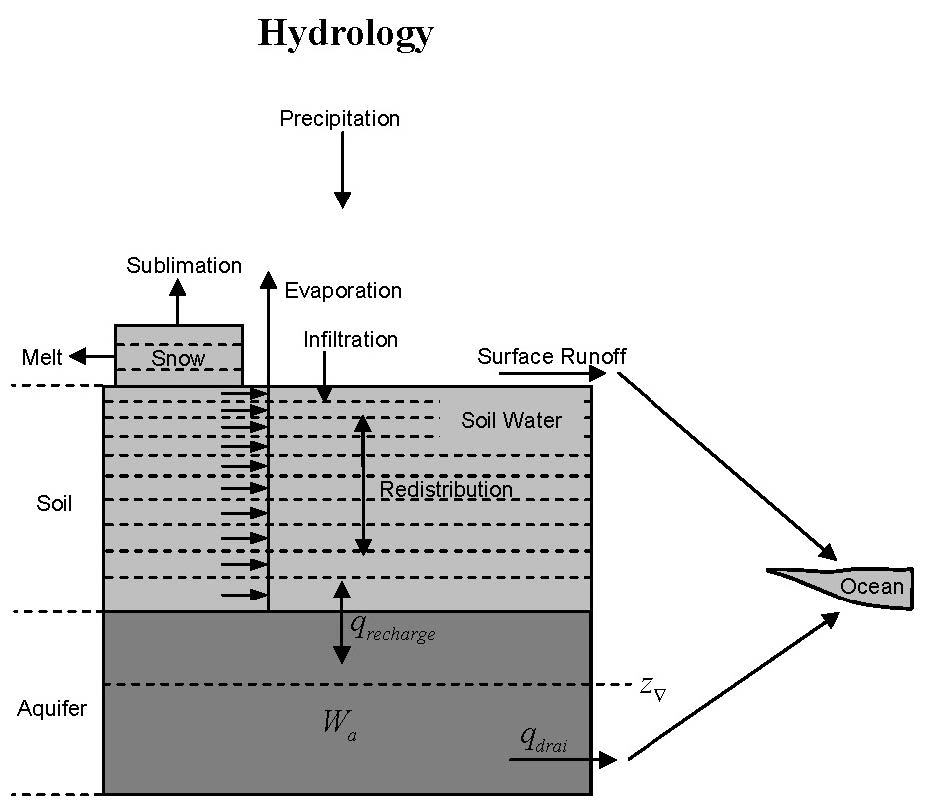
The roof and the impervious road are hydrologically inactive except for their capacity to intercept, store, and evaporate a limited amount of liquid precipitation (1 kg m\(^{-2}\)), and snow. Logistically, the storage of liquid precipitation is accounted for in the top layer \(i=1\)1. The water in excess of this storage capacity is routed to surface runoff. These surfaces are also allowed to intercept solid precipitation (snow) and store this until the snowpack is melted or sublimated. No sub-surface drainage is allowed. The water balance of the roof and impervious road is \[\begin{equation} \Delta W_{sno} + \Delta w_{liq,1} + \Delta w_{ice,1} = (q_{rain}+q_{snow}-E_{roof}-q_{over}-q_{rgwl}-q_{snwcp,ice}) \Delta t \end{equation}\] \[\begin{equation} \Delta W_{sno} + \Delta w_{liq,1} + \Delta w_{ice,1} = (q_{rain}+q_{snow}-E_{imprvrd}-q_{over}-q_{rgwl}-q_{snwcp,ice}) \Delta t \end{equation}\] where \(\Delta w_{liq,1}\) and \(\Delta w_{ice,i}\) are the liquid water and ice stored on the top of the urban surface. The sunlit and shaded walls are hydrologically inactive.
The rate of liquid and solid precipitation reaching the urban surface (kg m\(^{-2}\) s\(^{-1}\)) is \[\begin{equation} q_{grnd,liq}=q_{rain} \end{equation}\] \[\begin{equation} q_{grnd,ice}=q_{sno}. \end{equation}\] Solid precipitation reaching the surface, \(q_{grnd,ice} \Delta t\), is added immediately to the snow pack (section 5.1). The liquid part, \(q_{grnd,liq} \Delta t\) is added after surface fluxes, temperatures, soil water, and runoff have been determined.
5.1 Snow
The parameterizations for snow are based primarily on[82],[80],[83]. Snow can have up to five layers. These layers are indexed in the Fortran code as \(i\) = \(-\)4, \(-\)3, \(-\)2, \(-\)1, 0 where layer \(i=0\) is the snow layer next to the top soil layer and layer \(i=-\)4 is the top layer of a five-layer snow pack. Since the number of snow layers varies according to the snow depth, we use the notation \(snl+\)1 to describe the top layer of snow for the variable layer snow pack, where \(snl\) is the negative of the number of snow layers. Refer to Figure 14 for an example of the snow layer structure for a three layer snow pack.
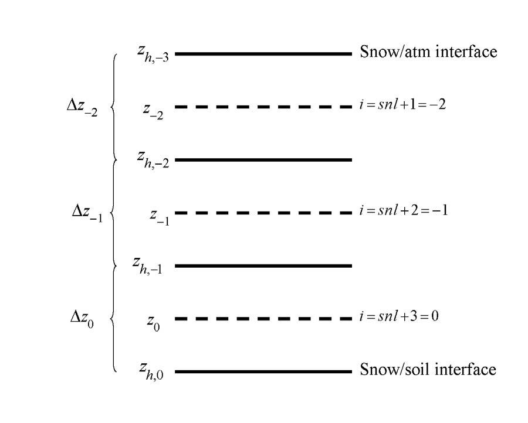
The state variables for snow are the mass of water w\(_{liq,i}\) (kg m\(^{-2}\)), mass of ice ice, w\(_{ice,i}\) (kg m\(^{-2}\)), layer thickness \(\Delta z_{i}\) (m), and temperature \(T_{i}\) (chapter 4). The water vapor phase is neglected. Snow can also exist in the model without being represented by explicit snow layers. This occurs when the snowpack is less than a specified minimum snow depth (\(z_{sno} <\) 0.01 m). In this case, the state variable is the mass of snow W\(_{sno}\) (kg m\(^{-2}\)). The next two sections (5.1.1 and 5.1.2) describe the ice and water content of the snow pack assuming that at least one snow layer exists. See section 5.1.3 for a description of how a snow layer is initialized. Snow compaction is described in section 5.1.4 and snow layer combination and subdivision in section 5.1.5.
5.1.1 Ice Content
The conservation equation for mass of ice in snow layers is \[\begin{equation} \frac{\partial w_{ice,i}}{\partial t} = \begin{cases} q_{ice,i-1}-\frac{(\Delta w_{ice,i})_{p}}{\Delta t} & i=snl+1 \\ -\frac{(\Delta w_{ice,i})_{p}}{\Delta t} & i=snl+2,...,0 \end{cases} \end{equation}\] where \(q_{ice,i-1}\) is the rate of ice accumulation from precipitation or frost or the rate of ice loss from sublimation (kg m\(^{-2}\) s\(^{-1}\)) in the top layer and \(\frac{(w_{ice,i})_{p}}{\Delta t}\) is the change in ice due to phase change (melting rate) (section 4.2). The term \(q_{ice,i-1}\) is calculated in two steps as \[\begin{equation} q_{ice,i}=q_{grnd,ice}+(q_{frost}-q_{subl}) \end{equation}\] where \(q_{grnd,ice}\) is the rate of solid precipitation reaching the surface and \(q_{frost}\) and \(q_{subl}\) are gains due to frost and losses due to sublimation, respectively (section 3.2.4). In the first step, a new snow depth \(z_{sno}\) (m) is calculated from \[\begin{equation} z_{sno}^{n+1} = z_{sno}^{n} + \Delta z_{sno} \end{equation}\] where \[\begin{equation} \Delta z_{sno} = \frac{q_{grnd,ice}\Delta t}{\rho_{sno}} \end{equation}\] and \(\rho_{sno}\) is the bulk density of newly fallen snow (kg m\(^{-3}\))[82] \[\begin{equation} \rho_{sno}= \begin{cases} 50+1.7(17)^{1.5} & T_{atm} >T_{f}+2 \\ 50+1.7(T_{atm}-T_{f}+15)^{1.5} & T_{f}-15 < T_{atm} \leq T_{f}+2 \\ 50 & T_{atm} \leq T_{f}-15 \end{cases} \end{equation}\] where \(T_{atm}\) is the atmospheric temperature (K), and \(T_{f}\) is the freezing temperature of water (K) (Table 4). The mass of snow \(W_{sno}\) is \[\begin{equation} W_{sno}^{n+1}= W_{sno}^{n}+ q_{grnd,ice} \Delta t. \end{equation}\] The ice content of the top layer and the layer thickness are updated as \[\begin{equation} w_{ice,snl+1}^{n+1} = w_{ice,snl+1}^{n} + q_{grnd,ice} \Delta t \end{equation}\]
\[\begin{equation} \Delta z_{snl+1}^{n+1} = \Delta z_{snl+1}^{n} + \Delta z_{sno}. \end{equation}\]
In the second step, after surface fluxes and temperatures have been determined (chapters 3 and 4), \(w_{ice,snl+1}\) s updated for frost or sublimation as \[\begin{equation} \label{eq:ice_content_final} w_{ice,snl+1}^{n+1} = w_{ice,snl+1}^{n} + (q_{frost}-q_{subl})\Delta t. \end{equation}\] If \(w_{ice,snl+1}^{n+1}<\)0 upon solution of equation ([eq:ice_content_final]), the ice content is reset to zero and the liquid water content \(w_{liq,snl+1}\) is reduced by the amount required to bring \(w_{ice,snl+1}^{n+1}\) up to zero. The snow water equivalent \(W_{sno}\) is capped to not exceed 1000 kg m\(^{-2}\). If the addition of \(q_{frost}\) were to result in \(W_{sno}>\)1000 kg m\(^{-2}\), the frost term \(q_{frost}\) is instead added to the ice runoff term \(q_{snwcp,ice}\) (section 5.5).
5.1.2 Water Content
The conservation equation for mass of water in snow layers is \[\begin{equation} \frac{\partial w_{liq,i}}{\partial t} = (q_{liq,i-1}-q_{liq,i})+\frac{(\Delta w_{liq,i})_{p}}{\Delta t} \end{equation}\] where \(q_{liq,i-1}\) is the flow of liquid water into layer i from the layer above, \(q_{liq,i}\) is the flow of water out of layer \(i\) to the layer below, \((\Delta w_{liq,i})_{p}/\Delta t\) is the change in liquid water due to phase change (melting rate) (section 4.2). For the top snow layer only, \[\begin{equation} q_{liq,i-1}=q_{grnd,liq}+(q_{sdew}-q_{seva}) \end{equation}\] where \(q_{grnd,liq}\) is the rate of liquid precipitation reaching the snow, \(q_{seva}\) is the evaporation of liquid water and \(q_{sdew}\) is the liquid dew (section 3.2.4). After surface fluxes and temperatures have been determined (chapters 3 and 4), \(w_{liq,snl+1}\) is updated for the liquid precipitation reaching the ground and dew or evaporation as \[\begin{equation} w_{liq,snl+1}^{n+1} = w_{liq,snl+1}^{n} + (q_{grnd,liq} + q_{sdew} - q_{seva})\Delta t. \end{equation}\] When the liquid water within a snow layer exceeds the layer’s holding capacity, the excess water is added to the underlying layer, limited by the effective porosity \((1-\theta_{ice}\)) of the layer. The flow of water is assumed to be zero \((q_{liq,i})=0\) if the effective porosity of either of the two layers (\(1-\theta_{ice,i}\) and \(1-\theta_{ice,i+1}\)) is less than \(\theta_{imp}=\)0.05, the water impermeable volumetric water content. Thus, water flow between layers, \(q_{liq,i}\), for \(i=snl+1,...,0\) is initially calculated as \[\begin{equation} \label{eq:water_flow_between_layers} q_{liq,i}=\frac{\rho_{liq,i}\left[\theta_{liq,i}-S_{r}(1-\theta_{ice,i})\right]\Delta z_{i}}{\Delta t} \geq0 \end{equation}\] where the volumetric liquid water \(\theta_{liq,i}\) and ice \(\theta_{ice,i}\) contents are \[\begin{equation} \theta_{ice,i} = \frac{w_{ice,i}}{\Delta z_{i}\rho_{ice}} \leq 1 \end{equation}\] \[\begin{equation} \theta_{liq,i}=\frac{w_{liq,i}}{\Delta z_{i}\rho_{liq}} \leq 1-\theta_{ice,i}, \end{equation}\] and \(S_{r}=\)0.033 is the irreducible water saturation (snow holds a certain amount of liquid water due to capillary retention after drainage has ceased[82]). The water holding capacity of the underlying layer limits the flow of water \(q_{liq,i}\) calculated in equation ([eq:water_flow_between_layers]), unless the underlying layer is the surface layer, as \[\begin{equation} q_{liq,i} \leq \frac{\rho_{liq}\left[1-\theta_{ice,i+1}-\theta_{liq,i+1}\right]\Delta z_{i+1}}{\Delta t} \quad i=snl+1,...,-1. \end{equation}\] The volumetric liquid water content \(\theta_{liq,i}\) is updated as \[\begin{equation} \label{eq:volumetric_liquid_water_content} \theta_{liq,i}^{n+1}=\theta_{liq,i}^{n}+(q_{i-1}-q_{i})\Delta t. \end{equation}\] Equations ([eq:water_flow_between_layers])–([eq:volumetric_liquid_water_content]) are solved sequentially from top (\(i=snl+1\)) to bottom (\(i=\)0) snow layer in each time step. The total flow of liquid water reaching the urban surface is then \(q_{liq,0}\).
5.1.3 Initialization of Snow Layer
If there are no existing snow layers (\(snl+\)1=1) but \(z_{sno}\geq0.01\) after accounting for solid precipitation \(q_{sno}\), then a snow layer is initialized (\(snl=-\)1) as follows \[\begin{equation} \begin{aligned} &\Delta z_{0}=z_{sno} \\ &z_{0}=-0.5\Delta z_{0} \\ &z_{h,-1}=-\Delta z_{0} \\ &T_{0}=\min(T_{f},T_{atm}) \\ &w_{ice,0}=W_{sno} \\ &w_{liq,0}=0 \end{aligned}. \end{equation}\]
5.1.4 Snow Compaction
Snow compaction is initiated after the hydrology calculations [surface runoff (section 5.2), infiltration (section 5.2), soil water (section 5.4), groundwater-soilwater interactions (section 5.4)] are complete. Compaction of snow includes three types of processes: destructive metamorphism of new snow (crystal breakdown due to wind or thermodynamic stress); snow load or overburden (pressure); and melting (changes in snow structure due to melt-freeze cycles plus changes in crystals due to liquid water). The total fractional compaction rate for each snow layer \(C_{R,i}\) (s\(^{-1}\)) is the sum of the three compaction processes \[\begin{equation} C_{R,i}=\frac{1}{\Delta z_{i}}\frac{\partial \Delta z_{i}}{\partial t} = C_{R1,i}+C_{R2,i}+C_{R3,i}. \end{equation}\] Compaction is not allowed if the layer is saturated \[\begin{equation} 1-\left(\frac{w_{ice,i}}{\Delta z_{i}\rho_{ice}}+\frac{w_{liq,i}}{\Delta z_{i}\rho_{liq}}\right) \leq 0.001 \end{equation}\] or if the ice content is below a minimum value (\(w_{ice,i}\leq\)1).
Compaction as a result of destructive metamorphism \(C_{R1,i}\) (\(s^{-1}\)) is temperature dependent[82] \[\begin{equation} C_{R1,i} = \left[\frac{1}{\Delta z_{i}}\frac{\partial \Delta z_{i}}{\partial t}\right]_{metamorphism} = -c_{3}c_{1}c_{2}\exp[-c_{4}(T_{f}-T_{i})] \end{equation}\] where \(c_{3}=2.777\times\)10\(^{-6}\) (s\(^{-1}\)) is the fractional compaction rate for \(T_{i}=T_{f}\), \(c_{4}=\)0.04 K\(^{-1}\), and \[\begin{equation} \begin{aligned} & c_{1}=1 & \frac{w_{ice,i}}{\Delta z_{i}} \leq 100 \textrm{kg m}^{-3}\\ & c_{1}=\exp\left[-0.046 \left(\frac{w_{ice,i}}{\Delta z_{i}}\right)\right] & \frac{w_{ice,i}}{\Delta z_{i}} >100 \textrm{kg m}^{-3}\\ & c_{2}=2 & \frac{w_{ice,i}}{\Delta z_{i}}>0.01 \\ & c_{2}=1 & \frac{w_{ice,i}}{\Delta z_{i}}\leq0.01 \\ \end{aligned} \end{equation}\] where \(w_{ice,i}/\Delta z_{i}\) and \(w_{liq,i}/\Delta z\) are the bulk densities of liquid water and ice (kg m\(^{-3}\)).
The compaction rate as a result of overburden \(C_{R2,i}\) (s\(^{-1}\)) is a linear function of the snow load pressure \(P_{s,i}\) (kg m\(^{-2}\))[82] \[\begin{equation} C_{R2,i}=\left[\frac{1}{\Delta z_{i}}\frac{\partial \Delta z_{i}}{\partial t}\right]_{overburden}=-\frac{P_{s,i}}{\eta} \end{equation}\] where \(\eta\) is a viscosity coefficient (kg s m\(^{-2}\)) that varies with density and temperature as \[\begin{equation} \eta = \eta_{0}\exp \left[c_{5}(T_{f}-T_{i})+c_{6}\frac{w_{ice,i}}{\Delta z_{i}}\right] \end{equation}\] where \(\eta_{0}=\)9\(\times\)10\(^5\) kg s m\(^{-2}\), and \(c_{5}=\)0.08 K\(^{-1}\), \(c_{6}=\)0.023 m\(^{3}\) kg\(^{-1}\) are constants. The snow load pressure \(P_{s,i}\) is calculated for each layer as the sum of the ice \(w_{ice,i}\) and liquid water contents \(w_{liq,i}\) of the layers above plus half the ice and liquid water contents of the layer being compacted \[\begin{equation} P_{s,i}=\frac{(w_{ice,i}+w_{liq,i})}{2}+\sum_{j=snl+1}^{j=i-1}(w_{ice,i}+w_{liq,i}). \end{equation}\]
The compaction rate due to melting \(C_{R3,i}\) (s\(^{-1}\)) is taken to be the ratio of the change in snow ice fraction after the melting to the fraction before melting \[\begin{equation} C_{R3,i} = \left[\frac{1}{\Delta z_{i}}\frac{\partial \Delta z_{i}}{\partial t}\right]=-\frac{1}{\Delta t}\max\left(0,\frac{f_{ice,i}^{n}-f_{ice,i}^{n+1}}{f_{ice,i}^{n}}\right) \end{equation}\] where the fraction of ice \(f_{ice,i}\) is \[\begin{equation} f_{ice,i} = \frac{w_{ice,i}}{w_{ice,i}+w_{liq,i}} \end{equation}\] and melting is identified during the phase change calculations (section 4.2).
The snow layer thickness after compaction is then \[\begin{equation} \Delta z_{i}^{n+1} = \Delta z_{i}^{n}(1+C_{R,i}\Delta t). \end{equation}\]
5.1.5 Snow Layer Combination and Subdivision
After the determination of snow temperature including phase change (chapter 4), snow hydrology (sections 5.1.1, 5.1.2, and 5.1.3), and the compaction calculations (section 5.1.4), the number of snow layers is adjusted by either combining or subdividing layers. The combination and subdivision of snow layers is based on[80].
If a snow layer has nearly melted or if its thickness \(\Delta z_{i}\) is less than the prescribed minimum thickness \(\Delta z_{min}\) (Table 7), the layer is combined with a neighboring layer. The overlying or underlying layer is selected as the neighboring layer according to the following rules
If the top layer is being removed, it is combined with the underlying layer
If the underlying layer is not snow, the layer is combined with the overlying layer
If the layer is nearly completely melted, the layer is combined with the underlying layer
If none of the above rules apply, the layer is combined with the thinnest neighboring layer.
A first pass is made through all snow layers to determine if any layer is nearly melted (\(w_{ice,i}\leq 0.1\). If so, the remaining liquid water and ice content of layer \(i\) is combined with the underlying neighbor \(i+1\) as \[\begin{equation} w_{liq,i+1} = w_{liq,i+1}+w_{liq,i} \end{equation}\] \[\begin{equation} w_{ice,i+1} = w_{ice,i+1}+w_{ice,i}. \end{equation}\]
This includes the snow layer directly above the urban surface. In this case, the liquid water and ice content of the melted snow layer is added as ponded water/ice on the urban surface layer. The layer properties, \(T_{i}\), \(w_{ice,i}\), \(w_{liq,i}\), \(\Delta z_{i}\), are then re-indexed so that the layers above the eliminated layer are shifted down by one and the number of snow layers is decremented accordingly.
At this point, if there are no explicit snow layers remaining (\(snl=\)0), the snow water equivalent \(W_{sno}\) and snow depth \(z_{sno}\) are set to zero, otherwise, \(W_{sno}\) and \(z_{sno}\) are recalculated as \[\begin{equation} W_{sno} = \sum_{i=snl+1}^{i=0}(w_{ice,i}+w_{liq,i}) \end{equation}\] \[\begin{equation} z_{sno}=\sum_{i=snl+1}^{i=0} \Delta z_{i}. \end{equation}\]
If the snow depth 0 <\(z_{sno}\) <0.01 m, the number of snow layers is set to zero, the total ice content of the snowpack \(\sum_{i=snl+1}^{i=0}w_{ice,i}\) is assigned to \(W_{sno}\), and the total liquid water \(\sum_{i=snl+1}^{i=0}w_{liq,i}\) is assigned to the urban surface layer. Otherwise, the layers are combined according to the rules above.
When two snow layers are combined (denoted here as 1 and 2), their thickness combination (\(c\)) is \[\begin{equation} \label{eq:snow_layer} \Delta z_{c} = \Delta z_{1} +\Delta z_{2}, \end{equation}\] their mass combination is \[\begin{equation} w_{liq,c} = w_{liq,1}+w_{liq,2} \end{equation}\] \[\begin{equation} w_{ice,c} = w_{ice,1}+w_{ice,2}, \end{equation}\] and their temperatures are combined as \[\begin{equation} \label{eq:snow_layer_temperature} T_{c} = T_{f}+\frac{h_{c}-L_{f}w_{liq,c}}{C_{ice}w_{ice,c}+C_{liq}w_{liq,i}}. \end{equation}\] where \(h_{c}+h_{1}+h_{2}\) is the combined enthalpy \(h_{i}\) of the two layers where \[\begin{equation} h_{i} = (C_{ice}w_{ice,i}+C_{liq}w_{liq,i})(T_{i} - T_{f})+L_{f}w_{liq,i}. \end{equation}\] In these equations, \(L_{f}\) is the latent heat of fusion (J kg\(^{-1}\)) and \(C_{liq}\) and \(C_{ice}\) are the specific heat capacities (J kg\(^{-1}\) K\(^{-1}\)) of liquid water and ice, respectively (Table 4). After layer combination, the node depths and layer interfaces (Figure 14) are recalculated from \[\begin{equation} \label{eq:node_depth_i} z_{i} = z_{h,i}-0.5\Delta z_{i} \quad i=0,...,snl+1 \end{equation}\] \[\begin{equation} \label{eq:node_depth_i-1} z_{h,i-1} = z_{h,i} - \Delta z_{i} \quad i=0,...,snl+1 \end{equation}\] where \(\Delta z_{i}\) is the layer thickness.
| Layer | \(\Delta z_{min}\) | \(N_{l}\) | \(N_{u}\) | (\(\Delta z_{max}\))\(_l\) | (\(\Delta z_{max}\))\(_u\) |
|---|---|---|---|---|---|
| 1 (top) | 0.010 | 1 | >1 | 0.03 | 0.02 |
| 2 | 0.015 | 2 | >2 | 0.07 | 0.05 |
| 3 | 0.025 | 3 | >3 | 0.18 | 0.11 |
| 4 | 0.055 | 4 | >4 | 0.41 | 0.23 |
| 5 (bottom) | 0.115 | 5 | - | - | - |
The snow layers are subdivided when the layer thickness exceeds a prescribed maximum thickness \(\Delta z_{max}\) with lower and upper bounds that depend on the number of snow layers (Table 7). For example, if there is only one layer, then the maximum thickness of that layer is 0.03 m, however, if there is more than one layer, then the maximum thickness of the top layer is 0.02 m. Layers are checked sequentially from top to bottom for this limit. If there is only one snow layer and its thickness is greater than 0.03 m (Table 7), the layer is subdivided into two layers of equal thickness, liquid water and ice contents, and temperature. If there is an existing layer below the layer to be subdivided, the thickness \(\Delta z_{i}\), liquid water and ice contents, \(w_{liq,i}\) and \(w_{ice,i}\), and temperature \(T_{i}\) of the excess snow are combined with the underlying layer according to equations ([eq:snow_layer])-([eq:snow_layer_temperature]). If there is no underlying layer after adjusting the layer for the excess snow, the layer is subdivided into two layers of equal thickness, liquid water and ice contents. The vertical snow temperature profile is maintained by calculating the slope between the layer above the splitting layer (\(T_{i}\)) and the splitting layer (\(T_{2}\)) and constraining the new temperatures (\(T_{2}^{n+1}\), \(T_{3}^{n+1}\)) to lie along this slope. The temperature of the lower layer is first evaluated from \[\begin{equation} T'_{3} = t_{2}^{n}-\left(\frac{T_{1}^{n}-T_{2}^{n}}{(\Delta z_{1}^{n}+\Delta z_{2}^{n})/2}\right)\left(\frac{\Delta z_{2}^{n+1}}{2}\right). \end{equation}\] then adjusted as, \[\begin{equation} \begin{aligned} &T_{3}^{n+1} = T_{2}^{n} & T'_{3} \geq T_{f}\\ &T_{2}^{n+1} = T_{2}^{n} + \left(\frac{T_{1}^{n}-T_{2}^{n}}{(\Delta z_{1}^{n}+\Delta z_{2}^{n})/2}\right)\left(\frac{\Delta z_{2}^{n+1}}{2}\right) & T'_{3} < T_{f} \end{aligned} \end{equation}\] where here the subscripts 1, 2, and 3 denote three layers numbered from top to bottom. After layer subdivision, the node depths and layer interfaces are recalculated from equations ([eq:node_depth_i]) and ([eq:node_depth_i-1]).
5.2 Surface Runoff and Infiltration
For the roof and impervious road, water on these surfaces in excess of a maximum ponding limit \(w_{pond,max}=\) 1 (kg m\(^{-2}\)) is routed to surface runoff as \[\begin{equation} \begin{aligned} & q_{over} = \frac{w_{liq,1}}{\Delta t} +q_{liq,0}-q_{seva}-\frac{w_{pond,max}}{\Delta t} \geq 0 & snl=0 \\ & q_{over} = q_{liq,0} & snl<0 \end{aligned}, \end{equation}\] where \(q_{liq,0}\) is the rate of liquid water reaching the surface from rain (section 5.1) and/or snowmelt (section 5.1.2) and \(q_{seva}\) is the evaporation of liquid water from the top layer (section 3.2.4). The liquid water content of the top layer is adjusted to \[\begin{equation} \begin{aligned} & w_{liq,1} = w_{pond,max} & q_{over} >0 \\ & w_{liq,1} = w_{liq,1}+(q_{liq,0}-q_{seva})\Delta t \geq0 & q_{over}=0 \end{aligned}. \end{equation}\]
For the pervious road, the simple TOPMODEL-based[84] runoff model (SIMTOP) described by[85] is implemented. A key concept underlying this approach is that of fractional saturated/impermeable area \(f_{sat}\), which is determined by the topographic characteristics and soil moisture state of a grid cell. The surface runoff consists of overland flow due to saturation excess (Dunne runoff) and infiltration excess (Hortonian runoff) mechanisms \[\begin{equation} \label{eq:overland_flow} q_{over} = f_{sat}q_{liq,0} +(1-f_{sat})\max(0,q_{liq,0}-q_{infl,max}) \end{equation}\] where \(q_{liq,0}\) is liquid precipitation reaching the ground plus any melt water from snow (kg m\(^{-2}\) s\(^{-1}\)) and \(q_{infl,max}\) is a maximum soil infiltration capacity (kg m\(^{-2}\) s\(^{-1}\)). In[85], \(f_{sat}\) was a function of soil moisture whose potential or maximum value, \(f_{max}\), was solely determined by topographic characteristics.[75] modified the expression for \(f_{sat}\) to include a dependence on impermeable area fraction in frozen soil, \(f_{frz,1}\), of the top \(i=1\) soil layer as \[\begin{equation} f_{sat} = (1-f_{frz,1})f_{max}\exp(-0.5f_{over}z_{\nabla})+f_{frz,1} \end{equation}\] where \(f_{max}\) is the maximum saturated fraction, \(f_{over}\) is a decay factor (m\(^{-1}\)), and \(z_{\nabla}\) is the water table depth (m) (section 5.4). The maximum saturated fraction, \(f_{max}\), is defined as the discrete cumulative distribution function (CDF) of the topographic index when the grid cell mean water table depth is zero. Thus, \(f_{max}\) is the percent of pixels in a grid cell whose topographic index is larger than or equal to the grid cell mean topographic index. It should be calculated explicitly from the CDF at each grid cell at the resolution that the model is run. However, because this is a computationally intensive task for global applications, \(f_{max}\) is calculated once from the CDF at a spatial resolution of 0.5° by 0.5° following[85] and then area-averaged to the desired resolution. The 0.5° resolution is compatible with the resolution of other CLM input surface datasets (e.g., plant functional types, leaf area index). The decay factor \(f_{over}\) for global simulations was determined through sensitivity analysis and comparison with observed runoff to be 0.5 \(m^{-1}\).
The impermeable fraction \(f_{frz,i}\) is parameterized as a function of soil ice content[75] \[\begin{equation} \label{eq:impermeable_fraction} f_{frz,i}=\frac{\exp\left[-\alpha \left(1-\frac{w_{ice,i}}{w_{ice,i}+w_{liq,i}}\right)\right]-\exp(-\alpha)}{1-\exp(-\alpha)} \end{equation}\] where \(\alpha=\)3 is an adjustable scale-dependent parameter, and \(w_{ice,i}\) and \(w_{liq,i}\) ae the ice and liquid water contents of soil layer \(i\) (kg m\(^{-2}\)).
The maximum infiltration capacity \(q_{infl,max}\) in equation ([eq:overland_flow]) is determined from soil texture and soil moisture[86] as \[\begin{equation} q_{infl,max} = k_{sat,1}\left[1+v(s-1)\right]. \end{equation}\] The liquid water content of the top soil layer relative to effective porosity and adjusted for saturated fraction is determined from \[\begin{equation} s = \frac{\frac{\theta_{liq,1}}{\max(\theta_{imp},\theta_{sat,1}-\theta_{ice,1})}-f_{sat}}{1-f_{sat}} \geq 0 \quad \frac{\theta_{liq,1}}{\max(\theta_{imp},\theta_{sat,1}-\theta_{ice,1})} \geq 0.01, 1-f_{sat} \geq 0.01 \end{equation}\] where \(\theta_{liq,1}\) and \(\theta_{ice,i}\) are the volumetric liquid water and ice contents of the top soil layer, and \(\theta_{imp}=\)0.05 is a minimum effective porosity. The variable \(v\) is \[\begin{equation} v=-\left(\frac{d\psi}{ds}\right)_{s=1}\frac{1}{0.5\Delta z_{1}} \end{equation}\] where \(\Delta z_{1}\) is the thickness of the top soil layer (mm) and \[\begin{equation} \left(\frac{d\psi}{ds}\right)_{s=1} = -B_{1}\psi_{sat,1}. \end{equation}\] The saturated hydraulic conductivity \(k_{sat,1}\) (kg m\(^{-2}\) s\(^{-1}\)), volumetric water content at saturation (i.e., porosity) \(\theta_{sat,1}\),[76] exponent \(B_{1}\), and saturated soil matric potential \(\psi_{sat,1}\) (mm) are determined from soil texture (section 5.3.1).
Infiltration into the surface soil layer of the pervious road is defined as the residual of the surface water balance \[\begin{equation} q_{infl} = q_{liq,0}-q_{over}-q_{seva} \end{equation}\] when no snow layers exist, and \[\begin{equation} q_{infl} = q_{liq,0}-q_{over} \end{equation}\] when at least one snow layer is present.
The infiltration for urban surfaces other than pervious road is \[\begin{equation} q_{infl} = 0. \end{equation}\]
5.3 Soil Water for the Pervious Road
Soil water for the pervious road is predicted from a multi-layer model, in which the vertical soil moisture transport is governed by infiltration, surface and sub-surface runoff, gradient diffusion, gravity, evapotranspiration through root extraction, and interactions with groundwater (Figure 13). Vegetation is not represented explicitly, however, the total evaporation calculated in section 3.2.4, if not assigned to surface evaporation, is removed from each soil layer through an evapotranspiration loss (\(s\) in the equation below). The following derivation generally follows that of Z.-L. Yang (1998, unpublished manuscript) with modifications by[87].
For one-dimensional vertical water flow in soils, the conservation of mass is stated as \[\begin{equation} \label{eq:conversation_water_flow} \frac{\partial \theta}{\partial t} = -\frac{\partial q}{\partial z} -Q \end{equation}\] where \(\theta\) is the volumetric soil water content (mm\(^3\) of water mm\(^{-3}\) of soil), \(t\) is time (s), \(z\) is height above some datum in the soil column (mm) (positive upwards), \(q\) is soil water flux (kg m\(^{-2}\) s\(^{-1}\) or mm s\(^{-1}\)) (positive upwards), and \(Q\) is a soil moisture sink term (mm of water mm\(^{-1}\) of soil s\(^{-1}\)) (ET loss). This equation is solved numerically by dividing the soil column into multiple layers in the vertical and integrating downward over each layer with an upper boundary condition of the infiltration flux into the top soil layer \(q_{infl}\) and a lower boundary condition specified as zero flux.
The soil water flux \(q\) in equation ([eq:conversation_water_flow]) can be described by Darcy’s law \[\begin{equation} q = -k \frac{\partial \psi_{h}}{\partial z} \end{equation}\] where \(k\) is the hydraulic conductivity (mm s\(^{-1}\)), and \(\psi_{h}\) is the hydraulic potential (mm). The hydraulic potential is \[\begin{equation} \psi_{h} = \psi_{m}+\psi_{z} \end{equation}\] where \(\psi_{m}\) is the soil matric potential (mm) (which is related to the adsorptive and capillary forces within the soil matrix), and \(\psi_{z}\) is the gravitational potential (mm) (the vertical distance from an arbitrary reference elevation to a point in the soil). If the reference elevation is the soil surface, then \(\psi_{z}=z\). Letting \(\psi=\psi_{m}\), Darcy’s law becomes \[\begin{equation} \label{eq:darcy's_law} q=-k\left[\frac{\partial (\psi+z)}{\partial z}\right]. \end{equation}\]
Darcy’s equation can be further manipulated to yield \[\begin{equation} q=-k\left[\frac{\partial (\psi+z)}{\partial z}\right]=-k\left(\frac{\partial \psi}{\partial z}+1\right)=-k\left(\frac{\partial \theta}{\partial z} \frac{\partial \psi}{\partial \theta}+1\right). \end{equation}\] Substitution of this equation into equation ([eq:conversation_water_flow]) with \(Q=\)0, yields the Richards equation \[\begin{equation} \label{eq:richards_equation} \frac{\partial \theta}{\partial t}=\frac{\partial}{\partial z}\left[k\left(\frac{\partial \theta}{\partial z}\frac{\partial \psi}{\partial \theta}\right)+1\right]. \end{equation}\]
[87] note that this \(\theta\)-based form of the Richards equation cannot maintain the hydrostatic equilibrium soil moisture distribution because of the truncation errors of the finite-difference numerical scheme. They show that this deficiency can be overcome by subtracting the equilibrium state from equation ([eq:darcy's_law]) as \[\begin{equation} \label{eq:darcy's_law_equilibrium_state} q = -k \left[\frac{\partial (\psi+z-C)}{\partial z}\right] \end{equation}\] where \(C\) is a constant hydraulic potential above the water table \(z_{\nabla}\) \[\begin{equation} \label{eq:constant_hydraulic_potential_above_water} C=\psi_{E}+z=\psi_{sat}\left[\frac{\theta_{E}(z)}{\theta_{sat}}\right]^{-B} +z = \psi_{sat}+z_{\nabla} \end{equation}\] so that \[\begin{equation} \label{eq:soil_water_flux_equilibrium_potential} q = -k\left[\frac{\partial(\psi-\psi_{E})}{\partial z}\right], \end{equation}\] where \(\psi_{E}\) is the equilibrium soil matric potential (mm). Substitution of equations ([eq:constant_hydraulic_potential_above_water]) and ([eq:darcy's_law_equilibrium_state]) into equation ([eq:richards_equation]) yields[87]’s modified Richards equation \[\begin{equation} \frac{\partial \theta}{\partial t} = \frac{\partial}{\partial z}\left[k\left(\frac{\partial(\psi-\psi_{E})}{\partial z}\right)\right]-Q \end{equation}\] where the soil moisture source/sink term \(Q\) is now included.
5.3.1 Hydraulic Properties
The hydraulic conductivity \(k_{i}\) (mm s\(^{-1}\)) and the soil matric potential \(\psi_{i}\) (mm) for layer \(i\) vary with volumetric soil water \(\theta+{i}\) and soil texture (%\(sand_{i}\) and %\(clay_{i}\), section 1.2.2) based on the work of[76] and[88]. In CLM4, organic matter modifies soil properties according to[77]. Urban soils are assumed to have no organic matter so the equations below are shown in their reduced form.
The hydraulic conductivity is defined at the depth of the interface of two adjacent layers \(z_{h,i}\) (Figure 15) and is a function of the saturated hydraulic conductivity \(k_{sat}[z_{h,i}]\), the total (ice plus liquid) volumetric soil moisture of the two layers \(\theta_{i}\) and \(\theta_{i+1}\) and the impermeable fraction \(f_{frz,i}\) \[\begin{equation} \label{eq:saturated_hydraulic_conducivity} k[z_{h,i}]= \begin{cases} \left(1-\frac{f_{frz,1} f_{frz,i+1}}{2})\right k_{sat}[z_{h,i}]\left[\frac{0.5(\theta_{i}+\theta_{i+1})}{0.5(\theta_{sat,i}+\theta_{sat,i+1})}\right]^{2B_{i}+3} & 1 \leq i \leq N_{levsoi}-1 \\ (1-f_{frz,i})k_{sat}]\z_{h,i}\left(\frac{\theta_{i}}{\theta_{sat,i}}\right)^{2B_{i}+3} & i=N_{levsoi} \end{cases} \end{equation}\] where \(f_{frz,i}\) is defined in equation ([eq:impermeable_fraction]). The saturated hydraulic conductivity \(k_{sat}[z_{h,i}]\) (mm s\(^{-1}\)) depends on soil texture[88] as \[\begin{equation} k_{sat}[z_{h,i}] = 0.0070556 \times 10^{-0.884+0.0153(\%sand)_{i}}. \end{equation}\] The water content at saturation (i.e., porosity) is \[\begin{equation} \theta_{sat,i} = 0.489-0.00126(\%sand)_{i} \end{equation}\] and the exponent “\(B\)” is \[\begin{equation} B_{i} = 2.91+0.159(\%clay)_{i}. \end{equation}\]
The soil matric potential (mm) is defined at the node depth \(z_{i}\) of each layer \(i\) (Figure 15) \[\begin{equation} \label{eq:soil_matric_potential} \psi_{i} = \psi_{sat,i}\left(\frac{\theta_{i}}{\theta_{sat,i}}\right)^{-B_{i}} \geq -1\times 10^{8} \quad 0.01 \leq \frac{\theta_{i}}{\theta_{sat,i}}\leq1 \end{equation}\] where the saturated soil matric potential (mm) is \[\begin{equation} \psi_{sat,i}=-10.0\times 10^{1.88-0.0131(\%sand)_{i}}. \end{equation}\]
5.3.2 Numerical Solution
With reference to Figure 15, the equation for conservation of mass (equation ([eq:conversation_water_flow])) can be integrated over each layer as \[\begin{equation} \int_{-z_{h,i}}^{-z_{h,i-1}}\frac{\partial \theta}{\partial t}dz = -\int_{-z_{h,i}}^{-z_{h,i-1}}\frac{\partial q}{\partial t}dz-\int_{-z_{h,i}}^{-z_{h,i-1}}Qdz. \end{equation}\] Note that the integration limits are negative since \(z\) is defined as positive upward from the soil surface. This equation can be written as \[\begin{equation} \Delta z_{i} \frac{\partial \theta_{liq,i}}{\partial t}= -q_{i-1}+q_{i}-e_{i} \end{equation}\] where \(q_{i}\) is the flux of water across interface \(z_{h,i}\), \(q_{i-1}\) is the flux of water across interface \(z_{h,i-1}\), and \(e_{i}\) is a layer-averaged soil moisture sink term (ET loss) defined as positive for flow out of the layer (mm s\(^{-1}\)). Taking the finite difference with time and evaluating the fluxes implicitly at time \(n+1\) yields \[\begin{equation} \label{eq:soil_water_fluxes} \frac{\Delta z_{i}\Delta \theta_{liq,i}}{\Delta t} = -q_{i-1}^{n+1}+q_{i}^{n+1}-e_{i} \end{equation}\] where \(\Delta \theta_{liq,i}=\theta_{liq,i}^{n+1}-\theta_{liq,i}^{n}\) is the change in volumetric soil liquid water of layer \(i\) in time \(\Delta t\) and \(\Delta z_{i}\) is the thickness of layer \(i\) (mm).
The water removed by evapotranspiration in each layer \(e_{i}\) is a function of the total evapotranspiration \(E_{prvrd}^{et}\) (section 3.2.4) and the effective root fraction \(r_{e,i}\) \[\begin{equation} e_{i} = r_{e,i}E_{prvrd}^{et}. \end{equation}\] The effective root fraction \(r_{e,i}\) is \[\begin{equation} r_{e,i} = \begin{cases} \frac{r_{i}w_{i}}{\alpha_{soi}} & \alpha_{soi}>0 \\ 0 & \alpha_{soi}=0 \end{cases} \end{equation}\] where \(r_{i}\) is the fraction of roots in layer \(i\) (equation ([eq:relative_contribution_each_layer])), \(w_{i}\) is a soil wetness factor for layer \(i\) (equation ([eq:wetness_factor])), and \(\alpha_{soi}\) is a wetness factor for the total soil column (equation ([eq:soil_wetness_range]) (section 3.2.3)).
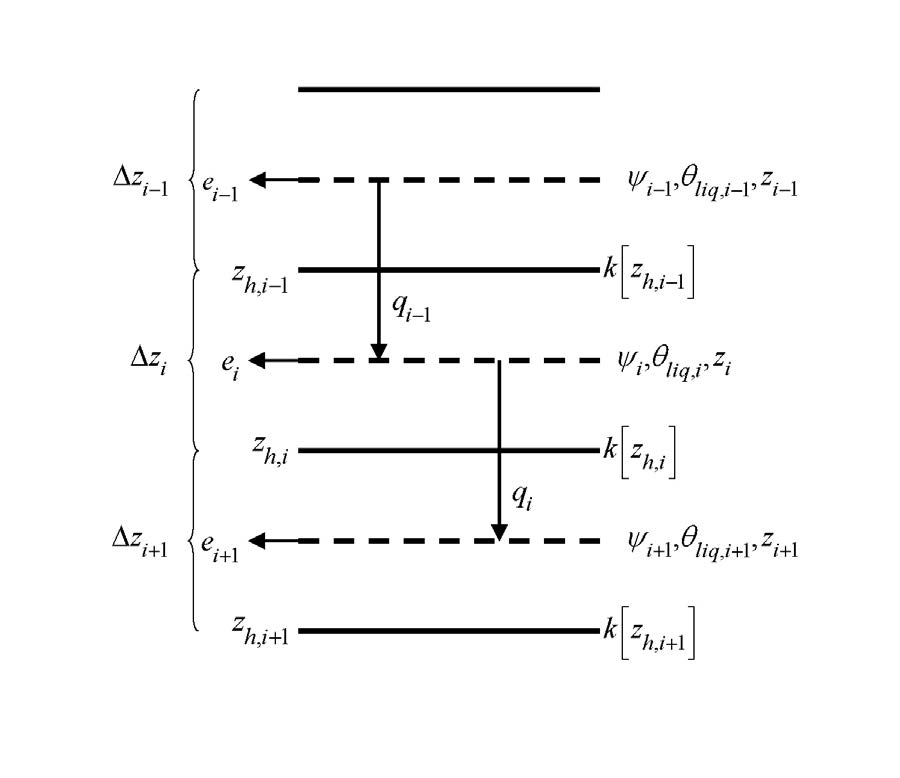
The soil water fluxes in equation ([eq:soil_water_fluxes]), which are a function of \(\theta_{liq,i}\) and \(\theta_{liq,i+1}\) because of their dependence on hydraulic conductivity and soil matric potential, can be linearized about \(\partial \theta\) using a Taylor series expansion as \[\begin{equation} q_{i}^{n+1} = q_{i}^{n}+\frac{\partial q_{i}}{\partial \theta_{liq,i}}\Delta\theta_{liq,i}+\frac{\partial q_{i}}{\partial \theta_{liq,i+1}}\Delta \theta_{liq,i+1} \end{equation}\] \[\begin{equation} q_{i-1}^{n+1} = q_{i-1}^{n}+\frac{\partial q_{i-1}}{\partial \theta_{liq,i-1}}\Delta\theta_{liq,i-1}+\frac{\partial q_{i-1}}{\partial \theta_{liq,i}}\Delta \theta_{liq,i} \end{equation}\] Substitution of these expressions for \(q_{i}^{n+1}\) and \(q_{i-1}^{n+1}\) into equation ([eq:soil_water_fluxes]) results in a general tridiagonal equation set of the form \[\begin{equation} r_{i} = a_{i} \Delta \theta_{liq,i-1}+b_{i}\Delta \theta_{liq,i}+c_{i}\Delta \theta_{liq,i+1} \end{equation}\] where \[\begin{equation} \label{eq:tridiagonal_equation_a} a_{i} = -\frac{\partial q_{i-1}}{\partial \theta_{liq,i-1}} \end{equation}\] \[\begin{equation} b_{i} = \frac{\partial q_{i}}{\partial \theta_{liq,i}}-\frac{\partial q_{i-1}}{\partial \theta_{liq,i}}-\frac{\Delta z_{i}}{\Delta t} \end{equation}\] \[\begin{equation} c_{i} = \frac{\partial q_{i}}{\partial \theta_{liq,i+1}} \end{equation}\] \[\begin{equation} \label{eq:tridiagonal_equation_r} r_{i} = q_{i-1}^{n}-q_{i}^{n}+e_{i}. \end{equation}\] The tridiagonal equation set is solved over \(i=1,...,N_{levsoi}+1\) where the layer \(i=N_{levsoi}+1\) is a virtual layer representing the aquifer.
The finite-difference forms of the fluxes and partial derivatives in equations ([eq:tridiagonal_equation_a])–([eq:tridiagonal_equation_r]) can be obtained from equation ([eq:soil_water_flux_equilibrium_potential]) as
\[\begin{equation} q_{i-1}^{n} = -k[z_{h,i-1}]\left[\frac{(\psi_{i-1}-\psi_{i})+(\psi_{E,i}-\psi_{E,i-1})}{z_{i}-z_{i-1}}\right] \end{equation}\] \[\begin{equation} q_{i}^{n} = -k[z_{h,i-1}]\left[\frac{(\psi_{i}-\psi_{i+1})+(\psi_{E,i+1}-\psi_{E,i})}{z_{i+1}-z_{i-1}}\right] \end{equation}\] \[\begin{equation} \frac{\partial q_{i-1}}{\partial \theta_{liq,i-1}} =-\left[\frac{k[z_{h,i-1}]}{z_{i}-z_{i-1}}\frac{\partial \psi_{i-1}}{\partial \theta_{liq,i-1}} \right]-\frac{\partial k[z_{h,i-1}]}{\partial \theta_{liq,i-1}}\left[\frac{(\psi_{i-1}-\psi_{i})+(\psi_{E,i}-\psi_{E,i-1})}{z_{i}-z_{i-1}}\right] \end{equation}\] \[\begin{equation} \frac{\partial q_{i-1}}{\partial \theta_{liq,i}} =-\left[\frac{k[z_{h,i-1}]}{z_{i}-z_{i-1}}\frac{\partial \psi_{i}}{\partial \theta_{liq,i}} \right]-\frac{\partial k[z_{h,i-1}]}{\partial \theta_{liq,i}}\left[\frac{(\psi_{i-1}-\psi_{i})+(\psi_{E,i}-\psi_{E,i-1})}{z_{i}-z_{i-1}}\right] \end{equation}\] \[\begin{equation} \frac{\partial q_{i}}{\partial \theta_{liq,i}} =-\left[\frac{k[z_{h,i}]}{z_{i+1}-z_{i}}\frac{\partial \psi_{i}}{\partial \theta_{liq,i}} \right]-\frac{\partial k[z_{h,i}]}{\partial \theta_{liq,i}}\left[\frac{(\psi_{i}-\psi_{i+1})+(\psi_{E,i+1}-\psi_{E,i})}{z_{i+1}-z_{i}}\right] \end{equation}\] \[\begin{equation} \frac{\partial q_{i}}{\partial \theta_{liq,i+1}} =-\left[\frac{k[z_{h,i}]}{z_{i+1}-z_{i}}\frac{\partial \psi_{i+1}}{\partial \theta_{liq,i+1}} \right]-\frac{\partial k[z_{h,i}]}{\partial \theta_{liq,i+1}}\left[\frac{(\psi_{i}-\psi_{i+1})+(\psi_{E,i+1}-\psi_{E,i})}{z_{i+1}-z_{i}}\right] \end{equation}\]
The derivatives of the soil matric potential at the node depth are derived from equation ([eq:soil_matric_potential]) \[\begin{equation} \frac{\partial \psi_{i-1}}{\partial \theta_{liq,i-1}} = -B_{i-1}\frac{\psi_{i-1}}{\theta_{i-1}} \end{equation}\] \[\begin{equation} \frac{\partial \psi_{i}}{\partial \theta_{liq,i}} = -B_{i}\frac{\psi_{i}}{\theta_{i}} \end{equation}\] \[\begin{equation} \frac{\partial \psi_{i+1}}{\partial \theta_{liq,i+1}} = -B_{i+1}\frac{\psi_{i+1}}{\theta_{i+1}} \end{equation}\] with the constraint 0.01\(\theta_{sat,i} \leq\theta_{i}\leq\theta_{sat,i}\).
The derivatives of the hydraulic conductivity at the layer interface are derived from equation ([eq:saturated_hydraulic_conducivity]) \[\begin{equation} \begin{aligned} \frac{\partial k[z_{h,i-1}]}{\partial \theta_{liq,i-1}} &= \frac{\partial k[z_{h,i-1}]}{\partial \theta_{liq,i}}\\ &=\left(1-\frac{f_{frz,i-1}+f_{frz,i}}{2}\right)(2B_{i-1}+3)k_{sat}[z_{h,i-1}]\left[\frac{0.5(\theta_{i-1}+\theta_{i})}{0.5(\theta_{sat,i-1}+\theta_{sat,i})}\right]^{2B_{i-1}+2}\left(\frac{0.5}{\theta_{sat,i-1}}\right) \end{aligned} \end{equation}\] \[\begin{equation} \begin{aligned} \frac{\partial k[z_{h,i}]}{\partial \theta_{liq,i}} &= \frac{\partial k[z_{h,i}]}{\partial \theta_{liq,i+1}}\\ &=\left(1-\frac{f_{frz,i}+f_{frz,i+1}}{2}\right)(2B_{i}+3)k_{sat}[z_{h,i}]\left[\frac{0.5(\theta_{i}+\theta_{i+1})}{0.5(\theta_{sat,i}+\theta_{sat,i+1})}\right]^{2B_{i}+2}\left(\frac{0.5}{\theta_{sat,i}}\right) \end{aligned} \end{equation}\]
5.3.2.1 5.3.2.1 Equilibrium Soil Matric Potential and Volumetric Moisture
The equilibrium soil matric potential \(\psi_{E}\) can be derived from equation ([eq:constant_hydraulic_potential_above_water]) as \[\begin{equation} \label{eq:equilibrium_soil_matric_potential} \psi_{E} = \psi_{sat} \left(\frac{\theta_{E}(z)}{\theta_{sat}}\right)^{-B} \end{equation}\] and the equilibrium volumetric water content \(\theta_{E}(z)\) at depth \(z\) can also be derived as \[\begin{equation} \theta_{E}(z)=\theta_{sat}\left(\frac{\psi_{sat}+z_{\nabla}-z}{\psi_{sat}}\right)^{-\frac{1}{B}}. \end{equation}\] Here, the soil matric potentials, the water table depth \(z_{\nabla}\) and the soil depths have units of mm. For the finite-difference scheme, a layer-average equilibrium volumetric water content is used in equation ([eq:equilibrium_soil_matric_potential]) and can be obtained from \[\begin{equation} \overlines{\theta_{E,i}} = \int_{z_{h,i-1}}^{z_{h,i}}\frac{\theta_{E}(z)}{z_{h,i}-z_{h,i-1}}dz \end{equation}\] which when integrated yields \[\begin{equation} \label{eq:equilibrium_volumetric_water_content} \overline{\theta_{E,i}} = \frac{\theta_{sat,i}\psi_{sat,i}}{(z_{h,i}-z_{h,i-1})(1-\frac{1}{B_{i}})}\left[\left(\frac{\psi_{sat,i}-z_{\nabla}+z_{h,i}}{\psi_{sat,i}}\right)^{1-\frac{1}{B_{i}}}-\left(\frac{\psi_{sat,i}-z_{\nabla}+z_{h,i-1}}{\psi_{sat,i}}\right)^{1-\frac{1}{B_{i}}}\right]. \end{equation}\] Equation ([eq:equilibrium_volumetric_water_content]) is valid when the water table \(z_{\nabla}\) is deeper than both interface depths \(z_{h,i-1}\) and \(z_{h,i}\). Since the water table can be within the soil column, the equation is modified if the water table is within soil layer \(i\) (\(z_{h,i-q}<z_{\nabla}<z_{h,i}\)) as a weighted average of the saturated part and the unsaturated part \[\begin{equation} \overline{\theta_{E,i}}=\overline{\theta_{E,sat,i}}\left(\frac{z_{h,i}-z_{\nabla}}{z_{h,i}-z_{h,i-1}}\right)+\overline{\theta_{E,unsat,i}}\left(\frac{z_{\nabla}-z_{h,z-1}}{z_{h,i}-z_{h,i-1}}\right) \end{equation}\] where \(\overline{\theta_{E,sat,i}}=\theta_{sat,i}\) and the unsaturated part \(\overline{\theta_{E,unsat,i}}\) is \[\begin{equation} \overline{\theta_{E,unsat,i}} = \frac{\theta_{sat,i}\psi_{sat,i}}{(z_{\nabla}-z_{h,i-1})(1-\frac{1}{B_{i}})}\left[1-\left(\frac{\psi_{sat,i}-z_{\nabla}+z_{h,i-1}}{\psi_{sat,i}}\right)^{1-\frac{1}{B_{i}}}\right]. \end{equation}\] If \(z_{\nabla}<z_{h,i-1}\), the \(\overline{\theta_{E,i}}=\overline{\theta_{E,sat,i}}=\theta_{sat,i}\). If the water table is below the soil column (\(z_{\nabla}>z_{h,N_{levsoi}}\)), an equilibrium volumetric soil moisture is calculated for a virtual layer \(i=N_{levsoi}+1\) as \[\begin{equation} \label{eq:equilibrium_volumetric_soil_moisture} \overline{\theta_{E,i=N_{levsoi}+1}} = \frac{\theta_{sat,i-1}\psi_{sat,i-1}}{(z_{\nabla}-z_{h,i-1})(1-\frac{1}{B_{i}})}\left[1-\left(\frac{\psi_{sat,i-1}-z_{\nabla}+z_{h,i-1}}{\psi_{sat,i-1}}\right)^{1-\frac{1}{B_{i-1}}}\right]. \end{equation}\] The equilibrium volumetric soil moisture is constrained by \[\begin{equation} 0\leq \overline{\theta_{E,i}}\leq \theta_{sat,i} \end{equation}\] The equilibrium soil matric potential is then \[\begin{equation} \label{eq:equilibrium_soil_matric_potential2} \psi_{E,i}=\psi_{sat,i}\left(\frac{\overline{\theta_{E,i}}}{\theta_{sat,i}}\right)^{-B_{i}}\geq -1\times10^{8} \quad \frac{\overline{\theta_{E,i}}}{\theta_{sat,i}}\geq0.01 \end{equation}\]
5.3.2.2 5.3.2.2 Equation Set for Layer \(i=1\)
For the top soil layer (\(i=\)1), the boundary condition is the infiltration rate (section 5.2), \(q_{i-1}^{n+1}=-q_{infl}^{n+1}\), and the water balance equation is \[\begin{equation} \frac{\Delta z_{i}\Delta \theta_{liq,i}}{\Delta t} = q_{infl}^{n+1}+q_{i}^{n+1}-e_{i}. \end{equation}\] After grouping like terms, the coefficients of the tridiagonal set of equations for \(i=1\) are \[\begin{equation} a_{i} = 0 \end{equation}\] \[\begin{equation} b_{i} = \frac{\partial q_{i}}{\partial \theta_{liq,i}} - \frac{\Delta z_{i}}{\Delta t} \end{equation}\] \[\begin{equation} c_{i} = \frac{\partial q_{i}}{\partial \theta_{liq,i+1}} \end{equation}\] \[\begin{equation} r_{i} = q_{infl}^{n+1}-q_{i}^{n}+e_{i}. \end{equation}\]
5.3.2.3 5.3.2.3 Equation Set for Layers \(i=2,...,N_{levsoi}-1\)
The coefficients of the tridiagonal set of equations for \(i=2,...,N_{levsoi}-1\) are \[\begin{equation} a_{i} = -\frac{\partial q_{i-1}}{\partial \theta_{liq,i-1}} \end{equation}\] \[\begin{equation} b_{i} = \frac{\partial q_{i}}{\partial \theta_{liq,i}} - \frac{\partial q_{i-1}}{\partial \theta_{liq,i}} - \frac{\Delta z_{i}}{\Delta t} \end{equation}\] \[\begin{equation} c_{i} = \frac{\partial q_{i}}{\partial \theta_{liq,i+1}} \end{equation}\] \[\begin{equation} r_{i} = q_{i-1}^{n}-q_{i}^{n}+e_{i}. \end{equation}\]
5.3.2.4 5.3.2.4 Equation Set for Layers \(i=N_{levsoi},...,N_{levsoi}+1\)
For the lowest soil layer (\(i=N_{levsoi}\)), the bottom boundary condition depends on the depth of the water table. If the water table is within the soil column (\(z_{\nabla}\leq z_{h,N_{levsoi}}\)), a zero-flux bottom boundary condition is applied (\(q_{i}^n = 0\)) and the coefficients of the tridiagonal set of equations for \(i=N_{levsoi}\) are \[\begin{equation} a_{i} = -\frac{\partial q_{i-1}}{\partial \theta_{liq,i-1}} \end{equation}\] \[\begin{equation} b_{i} = - \frac{\partial q_{i-1}}{\partial \theta_{liq,i}} - \frac{\Delta z_{i}}{\Delta t} \end{equation}\] \[\begin{equation} c_{i} = 0 \end{equation}\] \[\begin{equation} r_{i} = q_{i-1}^{n}+e_{i}. \end{equation}\] The coefficients for the aquifer layer \(i=N_{levsoi}+1\) are then \[\begin{equation} a_{i} = 0 \end{equation}\] \[\begin{equation} b_{i} = - \frac{\Delta z_{i}}{\Delta t} \end{equation}\] \[\begin{equation} c_{i} = 0 \end{equation}\] \[\begin{equation} r_{i} = 0. \end{equation}\]
If the water table is below the soil column (\(z_{\nabla}>z_{h,N_{levsoi}}\)), the coefficients for \(i=N_{levsoi}\) are \[\begin{equation} a_{i} = -\frac{\partial q_{i-1}}{\partial \theta_{liq,i-1}} \end{equation}\] \[\begin{equation} b_{i} = - \frac{\partial q_{i}}{\partial \theta_{liq,i}} -\frac{\partial q_{i-1}}{\partial \theta_{liq,i}} - \frac{\Delta z_{i}}{\Delta t} \end{equation}\] \[\begin{equation} c_{i} = \frac{\partial q_{i}}{\partial \theta_{liq,i+1}} \end{equation}\] \[\begin{equation} r_{i} = q_{i-1}^{n}-q_{i}^{n}+e_{i}. \end{equation}\] The \(i=N_{levsoi}+1\) terms are evaluated using \[\begin{equation} \psi_{N_{levsoi}+1}=\psi_{sat,N_{levsoi}}[S_{N_{levsoi}}]^{-B_{N_{levsoi}}}\geq -1\times10^{8} \end{equation}\] \[\begin{equation} z_{N_{levsoi+1}}=0.5(z_{\nabla}+z_{N_{levsoi}}) \end{equation}\] where \[\begin{equation} S_{N_{levsoi}+1} = 0.5\left(\frac{\theta_{sat,N_{levsoi}}+\theta_{N_{levsoi}}}{\theta_{sat,N_{levsoi}}}\right) \quad 0.01 \leq S_{N_{levsoi}+1}\leq 1, \end{equation}\] \(\psi_{E,N_{levsoi}+1}\) is evaluated from equations ([eq:equilibrium_volumetric_soil_moisture]) and ([eq:equilibrium_soil_matric_potential2]), and \[\begin{equation} \frac{\partial \psi_{N_{levsoi}+1}}{\partial \theta_{liq,N_{levsoi}+1}}=-B_{N_{levsoi}}\frac{\psi_{N_{levsoi}+1}}{s_{N_{levsoi}}\theta_{sat,N_{levsoi}}} \end{equation}\] The coefficients for the aquifer layer \(i=N_{levsoi}+1\) are then \[\begin{equation} a_{i} = -\frac{\partial q_{i-1}}{\partial \theta_{liq,i-1}} \end{equation}\] \[\begin{equation} b_{i} = -\frac{\partial q_{i-1}}{\partial \theta_{liq,i}} - \frac{\Delta z_{i}}{\Delta t} \end{equation}\] \[\begin{equation} c_{i} = 0 \end{equation}\] \[\begin{equation} r_{i} = q_{i-1}^{n}. \end{equation}\] Upon solution of the tridiagonal equation set[74], the liquid water contents are updated as follows \[\begin{equation} w_{liq,i}^{n+1} = w_{liq,i}^{n}+\Delta \theta_{liq,i}\Delta z_{i} \quad i=1,...,N_{levsoi}. \end{equation}\] The volumetric water content is \[\begin{equation} \theta_{i} = \frac{w_{liq,i}}{\Delta z_{i}\rho_{liq}}+\frac{w_{ice,i}}{\Delta z\rho_{ice}}. \end{equation}\]
5.4 Groundwater-Soil Water Interactions for the Pervious Road
Drainage or sub-surface runoff for the pervious road is based on the SIMTOP scheme[85] with a modification to account for reduced drainage in frozen soils. In the work of[85], the draignage \(q_{drai}\) (kg m\(^{-2}\) s\(^{-1}\)) was formulated as \[\begin{equation} \label{eq:drainage} q_{drai} = q_{drai,max}\exp(-f_{drai}z_{\nabla}). \end{equation}\] Here, the water table depth \(z_{\nabla}\) has units of meters. To restrict drainage in frozen soils,[85] added the following condition \[\begin{equation} q_{drai} = 0 \quad \textrm{for}\;w_{ice,N_{levsoi}}>w_{liq,N_{levsoi}}. \end{equation}\] In preliminary testing it was found that a more gradual restriction of drainage was required so that the water table depth remained dynamic under partially frozen conditions. The following modification is made to equation ([eq:drainage]) \[\begin{equation} \label{eq:drainage_impermeable} q_{drain} = (1-f_{imp})q_{drai,max}\exp(-f_{drai}z_{\nabla}) \end{equation}\] where \(f_{imp}\) is the fraction of impermeable area determined from the ice content of the soil layers interacting with the water table
\[\begin{equation} f_{imp} = \frac{\exp \left[-\alpha \left(1-\frac{\sum\limits_{i=jwt}^{i=N_{levsoi}}\frac{w_{ice,i}}{w_{ice,i}+w_{liq,i}}\Delta z_{i}}{\sum\limits_{i=jwt}^{i=N_{levsoi}} \Delta z_{i}}\right)\right]-\exp (-\alpha)}{1-\exp (-\alpha)} \geq 0 \end{equation}\] where \(\alpha=\)3 is an adjustable scale-dependent parameter, \(jwt\) is the index of the layer directly above the water table, \(w_{ice,i}\) and \(w_{liq,i}\) are the ice and liquid water contents of soil layer \(i\) (kg m\(^{-2}\)), and \(\Delta z_{i}\) is the layer thickness (m). This expression is functionally the same as that used to determine the impermeable fraction (equation ([eq:impermeable_fraction])). In equation ([eq:drainage_impermeable]), the decay factor \(f_{drai}=\)2.5 m\(^{-1}\) and the maximum drainage when the water table depth is at the surface \(q_{drai,max}=\)5.5\(\times\)10\(^{3}\) kg m\(^{-2}\) s\(^{-1}\) were determined for global simulations through sensitivity analysis and comparison with observed runoff.
Determination of water table depth \(z_{\nabla}\) is based on work by[89]. In this approach, a groundwater component is added in the form of an unconfined aquifer lying below the soil column (Figure 13). The groundwater solution is dependent on whether the water table is within or below the soil column. Two water stores are used to account for these solutions. The first, \(W_{a}\), is the water stored in the unconfined aquifer (mm) and is proportional to the change in water table depth when the water table is below the lower boundary of the hydrologically-active soil column. The second, \(W_{t}\), is the actual groundwater which can include water within the soil column. When the water table is below the soil column \(W_{t} = W_{a}\). When the water table is within the soil column, \(W_{a}\) is constant because there is no water exchange between the soil column and the underlying aquifer, while \(W_{t}\) varies with soil moisture conditions.
In either case, \(W_{t}\) is first updated as \[\begin{equation} W_{t}^{n+1} = W_{t}^{n}+(q_{recharge}-q_{drai})\Delta t \end{equation}\] where \(\Delta t\) is the model time step (s), \(q_{recharge}\) is the recharge to the aquifer (kg m\(^{-2}\) s\(^{-1}\)), and the drainage \(q_{drai}\) calculated from equation ([eq:drainage_impermeable]) is equivalent to the groundwater discharge.
For the case when the water table is below the soil column, the water stored in the unconfined aquifer \(W_{a}\) (mm) is updated as \[\begin{equation} W_{a}^{n+1} = W_{a}^{n}+(q_{recharge}-q_{drai})\Delta t \end{equation}\] and \(W_{t}^{n+1}\) is reset as \(W_{t}^{n+1}=W_{a}^{n+1}\). The recharge rate is defined as positive when water enters the aquifer \[\begin{equation} q_{recharge}=\frac{\Delta \theta_{liq,N_{levsoi}+1}\Delta z_{N_{levsoi}+1}}{\Delta t} \end{equation}\] where \(\Delta \theta_{liq,N_{levsoi}+1}=\Delta \theta_{liq,N_{levsoi}+1}^{n+1}-\Delta \theta_{liq,N_{levsoi}+1}^{n}\) is the change in liquid water content for layer \(i=N_{levsoi}+1\) calculated from the solution of the soil water equations (section 5.3), and \(\Delta z_{N_{levsoi+1}}\) (mm) is \[\begin{equation} \Delta z_{N_{levsoi}+1}=z_{\nabla}^{n}-z_{h,N_{levsoi}}. \end{equation}\] The water table depth is calculated from the aquifer water storage scaled by the average specific yield \(S_{y}=\)0.2 [the fraction of water volume that can be drained by gravity in an unconfined aquifer[89]] \[\begin{equation} \label{eq:water_table_depth} z_{\nabla}=z_{h,N_{levsoi}}+25-\frac{W_{a}}{10^{3}S_{y}}. \end{equation}\] The form of equation ([eq:water_table_depth]) originates from the assumption that the initial amount of water in the aquifer is 4800 mm and the corresponding water table depth is one meter below the bottom of the soil column. The water table depth is at the bottom of the soil column (\(z_{\nabla}=z_{h,N_{levsoi}}\)) when the aquifer water is at its prescribed maximum value (5000 mm). The bottom soil layer liquid water content is updated for excess aquifer water as \[\begin{equation} w_{liq,N_{levsoi}}^{n+1} = w_{liq,N_{levsoi}}^{n}+\max(0,W_{a}-5000) \end{equation}\] and aquifer water is reset to \(W_{a}\leq5000\).
For the case when the water table is within the soil column, there is no water exchange between the soil column and the underlying aquifer. However, variations of the water table depth are still calculated as \[\begin{equation} \label{eq:water_table_depth_variations} z_{\nabla}= \begin{cases} z_{h,jwt+1}-\left[\frac{W_{t}-10^3\times 25S_{y}-\sum\limits_{i=jwt+2}^{N_{}levsoi}\Delta z_{i}(\theta_{sat,i}-\theta_{ice,i})}{10^3(\theta_{sat,jwt+1}-\theta_{ice,jwt+1})}\right] & jwt=1,...,N_{levsoi}-2 \\ z_{h,jwt+1}-\left[\frac{W_{t}-10^3\times 25S_{y}}{10^3(\theta_{sat,jwt+1}-\theta_{ice,jwt+1})}\right] & jwt=N_{levsoi}-1 \end{cases} \end{equation}\] where \(jwt\) is the index of the layer directly above the water table, and limits are placed on the water table depth as 0.05\(\leq z_{\nabla} \leq\)80. In the work of[89], the water table depth in this case was calculated with the specific yield determined by the volume of air pores (the pore space not filled with water) within the soil to convert \(W_{t}\) to a water table depth. However, this was found to result in unstable water table calculations for a significant proportion of grid cells in global simulations. More specifically, when repeatedly forcing the model with a single year of atmospheric data, the temporal evolution of water table depth was significantly different from year to year for some grid cells, with occasional rapid (within a few days) movement of the water table to the soil surface in some cases. This occurred in grid cells with soil water contents near saturation because of the small amount of available pore space. This had deleterious implications for stability of surface fluxes and temperature. In equation ([eq:water_table_depth_variations]), the calculation is based on effective porosity (\(\theta_{sat,i}-\theta_{ice,i}\geq0.01\)) only. Although less defensible from a physical viewpoint, the approach stabilizes the water table calculation for these grid cells and eliminates unrealistic oscillations in surface fluxes and temperature.
In this case, the drainage \(q_{drai}\) is extracted from the soil liquid water in layers within the water table. The partitioning of drainage from these layers is proportional to the layer thickness-weighted hydraulic conductivity as \[\begin{equation} w_{liq,i}^{n+1} = w_{liq,i}^{n}-\frac{q_{drai}k[z_{h,i}]\Delta t \Delta z_{i}}{\sum\limits_{i=jwt+1}^{i=N_{levsoi}}k[z_{h,i}]\Delta z_{i}} \quad i=jwt+1,...,N_{levsoi} \end{equation}\] where \(\Delta t\) is the time step (s).
After the above calculations, two numerical adjustments are implemented to keep the liquid water content of each soil layer (\(w_{liq,i}\)) within physical constraints of \(w_{liq}^{\min}\leq w_{liq,i}\leq(\theta_{sat,i}-\theta_{ice,i})\Delta z_{i}\) where \(w_{liq}^{min}=-\)0.01 (mm). First, beginning with the bottom soil layer \(i=N_{levsoi}\), any excess liquid water in each soil layer (\(w_{liq,i}^{excess}=w_{liq,i}-(\theta_{sat,i}-\theta_{ice,i})\Delta z_{i}\geq\)0) is successively added to the layer above. Any excess liquid water that remains after saturating the entire soil column (plus a maximum surface ponding depth \(w_{liq}^{pond}=\)10 kg m\(^{-2}\) s\(^{-1}\)), is added to drainage \(q_{drai}\). Second, to prevent negative \(w_{liq,i}\), each layer is successively brought up to \(w_{liq,i}=w_{liq,min}\) by taking the required amount of water from the layer below. If this results in \(w_{liq,N_{levsoi}}<w_{liq}^{min}\), then the layers above are searched in succession for the required amount of water (\(w_{liq}^{min}-w_{liq,N_{levsoi}}\)) and removed from those layers subject to the constraint \(w_{liq,i}\geq w_{liq}^{min}\). If sufficient water is not found, then the water is removed from \(W_{t}\) and \(q_{drai}\).
The surface layer liquid water and ice contents for roof, pervious and impervious road are then updated for dew \(q_{sdew}\), frost \(q_{frost}\), or sublimation \(q_{subl}\) (section 3.2.4) as \[\begin{equation} w_{liq,1}^{n+1} = w_{liq,1}^{n}+q_{sdew}\Delta t, \end{equation}\] \[\begin{equation} w_{ice,1}^{n+1} = w_{ice,1}^{n}+q_{frost}\Delta t, \end{equation}\] \[\begin{equation} w_{ice,1}^{n+1} = w_{ice,1}^{n}-q_{subl}\Delta t. \end{equation}\] Sublimation of ice is limited to the amount of ice available.
5.5 Runoff From Snow-Capping
As with other surfaces, urban surfaces are constrained to have a snow water equivalent \(W_{sno}\leq\)1000 kg m\(^{-2}\). For snow-capped surfaces, the solid and liquid precipitation reaching the snow surface and dew in solid or liquid form, is separated into solid \(q_{snwcp,ice}\) and liquid \(q_{snwcp,liq}\) runoff terms \[\begin{equation} q_{snwcp,ice}=q_{grnd,ice}+q_{frost} \end{equation}\] \[\begin{equation} q_{snwcp,liq}=q_{grnd,liq}+q_{dew} \end{equation}\] and snow pack properties are unchanged. The \(q_{snwcp,ice}\) runoff is sent to the River Transport Model (RTM) where it is routed to the ocean as an ice stream and, if applicable, the ice is melted there. The \(q_{snwcp,liq}\) runoff is assigned to the runoff term \(q_{rgwl}\) (e.g., \(q_{rgwl}=q_{snwcp,liq}\)) and included in the liquid water runoff sent to RTM.
6 Offline Mode
In offline mode (uncoupled to an atmospheric model), the atmospheric forcing required by CLM (Table 1) is supplied by observed datasets. The standard forcing provided with the model is a 57-year (1948–2004) dataset that is described in[90] though alternative observed forcing datasets could also be used. The forcing data is ingested into a data atmosphere model in three “streams”; precipitation (\(P\)) (mm s\(^{-1}\)), solar radiation (\(S_{atm}\)) (W m\(^{-2}\)), and four other fields [atmospheric pressure (\(P_{atm}\)) (Pa), atmospheric specific humidity (\(q_{atm}\)) (kg kg\(^{-1}\)), atmospheric temperature \(T_{atm}\) (K), and atmospheric wind \(W_{atm}\) (m s\(^{-1}\))]. These are separate streams because they are handled differently according to the type of field and the temporal resolution at which they are provided. In the[90] dataset, the precipitation stream is provided at six hour intervals and the data atmosphere model prescribes the same precipitation rate for each model time step within the six hour period. The four fields that are grouped together in another stream (pressure, humidity, temperature, and wind) are provided at three hour intervals and the data atmosphere model linearly interpolates these fields to the time step of the model.
The total solar radiation is provided at six hour intervals. The data is fit to the model time step using a diurnal function that depends on the cosine of the solar zenith angle \(\mu\) to provide a smoother diurnal cycle of solar radiation and to ensure that all of the solar radiation supplied by the six-hourly forcing data is actually used. The solar radiation at model time step \(t_{M}\) is \[\begin{equation} \label{eq:solar_radiation_sum} \begin{aligned} & S_{atm}(t_{M})=\frac{\frac{\Delta t_{FD}}{\Delta t_{M}}S_{atm}(t_{FD})\mu(t_{M})}{\sum\limits_{i=1}^{\frac{\Delta t_{FD}}{\Delta t_{M}}}\mu(t_{M_{i}})} & \textrm{for}\; \mu(t_{M})>0.001 \\ & S_{atm}(t_{M})=0 & \textrm{for}\; \mu(t_{M})\leq 0.001 \end{aligned} \end{equation}\] where \(\Delta t_{FD}\) is the time step of the forcing data (6 hours \(\times\) 3600 seconds hour\(^{-1}=\)21600 seconds), \(\Delta t_{M}\) is the model time step (seconds), \(S_{atm}(t_{FD})\) is the six-hourly solar radiation from the forcing data (W m\(^{-2}\)), and \(\mu(t_{M})\) is the cosine of the solar zenith angle at model time step \(t_{M}\) (section 2.8). The term in the denominator of equation ([eq:solar_radiation_sum]) is the sum of the cosine of the solar zenith angle for each model time step falling within the six hour period. For numerical purposes, \(\mu(t_{M_{i}})\geq0.001\).
The total incident solar radiation \(S_{atm}\) at the model time step \(t_{M}\) is then split into near-infrared and visible radiation and partitioned into direct and diffuse according to factors derived from one year’s worth of hourly CAM output from CAM version \(\texttt{cam3\_5\_55}\) as \[\begin{equation} S_{atm}\downarrow_{vis}^{\mu}=R_{vis}(\alpha S_{atm}) \end{equation}\] \[\begin{equation} S_{atm}\downarrow_{nir}^{\mu}=R_{nir}[(1-\alpha) S_{atm}] \end{equation}\] \[\begin{equation} S_{atm}\downarrow_{vis}=(1-R_{vis})(\alpha S_{atm}) \end{equation}\] \[\begin{equation} S_{atm}\downarrow_{nir}=(1-R_{nir}[(1-\alpha) S_{atm}], \end{equation}\] where \(\alpha\), the ratio of visible to total incident solar radiation, is assumed to be \[\begin{equation} \alpha = \frac{S_{atm}\downarrow_{vis}^\mu+S_{atm}\downarrow_{vis}}{S_{atm}}=0.5. \end{equation}\] The ratio of direct to total incident radiation in the visible \(R_{vis}\) is \[\begin{equation} R_{vis}=a_{0}+a_{1}\times\alpha S_{atm}+a_{2}\times(\alpha S_{atm})^2+a_{3}\times(\alpha S_{atm})^3 \quad 0.01\leq R_{vis} \leq 0.99 \end{equation}\] and in the near-infrared \(R_{nir}\) is \[\begin{equation} R_{nir}=b_{0}+b_{1}\times(1-\alpha) S_{atm}+b_{2}\times[(1-\alpha) S_{atm}]^2+b_{3}\times[(1-\alpha) S_{atm}]^3 \quad 0.01\leq R_{nir} \leq 0.99 \end{equation}\] where \(a_{0}=0.17639\), \(a_{1}=\)0.00380, \(a_{2}=-\)9.0039\(\times\)10\(^{-6}\), \(a_{3}=\)8.1351\(\times\)10\(^{-9}\) and \(b_{0}=\)0.29548, \(b_{1}=\)0.00504, \(b_{2}=-\)1.4957\(\times\)10\(^{5}\), \(b_{3}=\)1.4881\(\times\)10\(^{-8}\) are coefficients from polynomial fits to the CAM data.
The additional atmospheric forcing variables required by Table 1 are derived as follows. The atmospheric reference height \(z'_{atm}\) (m) is set to 30 m. The directional wind components are derived as \(u_{atm}=v_{atm}=W_{atm}/\sqrt{2}\). The potential temperature \(\overline{\theta_{atm}}\) (K) is set to the atmospheric temperature \(T_{atm}\). The atmospheric longwave radiation \(L_{atm}\downarrow\) (W m\(^{-2}\)) is derived from the atmospheric vapor pressure \(e_{atm}\) and temperature \(T_{atm}\)[91] as \[\begin{equation} L_{atm}\downarrow = 0.70+5.95\times 10^{-5} \times 0.01e_{atm}\exp(\frac{1500}{T_{atm}})\sigma T_{atm}^4 \end{equation}\] where \[\begin{equation} e_{atm} = \frac{P_{atm}q_{atm}}{0.622+0.378q_{atm}} \end{equation}\] and \(\sigma\) is the Stefan-Boltzmann constant (W m\(^{-2}\) K\(^{-4}\)) (Table 4). The fraction of precipitation \(P\) (mm s\(^{-1}\)) falling as rain and/or snow is \[\begin{equation} q_{rain} = P(f_{P}), \end{equation}\] \[\begin{equation} q_{snow}=P(1-f_{P}) \end{equation}\] where \[\begin{equation} f_{P} =0 < 0.5(T_{atm}-T_{f})<1. \end{equation}\]
If the user wishes to provide atmospheric forcing data from another source, the data format outlined above will need to be followed with the following exceptions. The data atmosphere model will accept a user-supplied relative humidity \(RH\) (%) and derive specific humidity \(q_{atm}\) (kg kg\(^{-1}\)) from \[\begin{equation} q_{atm}=\frac{0.662e_{atm}}{P_{atm}-0.378e_{atm}} \end{equation}\] where the atmospheric vapor pressure \(e_{atm}\) (Pa) is derived from the water (\(T_{atm}>T_{f}\)) or ice (\(T_{atm}<T_{f}\)) saturation vapor pressure \(e_{sat}^{T_{atm}}\) as \(e_{atm}=\frac{RH}{100}e_{sat}^{T_{atm}}\) where \(T_{f}\) is the freezing temperature of water (K) (Table 4), and \(P_{atm}\) is the pressure at height \(z_{atm}\) (Pa). The data atmosphere model will also accept a user-supplied dew point temperature \(T_{dew}\) (K) and derive specific humidity \(q_{atm}\) from \[\begin{equation} q_{atm}=\frac{0.662e_{sat}^{T_{dew}}}{P_{atm}-0.378e_{sat}^{T_{dew}}}. \end{equation}\] Here, \(e_{sat}^{T}\), the saturation vapor pressure as a function of temperature, is derived from[92] polynomials (section 3.3). If not provided by the user, the atmospheric pressure \(P_{atm}\) (Pa) is set equal to the standard atmospheric pressure \(P_{std}=\)101325 Pa, and surface pressure \(P_{srf}\) (Pa) is set equal to \(P_{atm}\).
The user may provide the total direct and diffuse solar radiation, \(S_{atm}\downarrow^{\mu}\) and \(S_{atm}\downarrow\). These will be time-interpolated using the procedure described above and then each term equally apportioned into the visible and near-infrared wavebands (e.g., \(S_{atm}\downarrow_{vis}^{\mu}=0.5S_{atm}\downarrow^{\mu}\), \(S_{atm}\downarrow_{nir}^{\mu}=0.5S_{atm}\downarrow^{\mu}\)).
7 Evaluation
[1,2] describe efforts to evaluate the urban model. This includes a quantitative evaluation of model performance at two specific urban sites, an examination of the robustness of the model through sensitivity studies, and a qualitative evaluation of the urban climate produced by the model, with a focus on the characteristics of the simulated heat island. An additional evaluation component not appearing in these two papers is presented below.
7.1 Nighttime Longwave Radiation and Surface Temperature
Nighttime net longwave radiation and air temperature data for an urban canyon in the Grandview district of Vancouver, British Columbia (49ºN, 123ºW)[93,94] are used to examine the longwave radiation budget and surface temperatures simulated by the model. The canyon is oriented north-south and is located in a mixed light industrial and residential district. The canyon is 79m long, 7.54m wide, and the east and west walls are 7.31m and 5.59m in height, respectively. Walls are concrete, painted flat white with no windows. The canyon floor consists of a 3-5 cm layer of gravel and clay. Weather conditions on the night of September 9-10, 1973 were clear and calm. Air temperature and net longwave radiation measured at about 0.3m above the midpoint of the canyon floor and from the mid-height of each wall are compared with simulated canyon floor and wall surface temperature and net longwave radiation.
The observation site has been used to validate other urban models such as SHIM (Surface Heat Island Model)[95], the Town Energy Budget (TEB) scheme[41], NSLUCM (Noah land surface model/Single-layer Urban Canopy Model)[96], and VUCM (Vegetated Urban Canopy Model)[97]. Published data from[97] were used to determine input parameters for the urban model as these data appeared to produce the best simulations compared to observations (Table 8). The canyon floor was modeled as a sandy clay soil with no moisture content. No anthropogenic fluxes were prescribed. Atmospheric wind speed at 10m height was set to 2 m s\(^{-1}\) and specific humidity to 0.01 kg kg\(^{-1}\) throughout the simulation[97]. Atmospheric air temperature was initialized at 19 ºC and set to the calculated canyon air temperature on subsequent time steps to maintain a neutral temperature profile (no thermal turbulent fluxes between the canyon and the atmosphere)[41]. Specific humidity of canyon air is set to the atmospheric specific humidity. Downward longwave radiation was initialized to 339 W m\(^{-2}\) and decreased linearly with the atmospheric air temperature[41]. Initial wall and canyon floor temperatures were set to 18.35ºC and 18.5ºC, respectively per[95].
| Data | Symbol | Default value | Units |
|---|---|---|---|
| Percent urban | – | 100 | % |
| Canyon height to width ratio | H/W | 0.85 – | |
| Roof fraction | \(W_{roof}\) | 0.00 | – |
| Pervious road fraction | \(f_{prvrd}\) | 1.00 | – |
| Emissivity of pervious road | \(\epsilon_{imprvrd}\) | 0.98 | – |
| Emissivity of sunlit and shaded walls | \(\epsilon_{wall}\) | 0.94 | – |
| Building height | \(H\) | 6.45 | m |
| Wall thermal conductivity | \(\lambda_{wall,i=1,10}\) | 0.81 | W m\(^{-1}\) K\(^{-1}\) |
| Pervious road thermal conductivity | \(\lambda_{imprvrd,i=1,10}\) | Soil texture[66] | W m\(^{-1}\) K\(^{-1}\) |
| Wall volumetric heat capacity | \(c_{wall,i=1,10}\) | 1.0 | MJ m\(^{-3}\) K\(^{-1}\) |
| Pervious road volumetric heat capacity | \(c_{imprvrd,i=1,10}\) | Soil texture[66] | W m\(^{-1}\) K\(^{-1}\) |
| Percent sand, percent clay of pervious road (soil) | %\(sand\), %\(clay\) | 52% sand, 48% clay | % |
| Wall thickness | \(\Delta z_{wall}\) | 0.3 | m |
Figure 16 shows the simulated surface temperatures and net longwave radiation for the walls and canyon floor compared to observations. The urban model does a good job simulating the nighttime cooling of canyon surfaces (note that the simulated west and east wall surface temperatures are the same). Temperature differences from observations are less than 1ºC at all times. Net longwave radiation is also well simulated, differences from observations are less than about 3 W m\(^{-2}\) for the west wall and canyon floor. The simulated net longwave radiation for the east wall is biased high by up to 7 W m\(^{-2}\). These results are quite similar to those from VUCM and generally slightly better than the models of[41],[95], and[96] which generally have warmer surface temperatures as noted by[97]. However, one important difference between[97] and the other studies is that the thermal admittance prescribed for the canyon floor is substantially lower in VUCM. When higher thermal admittance is prescribed in the urban model, warmer surface temperatures are simulated consistent with the other studies.
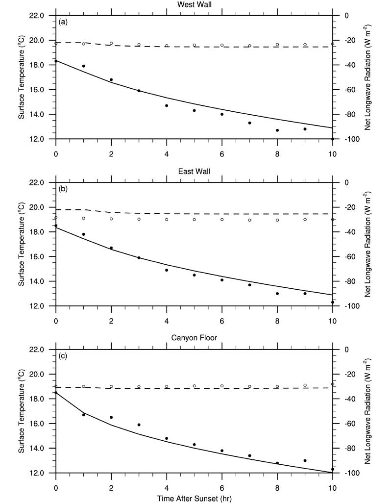